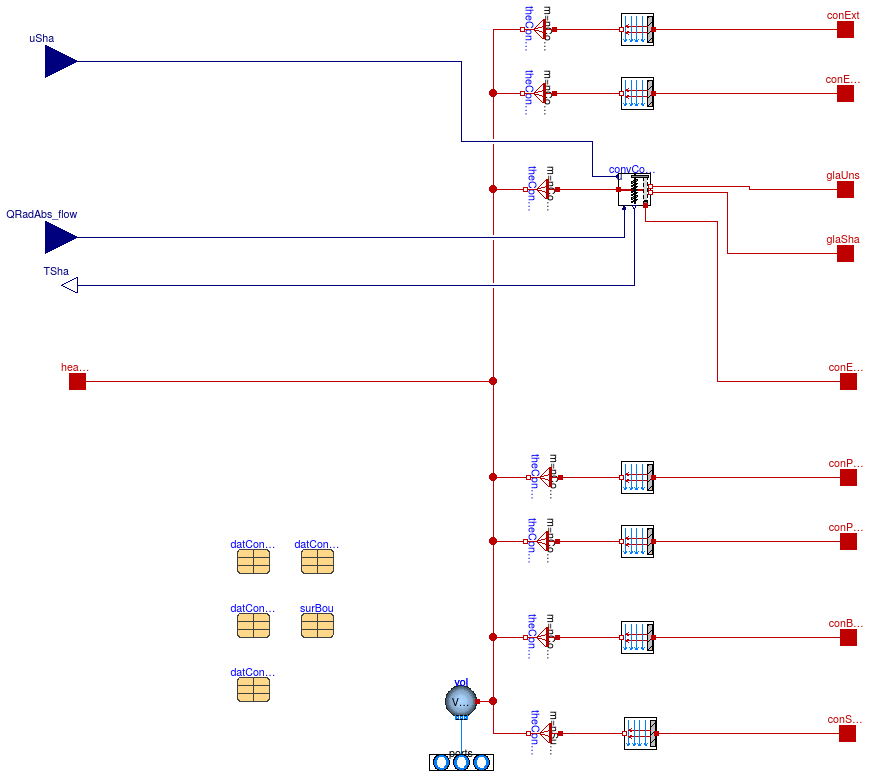
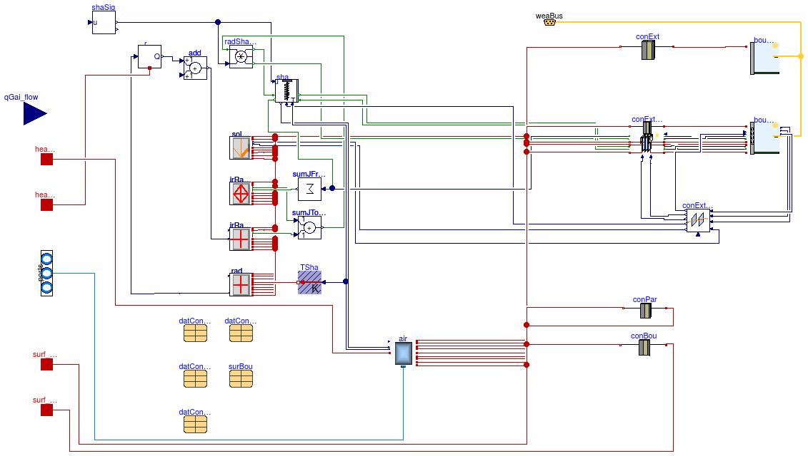

Package with base classes for Buildings.Rooms
Information
This package contains base classes that are used to construct the models in
Buildings.Rooms.
Extends from Modelica.Icons.BasesPackage (Icon for packages containing base classes).
Package Content
Heat and mass balance of the air, assuming completely mixed air

Information
This model computes the heat and mass balance of the air.
The model assumes a completely mixed air volume.
Extends from Buildings.Rooms.BaseClasses.ConstructionRecords (Data records for construction data), Buildings.Fluid.Interfaces.LumpedVolumeDeclarations (Declarations for lumped volumes).
Parameters
| Type | Name | Default | Description |
|---|
| ParameterConstruction | datConExt[NConExt] | | Data for exterior construction |
| ParameterConstructionWithWindow | datConExtWin[NConExtWin] | | Data for exterior construction with window |
| ParameterConstruction | datConPar[NConPar] | | Data for partition construction |
| ParameterConstruction | datConBou[NConBou] | | Data for construction boundary |
| OpaqueSurface | surBou[NSurBou] | | Record for data of surfaces whose heat conduction is modeled outside of this room |
| Brick120 | dummyCon | | Dummy construction to assign a parameter to the instance |
| SingleClear3 | dummyGlaSys | | Dummy construction to assign a parameter to the instance |
| replaceable package Medium | PartialMedium | Medium in the component |
| Volume | V | | Volume [m3] |
| Boolean | haveShade | | Set to true if at least one window has an interior or exterior shade |
| Exterior constructions |
| Integer | nConExt | | Number of exterior constructions |
| Integer | nConExtWin | | Number of window constructions |
| Partition constructions |
| Integer | nConPar | | Number of partition constructions |
| Boundary constructions |
| Integer | nConBou | | Number of constructions that have their outside surface exposed to the boundary of this room |
| Integer | nSurBou | | Number of surface heat transfer models that connect to constructions that are modeled outside of this room |
| Nominal condition |
| MassFlowRate | m_flow_nominal | | Nominal mass flow rate [kg/s] |
| Convective heat transfer |
| InteriorConvection | conMod | | Convective heat transfer model for opaque constructions |
| CoefficientOfHeatTransfer | hFixed | | Constant convection coefficient for opaque constructions [W/(m2.K)] |
| Dynamics |
| Equations |
| Dynamics | energyDynamics | Modelica.Fluid.Types.Dynamic... | Formulation of energy balance |
| Dynamics | massDynamics | energyDynamics | Formulation of mass balance |
| Real | mSenFac | 1 | Factor for scaling the sensible thermal mass of the volume |
| Initialization |
| AbsolutePressure | p_start | Medium.p_default | Start value of pressure [Pa] |
| Temperature | T_start | Medium.T_default | Start value of temperature [K] |
| MassFraction | X_start[Medium.nX] | Medium.X_default | Start value of mass fractions m_i/m [kg/kg] |
| ExtraProperty | C_start[Medium.nC] | fill(0, Medium.nC) | Start value of trace substances |
| ExtraProperty | C_nominal[Medium.nC] | fill(1E-2, Medium.nC) | Nominal value of trace substances. (Set to typical order of magnitude.) |
| Advanced |
| Boolean | homotopyInitialization | | = true, use homotopy method |
Connectors
| Type | Name | Description |
|---|
| input RealInput | uSha[NConExtWin] | Input connector, used to scale the surface area to take into account an operable shading device, 0: unshaded; 1: fully shaded |
| input RealInput | QRadAbs_flow[NConExtWin] | Total net radiation that is absorbed by the shade (positive if absorbed) [W] |
| output RealOutput | TSha[NConExtWin] | Shade temperature [K] |
| VesselFluidPorts_b | ports[nPorts] | Fluid inlets and outlets |
| HeatPort_a | heaPorAir | Heat port to air volume |
| HeatPort_a | conExt[NConExt] | Heat port that connects to room-side surface of exterior constructions |
| HeatPort_a | conExtWin[NConExtWin] | Heat port that connects to room-side surface of exterior constructions that contain a window |
| HeatPort_a | glaUns[NConExtWin] | Heat port that connects to room-side surface of unshaded glass |
| HeatPort_a | glaSha[NConExtWin] | Heat port that connects to room-side surface of shaded glass |
| HeatPort_a | conExtWinFra[NConExtWin] | Heat port that connects to room-side surface of window frame |
| HeatPort_a | conPar_a[NConPar] | Heat port that connects to room-side surface a of partition constructions |
| HeatPort_a | conPar_b[NConPar] | Heat port that connects to room-side surface b of partition constructions |
| HeatPort_a | conBou[NConBou] | Heat port that connects to room-side surface of constructions that expose their other surface to the outside |
| HeatPort_a | conSurBou[NSurBou] | Heat port to surfaces of models that compute the heat conduction outside of this room |
Modelica definition
model AirHeatMassBalanceMixed
"Heat and mass balance of the air, assuming completely mixed air"
extends Buildings.Rooms.BaseClasses.ConstructionRecords;
extends Buildings.Fluid.Interfaces.LumpedVolumeDeclarations;
parameter Modelica.SIunits.MassFlowRate m_flow_nominal(min=0)
"Nominal mass flow rate";
// Port definitions
parameter Integer nPorts=0
"Number of ports";
parameter Boolean homotopyInitialization
"= true, use homotopy method";
parameter Modelica.SIunits.Volume V
"Volume";
parameter Buildings.HeatTransfer.Types.InteriorConvection conMod
"Convective heat transfer model for opaque constructions";
parameter Modelica.SIunits.CoefficientOfHeatTransfer hFixed
"Constant convection coefficient for opaque constructions";
parameter Boolean haveShade
"Set to true if at least one window has an interior or exterior shade";
// Input/output signals
Modelica.Blocks.Interfaces.RealInput uSha[NConExtWin]
if haveShade
"Input connector, used to scale the surface area to take into account an operable shading device, 0: unshaded; 1: fully shaded";
Modelica.Blocks.Interfaces.RealInput QRadAbs_flow[NConExtWin](
final unit="W")
if
haveShade
"Total net radiation that is absorbed by the shade (positive if absorbed)";
Modelica.Blocks.Interfaces.RealOutput TSha[NConExtWin](
final unit="K",
final quantity="ThermodynamicTemperature")
if
haveShade
"Shade temperature";
// Fluid port
Modelica.Fluid.Vessels.BaseClasses.VesselFluidPorts_b ports[nPorts](
redeclare each final package Medium =
Medium)
"Fluid inlets and outlets";
// Heat ports
Modelica.Thermal.HeatTransfer.Interfaces.HeatPort_a heaPorAir
"Heat port to air volume";
Modelica.Thermal.HeatTransfer.Interfaces.HeatPort_a conExt[NConExt]
if
haveConExt
"Heat port that connects to room-side surface of exterior constructions";
Modelica.Thermal.HeatTransfer.Interfaces.HeatPort_a conExtWin[NConExtWin]
if
haveConExtWin
"Heat port that connects to room-side surface of exterior constructions that contain a window";
Modelica.Thermal.HeatTransfer.Interfaces.HeatPort_a glaUns[NConExtWin]
if
haveConExtWin
"Heat port that connects to room-side surface of unshaded glass";
Modelica.Thermal.HeatTransfer.Interfaces.HeatPort_a glaSha[NConExtWin]
if
haveShade
"Heat port that connects to room-side surface of shaded glass";
Modelica.Thermal.HeatTransfer.Interfaces.HeatPort_a conExtWinFra[NConExtWin]
if
haveConExtWin
"Heat port that connects to room-side surface of window frame";
Modelica.Thermal.HeatTransfer.Interfaces.HeatPort_a conPar_a[NConPar]
if
haveConPar
"Heat port that connects to room-side surface a of partition constructions";
Modelica.Thermal.HeatTransfer.Interfaces.HeatPort_a conPar_b[NConPar]
if
haveConPar
"Heat port that connects to room-side surface b of partition constructions";
Modelica.Thermal.HeatTransfer.Interfaces.HeatPort_a conBou[NConBou]
if
haveConBou
"Heat port that connects to room-side surface of constructions that expose their other surface to the outside";
Modelica.Thermal.HeatTransfer.Interfaces.HeatPort_a conSurBou[NSurBou]
if
haveSurBou
"Heat port to surfaces of models that compute the heat conduction outside of this room";
// Mixing volume
Fluid.MixingVolumes.MixingVolume vol(
redeclare package Medium =
Medium,
final energyDynamics=energyDynamics,
final massDynamics=massDynamics,
final V=V,
final p_start=p_start,
final T_start=T_start,
final X_start=X_start,
final C_start=C_start,
final C_nominal=C_nominal,
final m_flow_nominal = m_flow_nominal,
final prescribedHeatFlowRate = true,
final nPorts=nPorts,
m_flow_small=1E-4*
abs(m_flow_nominal),
allowFlowReversal=true)
"Room air volume";
// Convection models
HeatTransfer.Convection.Interior convConExt[NConExt](
final A=AConExt,
final til = datConExt.til,
each conMod=conMod,
each hFixed=hFixed,
each final homotopyInitialization=homotopyInitialization)
if
haveConExt
"Convective heat transfer";
HeatTransfer.Convection.Interior convConExtWin[NConExtWin](
final A=AConExtWinOpa,
final til = datConExtWin.til,
each conMod=conMod,
each hFixed=hFixed,
each final homotopyInitialization=homotopyInitialization)
if
haveConExtWin
"Convective heat transfer";
HeatTransfer.Windows.InteriorHeatTransferConvective convConWin[NConExtWin](
final fFra=datConExtWin.fFra,
final haveExteriorShade={datConExtWin[i].glaSys.haveExteriorShade
for i
in 1:NConExtWin},
final haveInteriorShade={datConExtWin[i].glaSys.haveInteriorShade
for i
in 1:NConExtWin},
final A=AConExtWinGla + AConExtWinFra)
if
haveConExtWin
"Model for convective heat transfer at window";
HeatTransfer.Convection.Interior convConPar_a[nConPar](
final A=AConPar,
final til=Modelica.Constants.pi .- datConPar.til,
each conMod=conMod,
each hFixed=hFixed,
each final homotopyInitialization=homotopyInitialization)
if
haveConPar
"Convective heat transfer";
HeatTransfer.Convection.Interior convConPar_b[nConPar](
final A=AConPar,
final til = datConPar.til,
each conMod=conMod,
each hFixed=hFixed,
each final homotopyInitialization=homotopyInitialization)
if
haveConPar
"Convective heat transfer";
HeatTransfer.Convection.Interior convConBou[nConBou](
final A=AConBou,
final til = datConBou.til,
each conMod=conMod,
each hFixed=hFixed,
each final homotopyInitialization=homotopyInitialization)
if
haveConBou
"Convective heat transfer";
HeatTransfer.Convection.Interior convSurBou[nSurBou](
final A=ASurBou,
final til = surBou.til,
each conMod=conMod,
each hFixed=hFixed,
each final homotopyInitialization=homotopyInitialization)
if
haveSurBou
"Convective heat transfer";
// Surface areas
protected
final parameter Modelica.SIunits.Area AConExt[NConExt] = datConExt.A
"Areas of exterior constructions";
final parameter Modelica.SIunits.Area AConExtWinOpa[NConExtWin] = datConExtWin.AOpa
"Opaque areas of exterior construction that have a window";
final parameter Modelica.SIunits.Area AConExtWinGla[NConExtWin] = (1 .- datConExtWin.fFra) .* datConExtWin.AWin
"Glass areas of exterior construction that have a window";
final parameter Modelica.SIunits.Area AConExtWinFra[NConExtWin] = datConExtWin.fFra .* datConExtWin.AWin
"Frame areas of exterior construction that have a window";
final parameter Modelica.SIunits.Area AConPar[NConPar] = datConPar.A
"Areas of partition constructions";
final parameter Modelica.SIunits.Area AConBou[NConBou] = datConBou.A
"Areas of constructions with exterior boundary conditions exposed to outside of room model";
final parameter Modelica.SIunits.Area ASurBou[NSurBou] = surBou.A
"Area of surface models of constructions that are modeled outside of this room";
// Thermal collectors
Modelica.Thermal.HeatTransfer.Components.ThermalCollector theConConExt(
final m=nConExt)
if
haveConExt
"Thermal collector to convert from vector to scalar connector";
Modelica.Thermal.HeatTransfer.Components.ThermalCollector theConConExtWin(
final m=nConExtWin)
if
haveConExtWin
"Thermal collector to convert from vector to scalar connector";
Modelica.Thermal.HeatTransfer.Components.ThermalCollector theConConWin(
final m=nConExtWin)
if
haveConExtWin
"Thermal collector to convert from vector to scalar connector";
Modelica.Thermal.HeatTransfer.Components.ThermalCollector theConConPar_a(
final m=nConPar)
if
haveConPar
"Thermal collector to convert from vector to scalar connector";
Modelica.Thermal.HeatTransfer.Components.ThermalCollector theConConPar_b(
final m=nConPar)
if
haveConPar
"Thermal collector to convert from vector to scalar connector";
Modelica.Thermal.HeatTransfer.Components.ThermalCollector theConConBou(
final m=nConBou)
if
haveConBou
"Thermal collector to convert from vector to scalar connector";
Modelica.Thermal.HeatTransfer.Components.ThermalCollector theConSurBou(
final m=nSurBou)
if
haveSurBou
"Thermal collector to convert from vector to scalar connector";
equation
connect(convConPar_a.fluid,theConConPar_a. port_a);
connect(convConPar_b.fluid,theConConPar_b. port_a);
connect(convConBou.fluid,theConConBou. port_a);
connect(convSurBou.fluid,theConSurBou. port_a);
connect(theConConPar_a.port_b,vol. heatPort);
connect(theConConPar_b.port_b,vol. heatPort);
connect(theConConBou.port_b,vol. heatPort);
connect(theConSurBou.port_b,vol. heatPort);
connect(conExtWinFra,convConWin. frame);
connect(convConExt.solid, conExt);
connect(convConExt.fluid,theConConExt. port_a);
connect(theConConExt.port_b,vol. heatPort);
connect(theConConExtWin.port_b,vol. heatPort);
connect(convConExtWin.fluid,theConConExtWin. port_a);
connect(convConExtWin.solid, conExtWin);
connect(theConConWin.port_b,vol. heatPort);
connect(convConWin.air,theConConWin. port_a);
connect(convConWin.glaSha, glaSha);
connect(convConWin.glaUns, glaUns);
connect(convConPar_a.solid, conPar_a);
connect(convConPar_b.solid, conPar_b);
connect(convConBou.solid, conBou);
connect(convSurBou.solid, conSurBou);
connect(vol.ports, ports);
connect(heaPorAir, vol.heatPort);
connect(uSha, convConWin.uSha);
connect(convConWin.QRadAbs_flow, QRadAbs_flow);
connect(convConWin.TSha, TSha);
end AirHeatMassBalanceMixed;
Heat and mass balance of the air based on computational fluid dynamics

Information
This model computes the heat and mass balance of the air using Computational Fluid Dynamics program.
For a documentation of the exchange parameters and variables, see
Buildings.Rooms.UsersGuide.CFD.
Extends from Buildings.Rooms.BaseClasses.PartialAirHeatMassBalance (Partial model for heat and mass balance of the air).
Parameters
| Type | Name | Default | Description |
|---|
| ParameterConstruction | datConExt[NConExt] | | Data for exterior construction |
| ParameterConstructionWithWindow | datConExtWin[NConExtWin] | | Data for exterior construction with window |
| ParameterConstruction | datConPar[NConPar] | | Data for partition construction |
| ParameterConstruction | datConBou[NConBou] | | Data for construction boundary |
| OpaqueSurface | surBou[NSurBou] | | Record for data of surfaces whose heat conduction is modeled outside of this room |
| Brick120 | dummyCon | | Dummy construction to assign a parameter to the instance |
| SingleClear3 | dummyGlaSys | | Dummy construction to assign a parameter to the instance |
| replaceable package Medium | PartialMedium | Medium in the component |
| Boolean | haveShade | | Set to true if at least one window has an interior or exterior shade |
| Volume | V | | Volume [m3] |
| String | cfdFilNam | | CFD input file name |
| Boolean | useCFD | true | Set to false to deactivate the CFD interface and use instead yFixed as output |
| Boolean | haveSensor | | Flag, true if the model has at least one sensor |
| Integer | nSen | | Number of sensors that are connected to CFD output |
| String | sensorName[nSen] | | Names of sensors as declared in the CFD input file |
| String | portName[nPorts] | | Names of fluid ports as declared in the CFD input file |
| Real | uSha_fixed[nConExtWin] | | Constant control signal for the shading device (0: unshaded; 1: fully shaded) |
| Exterior constructions |
| Integer | nConExt | | Number of exterior constructions |
| Integer | nConExtWin | | Number of window constructions |
| Partition constructions |
| Integer | nConPar | | Number of partition constructions |
| Boundary constructions |
| Integer | nConBou | | Number of constructions that have their outside surface exposed to the boundary of this room |
| Integer | nSurBou | | Number of surface heat transfer models that connect to constructions that are modeled outside of this room |
| Sampling |
| Time | samplePeriod | | Sample period of component [s] |
| Dynamics |
| Equations |
| Dynamics | massDynamics | | Formulation of mass balance |
| Initialization |
| AbsolutePressure | p_start | | Start value of pressure [Pa] |
Connectors
| Type | Name | Description |
|---|
| input RealInput | uSha[NConExtWin] | Input connector, used to scale the surface area to take into account an operable shading device, 0: unshaded; 1: fully shaded |
| input RealInput | QRadAbs_flow[NConExtWin] | Total net radiation that is absorbed by the shade (positive if absorbed) [W] |
| output RealOutput | TSha[NConExtWin] | Shade temperature [K] |
| VesselFluidPorts_b | ports[nPorts] | Fluid inlets and outlets |
| HeatPort_a | heaPorAir | Heat port to air volume |
| HeatPort_a | conExt[NConExt] | Heat port that connects to room-side surface of exterior constructions |
| HeatPort_a | conExtWin[NConExtWin] | Heat port that connects to room-side surface of exterior constructions that contain a window |
| HeatPort_a | glaUns[NConExtWin] | Heat port that connects to room-side surface of unshaded glass |
| HeatPort_a | glaSha[NConExtWin] | Heat port that connects to room-side surface of shaded glass |
| HeatPort_a | conExtWinFra[NConExtWin] | Heat port that connects to room-side surface of window frame |
| HeatPort_a | conPar_a[NConPar] | Heat port that connects to room-side surface a of partition constructions |
| HeatPort_a | conPar_b[NConPar] | Heat port that connects to room-side surface b of partition constructions |
| HeatPort_a | conBou[NConBou] | Heat port that connects to room-side surface of constructions that expose their other surface to the outside |
| HeatPort_a | conSurBou[NSurBou] | Heat port to surfaces of models that compute the heat conduction outside of this room |
| replaceable package Medium | Medium in the component |
| output RealOutput | yCFD[nSen] | Sensor for output from CFD |
| input RealInput | QCon_flow | Convective sensible heat gains of the room |
| input RealInput | QLat_flow | Latent heat gains for the room |
Modelica definition
model CFDAirHeatMassBalance
"Heat and mass balance of the air based on computational fluid dynamics"
extends Buildings.Rooms.BaseClasses.PartialAirHeatMassBalance;
replaceable package Medium =
Modelica.Media.Interfaces.PartialMedium "Medium in the component";
// Assumptions
parameter Modelica.Fluid.Types.Dynamics massDynamics
"Formulation of mass balance";
// Initialization
parameter Medium.AbsolutePressure p_start
"Start value of pressure";
parameter String cfdFilNam
"CFD input file name";
parameter Boolean useCFD=true
"Set to false to deactivate the CFD interface and use instead yFixed as output";
parameter Modelica.SIunits.Time samplePeriod(min=100*Modelica.Constants.eps)
"Sample period of component";
parameter Boolean haveSensor
"Flag, true if the model has at least one sensor";
parameter Integer nSen(min=0)
"Number of sensors that are connected to CFD output";
parameter String sensorName[nSen]
"Names of sensors as declared in the CFD input file";
parameter String portName[nPorts]
"Names of fluid ports as declared in the CFD input file";
parameter Real uSha_fixed[nConExtWin]
"Constant control signal for the shading device (0: unshaded; 1: fully shaded)";
CFDExchange cfd(
final cfdFilNam=cfdFilNam,
final startTime=startTime,
final activateInterface=useCFD,
final samplePeriod=
if useCFD
then samplePeriod
else Modelica.Constants.inf,
final uStart=uStart,
final nWri=kFluIntC_inflow + Medium.nC*nPorts,
final nRea=kSen + nSen,
final nSur=nSur,
final surIde=surIde,
final haveShade=haveShade,
final haveSensor=haveSensor,
final sensorName=sensorName,
final portName=portName,
final yFixed=yFixed,
final nXi=Medium.nXi,
final nC=Medium.nC,
rho_start=rho_start,
nConExtWin=NConExtWin)
"Block that exchanges data with the CFD simulation";
Modelica.Blocks.Interfaces.RealOutput yCFD[nSen]
if haveSensor
"Sensor for output from CFD";
// Values that are used for uStart
protected
parameter Modelica.SIunits.Time startTime(fixed=false)
"First sample time instant.";
parameter Real uStart[kFluIntC_inflow + Medium.nC*nPorts](fixed=false)
"Values used for uStart in CFDExchange";
// Values that are used for yFixed
parameter Real yFixed[kSen + nSen](fixed=false)
"Values used for yFixed in CFDExchange";
parameter Modelica.SIunits.HeatFlowRate Q_flow_fixed[kSurBou + nSurBou]=
fill(
0, kSurBou + nSurBou)
"Surface heat flow rate used for yFixed";
parameter Modelica.SIunits.Temperature TRooAve_fixed=Medium.T_default
"Average room air temperature used for yFixed";
parameter Modelica.SIunits.Temperature TSha_fixed[NConExtWin]=
fill(Medium.T_default,
NConExtWin)
"Shade temperature used for yFixed";
parameter Modelica.SIunits.Temperature T_outflow_fixed[nPorts]=
fill(Medium.T_default,
nPorts)
"Temperature of the fluid that flows into the HVAC system used for yFixed";
parameter Real Xi_outflow_fixed[nPorts*Medium.nXi](fixed=false)
"Species concentration of the fluid that flows into the HVAC system used for yFixed";
parameter Real C_outflow_fixed[nPorts*Medium.nC](fixed=false)
"Trace substances of the fluid that flows into the HVAC system used for yFixed";
parameter Modelica.SIunits.Density rho_start=
Medium.density(
Medium.setState_pTX(
T=Medium.T_default,
p=p_start,
X=Medium.X_default))
"Density, used to compute fluid mass";
final parameter CFDSurfaceIdentifier surIde[kSurBou + nSurBou]=
assignSurfaceIdentifier(
nConExt=nConExt,
nConExtWin=nConExtWin,
nConPar=nConPar,
nConBou=nConBou,
nSurBou=nSurBou,
nSur=nSur,
haveShade=haveShade,
nameConExt=datConExt.name,
AConExt=datConExt.A,
tilConExt=datConExt.til,
bouConConExt=datConExt.boundaryCondition,
nameConExtWin=datConExtWin.name,
AConExtWin=datConExtWin.AOpa,
tilConExtWin=datConExtWin.til,
bouConConExtWin=datConExtWin.boundaryCondition,
AGla=datConExtWin.AGla,
AFra=datConExtWin.AFra,
uSha=uSha_fixed,
nameConPar=datConPar.name,
AConPar=datConPar.A,
tilConPar=datConPar.til,
bouConConPar=datConPar.boundaryCondition,
nameConBou=datConBou.name,
AConBou=datConBou.A,
tilConBou=datConBou.til,
bouConConBou=datConBou.boundaryCondition,
nameSurBou=surBou.name,
ASurBou=surBou.A,
tilSurBou=surBou.til,
bouConSurBou=surBou.boundaryCondition)
"Names of all surfaces in the order in which their properties are sent to CFD";
// Interfaces between the CFD block and the heat ports of this model
// Here, we directly access datConExt instead of surIde. The reason is
// the Dymola thinks that surIde.bouCon is not fixed at translation time
// and then refuses to use this parameter to conditionally remove connectors
// in CFDSurfaceInterface.
CFDSurfaceInterface cfdConExt[NConExt](
final bouCon=datConExt[:].boundaryCondition)
if
haveConExt
"Interface to heat port of exterior constructions";
CFDSurfaceInterface cfdConExtWin[NConExtWin](
final bouCon=datConExtWin[:].boundaryCondition)
if
haveConExtWin
"Interface to heat port of opaque part of exterior constructions with window";
CFDSurfaceInterface cfdGlaUns[NConExtWin](
final bouCon=datConExtWin[:].boundaryCondition)
if
haveConExtWin
"Interface to heat port of unshaded part of glass";
CFDSurfaceInterface cfdGlaSha[NConExtWin](
final bouCon=datConExtWin[:].boundaryCondition)
if
haveShade
"Interface to heat port of shaded part of glass";
CFDSurfaceInterface cfdConExtWinFra[NConExtWin](
final bouCon=datConExtWin[:].boundaryCondition)
if
haveConExtWin
"Interface to heat port of window frame";
CFDSurfaceInterface cfdConPar_a[NConPar](
final bouCon=datConPar[:].boundaryCondition)
if
haveConPar
"Interface to heat port of surface a of partition constructions";
CFDSurfaceInterface cfdConPar_b[NConPar](
final bouCon=datConPar[:].boundaryCondition)
if
haveConPar
"Interface to heat port of surface b of partition constructions";
CFDSurfaceInterface cfdConBou[NConBou](
final bouCon=datConBou[:].boundaryCondition)
if
haveConBou
"Interface to heat port that connects to room-side surface of constructions that expose their other surface to the outside";
CFDSurfaceInterface cfdSurBou[NSurBou](
final bouCon=surBou[:].boundaryCondition)
if
haveSurBou
"Interface to heat port of surfaces of models that compute the heat conduction outside of this room";
Modelica.Thermal.HeatTransfer.Sources.PrescribedTemperature cfdHeaPorAir
"Interface to heat port of air node";
CFDFluidInterface fluInt(
redeclare final package Medium =
Medium,
final massDynamics=massDynamics,
final nPorts=nPorts,
final V=V,
final p_start=p_start,
rho_start=rho_start)
"Fluid interface";
// The following list declares the first index minus 1
// of the input and output signals to the CFD block.
// These parameters are then used to loop over the connectors, such
// as
// for i in kConExt+1:kConExt+nConExt loop
// ...
// end for;
final parameter Integer kConExt=0
"Offset used to connect CFD signals to conExt";
final parameter Integer kConExtWin=kConExt + nConExt
"Offset used to connect CFD signals to conExtWin";
final parameter Integer kGlaUns=kConExtWin + nConExtWin
"Offset used to connect CFD signals to glaUns";
final parameter Integer kGlaSha=kGlaUns + nConExtWin
"Offset used to connect CFD signals to glaSha";
final parameter Integer kConExtWinFra=
if haveShade
then kGlaSha + nConExtWin
else kGlaSha
"Offset used to connect CFD signals to glaSha";
final parameter Integer kConPar_a=kConExtWinFra + nConExtWin
"Offset used to connect CFD signals to conPar_a";
final parameter Integer kConPar_b=kConPar_a + nConPar
"Offset used to connect CFD signals to conPar_b";
final parameter Integer kConBou=kConPar_b + nConPar
"Offset used to connect CFD signals to conBou";
final parameter Integer kSurBou=kConBou + nConBou
"Offset used to connect CFD signals to surBou";
final parameter Integer kHeaPorAir=kSurBou + nSurBou
"Offset used to connect CFD output signal to air heat port (to send average temperature from CFD to Modelica)";
// final parameter Integer kUSha = kHeaPorAir + 1
final parameter Integer kUSha=kSurBou + nSurBou
"Offset used to connect CFD signals to input signal of shade";
final parameter Integer kQRadAbs_flow=
if haveShade
then kUSha + nConExtWin
else kUSha
"Offset used to connect CFD signals to input signal that contains the radiation absorbed by the shade";
// Because heaPorAir is only receiving T from CFD, but does not send Q_flow to CFD, there is no '+1' increment
// for kTSha
final parameter Integer kTSha=kHeaPorAir + 1
"Offset used to connect CFD signals to output signal that contains the shade temperature";
final parameter Integer kQConGai_flow=
if haveShade
then kQRadAbs_flow +
nConExtWin
else kQRadAbs_flow
"Offset used to connect CFD signals to input signal for connect convective sensible heat gain";
final parameter Integer kQLatGai_flow=kQConGai_flow + 1
"Offset used to connect CFD signals to input signal for connect radiative heat gain";
final parameter Integer kFluIntP=kQLatGai_flow + 1
"Offset used to connect CFD signals to input signal for pressure from the fluid ports";
final parameter Integer kFluIntM_flow=kFluIntP + 1
"Offset used to connect CFD signals to input signals for mass flow rate from the fluid ports";
final parameter Integer kFluIntT_inflow=kFluIntM_flow + nPorts
"Offset used to connect CFD signals to input signals for inflowing temperature from the fluid ports";
final parameter Integer kFluIntXi_inflow=kFluIntT_inflow + nPorts
"Offset used to connect CFD signals to input signals for inflowing species concentration from the fluid ports";
final parameter Integer kFluIntC_inflow=kFluIntXi_inflow + nPorts*Medium.nXi
"Offset used to connect CFD signals to input signals for inflowing trace substances from the fluid ports";
// Input signals to fluInt block
final parameter Integer kFluIntT_outflow=
if haveShade
then kTSha + nConExtWin
else kTSha
"Offset used to connect CFD signals to outgoing temperature for the fluid ports";
final parameter Integer kFluIntXi_outflow=kFluIntT_outflow + nPorts
"Offset used to connect CFD signals to outgoing species concentration for the fluid ports";
final parameter Integer kFluIntC_outflow=kFluIntXi_outflow + nPorts*Medium.nXi
"Offset used to connect CFD signals to outgoing trace substances for the fluid ports";
final parameter Integer kSen=kFluIntC_outflow + nPorts*Medium.nC
"Offset used to connect CFD signals to output sensor";
final parameter Integer nSur=kSurBou + nSurBou
"Number of surfaces";
protected
function assignSurfaceIdentifier
input Integer nConExt(min=0)
"Number of exterior constructions";
input Integer nConExtWin(min=0)
"Number of window constructions";
input Integer nConPar(min=0)
"Number of partition constructions";
input Integer nConBou(min=0)
"Number of constructions that have their outside surface exposed to the boundary of this room";
input Integer nSurBou(min=0)
"Number of surface heat transfer models that connect to constructions that are modeled outside of this room";
input Integer nSur(min=2)
"Total number of surfaces";
input Boolean haveShade
"Flag, set to true if any of the window in this room has a shade";
/*
// Declaration of counters used in the loop.
// This could be computed (again) in this function, but using it
// as a function arguments avoids code duplication.
input Integer kConExt "Offset used to connect CFD signals to conExt";
input Integer kConExtWin "Offset used to connect CFD signals to conExtWin";
input Integer kGlaUns "Offset used to connect CFD signals to glaUns";
input Integer kGlaSha "Offset used to connect CFD signals to glaSha";
input Integer kConExtWinFra "Offset used to connect CFD signals to glaSha";
input Integer kConPar_a "Offset used to connect CFD signals to conPar_a";
input Integer kConPar_b "Offset used to connect CFD signals to conPar_b";
input Integer kConBou "Offset used to connect CFD signals to conBou";
input Integer kSurBou "Offset used to connect CFD signals to surBou";
*/
// Declaration of construction data
input String nameConExt[nConExt]
"Surface name";
input Modelica.SIunits.Area AConExt[nConExt]
"Surface area";
input Modelica.SIunits.Angle tilConExt[nConExt]
"Surface tilt";
input Buildings.Rooms.Types.CFDBoundaryConditions bouConConExt[nConExt]
"Boundary condition";
input String nameConExtWin[nConExtWin]
"Surface name";
input Modelica.SIunits.Area AConExtWin[nConExtWin]
"Surface area";
input Modelica.SIunits.Angle tilConExtWin[nConExtWin]
"Surface tilt";
input Buildings.Rooms.Types.CFDBoundaryConditions bouConConExtWin[
nConExtWin]
"Boundary condition";
input Modelica.SIunits.Area AGla[nConExtWin]
"Surface area";
input Modelica.SIunits.Area AFra[nConExtWin]
"Surface area";
input Real uSha[nConExtWin]
"Shade ratio";
input String nameConPar[nConPar]
"Surface name";
input Modelica.SIunits.Area AConPar[nConPar]
"Surface area";
input Modelica.SIunits.Angle tilConPar[nConPar]
"Surface tilt";
input Buildings.Rooms.Types.CFDBoundaryConditions bouConConPar[nConPar]
"Boundary condition";
input String nameConBou[nConBou]
"Surface name";
input Modelica.SIunits.Area AConBou[nConBou]
"Surface area";
input Modelica.SIunits.Angle tilConBou[nConBou]
"Surface tilt";
input Buildings.Rooms.Types.CFDBoundaryConditions bouConConBou[nConBou]
"Boundary condition";
input String nameSurBou[nSurBou]
"Surface name";
input Modelica.SIunits.Area ASurBou[nSurBou]
"Surface area";
input Modelica.SIunits.Angle tilSurBou[nSurBou]
"Surface tilt";
input Buildings.Rooms.Types.CFDBoundaryConditions bouConSurBou[nSurBou]
"Boundary condition";
output CFDSurfaceIdentifier id[nSur]
"Name of all surfaces";
algorithm
id :=
cat(
1,
{
CFDSurfaceIdentifier(
name=nameConExt[i],
A=AConExt[i],
til=tilConExt[i],
bouCon=bouConConExt[i])
for i
in 1:nConExt},
{
CFDSurfaceIdentifier(
name=nameConExtWin[i],
A=AConExtWin[i],
til=tilConExtWin[i],
bouCon=bouConConExtWin[i])
for i
in 1:nConExtWin},
{
CFDSurfaceIdentifier(
name=nameConExtWin[i] + " (glass, unshaded)",
A=AGla[i]*(1-uSha[i]),
til=tilConExtWin[i],
bouCon=bouConConExtWin[i])
for i
in 1:nConExtWin},
{
CFDSurfaceIdentifier(
name=nameConExtWin[i] + " (glass, shaded)",
A=AGla[i]*uSha[i],
til=tilConExtWin[i],
bouCon=bouConConExtWin[i])
for i
in 1:(
if haveShade
then nConExtWin
else 0)},
{
CFDSurfaceIdentifier(
name=nameConExtWin[i] + " (frame)",
A=AFra[i],
til=tilConExtWin[i],
bouCon=bouConConExtWin[i])
for i
in 1:nConExtWin},
{
CFDSurfaceIdentifier(
name=nameConPar[i] + " (surface a)",
A=AConPar[i],
til=tilConPar[i],
bouCon=bouConConPar[i])
for i
in 1:nConPar},
{
CFDSurfaceIdentifier(
name=nameConPar[i] + " (surface b)",
A=AConPar[i],
til=tilConPar[i] + Modelica.Constants.pi/180,
bouCon=bouConConPar[i])
for i
in 1:nConPar},
{
CFDSurfaceIdentifier(
name=nameConBou[i],
A=AConBou[i],
til=tilConBou[i],
bouCon=bouConConBou[i])
for i
in 1:nConBou},
{
CFDSurfaceIdentifier(
name=nameSurBou[i],
A=ASurBou[i],
til=tilSurBou[i],
bouCon=bouConSurBou[i])
for i
in 1:nSurBou});
end assignSurfaceIdentifier;
public
Modelica.Blocks.Interfaces.RealInput QCon_flow
"Convective sensible heat gains of the room";
Modelica.Blocks.Interfaces.RealInput QLat_flow
"Latent heat gains for the room";
Modelica.Blocks.Math.Add QTotCon_flow
"Total sensible convective heat flow rate added to the room";
Modelica.Thermal.HeatTransfer.Sensors.HeatFlowSensor senHeaFlo
"Sensor for heat flow added through the port heaPorAir";
to_W QTotCon_flow_W;
initial equation
startTime = time;
for i
in 1:nPorts
loop
for j
in 1:Medium.nXi
loop
Xi_outflow_fixed[(i - 1)*Medium.nXi + j] = Medium.X_default[j];
end for;
end for;
for i
in 1:nPorts
loop
for j
in 1:Medium.nC
loop
C_outflow_fixed[(i - 1)*Medium.nC + j] = 0;
end for;
end for;
// Assignment of uStart
for i
in 1:kUSha
loop
uStart[i] = Medium.T_default;
end for;
if haveShade
then
for i
in 1:nConExtWin
loop
uStart[kUSha + i] = 0;
uStart[kQRadAbs_flow + i] = 0;
end for;
end if;
uStart[kQConGai_flow + 1] = 0;
uStart[kQLatGai_flow + 1] = 0;
uStart[kFluIntP + 1] = p_start;
for i
in 1:nPorts
loop
uStart[kFluIntM_flow + i] = 0;
uStart[kFluIntT_inflow + i] = Medium.T_default;
for j
in 1:Medium.nXi
loop
uStart[kFluIntXi_inflow + (i - 1)*Medium.nXi + j] = Medium.X_default[j];
end for;
for j
in 1:Medium.nC
loop
uStart[kFluIntC_inflow + (i - 1)*Medium.nC + j] = 0;
end for;
end for;
// Assignment of yFixed
for i
in 1:kSurBou + nSurBou
loop
yFixed[i] = Q_flow_fixed[i];
end for;
yFixed[kHeaPorAir + 1] = TRooAve_fixed;
if haveShade
then
for i
in 1:nConExtWin
loop
yFixed[kTSha + i] = TSha_fixed[i];
end for;
end if;
for i
in 1:nPorts
loop
yFixed[kFluIntT_outflow + i] = T_outflow_fixed[i];
for j
in 1:Medium.nXi
loop
yFixed[kFluIntXi_outflow + (i - 1)*Medium.nXi + j] = Xi_outflow_fixed[(i
- 1)*Medium.nXi + j];
end for;
for j
in 1:Medium.nC
loop
yFixed[kFluIntC_outflow + (i - 1)*Medium.nC + j] = C_outflow_fixed[(i - 1)
*Medium.nC + j];
end for;
end for;
for i
in 1:nSen
loop
yFixed[kSen + i] = 0;
end for;
equation
//////////////////////////////////////////////////////////////////////
// Data exchange with CFD block
if haveConExt
then
for i
in 1:nConExt
loop
if datConExt[i].boundaryCondition == Buildings.Rooms.Types.CFDBoundaryConditions.Temperature
then
connect(cfd.u[kConExt + i], cfdConExt[i].T_out);
connect(cfd.y[kConExt + i], cfdConExt[i].Q_flow_in);
else
connect(cfd.u[kConExt + i], cfdConExt[i].Q_flow_out);
connect(cfd.y[kConExt + i], cfdConExt[i].T_in);
end if;
end for;
end if;
if haveConExtWin
then
for i
in 1:nConExtWin
loop
if datConExtWin[i].boundaryCondition == Buildings.Rooms.Types.CFDBoundaryConditions.Temperature
then
connect(cfd.u[kConExtWin + i], cfdConExtWin[i].T_out);
connect(cfd.y[kConExtWin + i], cfdConExtWin[i].Q_flow_in);
connect(cfd.u[kGlaUns + i], cfdGlaUns[i].T_out);
connect(cfd.y[kGlaUns + i], cfdGlaUns[i].Q_flow_in);
connect(cfd.u[kConExtWinFra + i], cfdConExtWinFra[i].T_out);
connect(cfd.y[kConExtWinFra + i], cfdConExtWinFra[i].Q_flow_in);
else
connect(cfd.u[kConExtWin + i], cfdConExtWin[i].Q_flow_out);
connect(cfd.y[kConExtWin + i], cfdConExtWin[i].T_in);
connect(cfd.u[kGlaUns + i], cfdGlaUns[i].Q_flow_out);
connect(cfd.y[kGlaUns + i], cfdGlaUns[i].T_in);
connect(cfd.u[kConExtWinFra + i], cfdConExtWinFra[i].Q_flow_out);
connect(cfd.y[kConExtWinFra + i], cfdConExtWinFra[i].T_in);
end if;
end for;
end if;
if haveShade
then
for i
in 1:nConExtWin
loop
if datConExtWin[i].boundaryCondition == Buildings.Rooms.Types.CFDBoundaryConditions.Temperature
then
connect(cfd.u[kGlaSha + i], cfdGlaSha[i].T_out);
connect(cfd.y[kGlaSha + i], cfdGlaSha[i].Q_flow_in);
else
connect(cfd.u[kGlaSha + i], cfdGlaSha[i].Q_flow_out);
connect(cfd.y[kGlaSha + i], cfdGlaSha[i].T_in);
end if;
end for;
end if;
if haveConPar
then
for i
in 1:nConPar
loop
if datConPar[i].boundaryCondition == Buildings.Rooms.Types.CFDBoundaryConditions.Temperature
then
connect(cfd.u[kConPar_a + i], cfdConPar_a[i].T_out);
connect(cfd.y[kConPar_a + i], cfdConPar_a[i].Q_flow_in);
connect(cfd.u[kConPar_b + i], cfdConPar_b[i].T_out);
connect(cfd.y[kConPar_b + i], cfdConPar_b[i].Q_flow_in);
else
connect(cfd.u[kConPar_a + i], cfdConPar_a[i].Q_flow_out);
connect(cfd.y[kConPar_a + i], cfdConPar_a[i].T_in);
connect(cfd.u[kConPar_b + i], cfdConPar_b[i].Q_flow_out);
connect(cfd.y[kConPar_b + i], cfdConPar_b[i].T_in);
end if;
end for;
end if;
if haveConBou
then
for i
in 1:nConBou
loop
if datConBou[i].boundaryCondition == Buildings.Rooms.Types.CFDBoundaryConditions.Temperature
then
connect(cfd.u[kConBou + i], cfdConBou[i].T_out);
connect(cfd.y[kConBou + i], cfdConBou[i].Q_flow_in);
else
connect(cfd.u[kConBou + i], cfdConBou[i].Q_flow_out);
connect(cfd.y[kConBou + i], cfdConBou[i].T_in);
end if;
end for;
end if;
if haveSurBou
then
for i
in 1:nSurBou
loop
if surBou[i].boundaryCondition == Buildings.Rooms.Types.CFDBoundaryConditions.Temperature
then
connect(cfd.u[kSurBou + i], cfdSurBou[i].T_out);
connect(cfd.y[kSurBou + i], cfdSurBou[i].Q_flow_in);
else
connect(cfd.u[kSurBou + i], cfdSurBou[i].Q_flow_out);
connect(cfd.y[kSurBou + i], cfdSurBou[i].T_in);
end if;
end for;
end if;
connect(cfdConExt.port, conExt);
connect(cfdConExtWin.port, conExtWin);
connect(cfdGlaUns.port, glaUns);
connect(cfdGlaSha.port, glaSha);
connect(cfdConExtWinFra.port, conExtWinFra);
connect(cfdConPar_a.port, conPar_a);
connect(cfdConPar_b.port, conPar_b);
connect(cfdConBou.port, conBou);
connect(cfdSurBou.port, conSurBou);
// Connections to heat port of air volume
connect(cfd.y[kHeaPorAir + 1], cfdHeaPorAir.T);
// Connections to shade
if haveShade
then
for i
in 1:nConExtWin
loop
connect(cfd.u[kUSha + i], uSha[i]);
connect(cfd.u[kQRadAbs_flow + i], QRadAbs_flow[i]);
connect(cfd.y[kTSha + i], TSha[i]);
end for;
end if;
// Connection for heat gain that is added to the room
// (averaged over the whole room air volume)
connect(QTotCon_flow_W.y, cfd.u[kQConGai_flow + 1]);
connect(QLat_flow, cfd.u[kQLatGai_flow + 1]);
// Connections to fluid port
connect(ports, fluInt.ports);
// Output signals from fluInt block
// The pressure of the air volume will be sent from Modelica to CFD
connect(cfd.u[kFluIntP + 1], fluInt.p);
for i
in 1:nPorts
loop
connect(cfd.u[kFluIntM_flow + i], fluInt.m_flow[i]);
connect(cfd.u[kFluIntT_inflow + i], fluInt.T_inflow[i]);
for j
in 1:Medium.nXi
loop
connect(cfd.u[kFluIntXi_inflow + (i - 1)*Medium.nXi + j], fluInt.Xi_inflow[
(i - 1)*Medium.nXi + j]);
end for;
for j
in 1:Medium.nC
loop
connect(cfd.u[kFluIntC_inflow + (i - 1)*Medium.nC + j], fluInt.C_inflow[(
i - 1)*Medium.nC + j]);
end for;
end for;
// Input signals to fluInt block
// The pressures of ports[2:nPorts] will be sent from CFD to Modelica
for i
in 1:nPorts
loop
connect(cfd.y[kFluIntT_outflow + i], fluInt.T_outflow[i]);
for j
in 1:Medium.nXi
loop
connect(cfd.y[kFluIntXi_outflow + (i - 1)*Medium.nXi + j], fluInt.Xi_outflow[
(i - 1)*Medium.nXi + j]);
end for;
for j
in 1:Medium.nC
loop
connect(cfd.y[kFluIntC_outflow + (i - 1)*Medium.nC + j], fluInt.C_outflow[
(i - 1)*Medium.nC + j]);
end for;
end for;
// Connections for sensor signal
if haveSensor
then
for i
in 1:nSen
loop
connect(cfd.y[kSen + i], yCFD[i]);
end for;
end if;
connect(heaPorAir, senHeaFlo.port_a);
connect(senHeaFlo.port_b, cfdHeaPorAir.port);
connect(senHeaFlo.Q_flow, QTotCon_flow.u1);
connect(QCon_flow, QTotCon_flow.u2);
connect(QTotCon_flow.y, QTotCon_flow_W.u);
end CFDAirHeatMassBalance;
Block that exchanges data with the CFD code

Information
This block samples interface variables and exchanges data with the CFD code.
For a documentation of the exchange parameters and variables, see
Buildings.Rooms.UsersGuide.CFD.
Extends from Modelica.Blocks.Interfaces.DiscreteBlock (Base class of discrete control blocks).
Parameters
| Type | Name | Default | Description |
|---|
| Time | samplePeriod | | Sample period of component [s] |
| Time | startTime | 0 | First sample time instant [s] |
| String | cfdFilNam | | CFD input file name |
| Boolean | activateInterface | true | Set to false to deactivate interface and use instead yFixed as output |
| Integer | nXi | | Number of independent species concentration of the inflowing medium |
| Integer | nC | | Number of trace substances of the inflowing medium |
| Integer | nWri | | Number of values to write to the CFD simulation |
| Integer | nRea | | Number of double values to be read from the CFD simulation |
| Integer | flaWri[nWri] | ones(nWri) | Flag for double values (0: use current value, 1: use average over interval, 2: use integral over interval) |
| Real | uStart[nWri] | | Initial input signal, used during first data transfer with CFD simulation |
| Real | yFixed[nRea] | | Fixed output, used if activateInterface=false |
| Integer | nSur | | Number of surfaces |
| Integer | nConExtWin | | number of exterior construction with window |
| CFDSurfaceIdentifier | surIde[nSur] | | Surface identifiers |
| Boolean | haveShade | | Set to true if at least one window in the room has a shade |
| Boolean | haveSensor | | Flag, true if the model has at least one sensor |
| String | sensorName[:] | | Names of sensors as declared in the CFD input file |
| String | portName[:] | | Names of fluid ports as declared in the CFD input file |
| Boolean | verbose | false | Set to true for verbose output |
| Density | rho_start | | Density at initial state [kg/m3] |
Connectors
| Type | Name | Description |
|---|
| input RealInput | u[nWri] | Inputs to CFD |
| output RealOutput | y[nRea] | Outputs received from CFD |
Modelica definition
block CFDExchange
"Block that exchanges data with the CFD code"
extends Modelica.Blocks.Interfaces.DiscreteBlock;
parameter String cfdFilNam
"CFD input file name";
parameter Boolean activateInterface=true
"Set to false to deactivate interface and use instead yFixed as output";
parameter Integer nXi
"Number of independent species concentration of the inflowing medium";
parameter Integer nC
"Number of trace substances of the inflowing medium";
parameter Integer nWri(min=0)
"Number of values to write to the CFD simulation";
parameter Integer nRea(min=0)
"Number of double values to be read from the CFD simulation";
parameter Integer flaWri[nWri] =
ones(nWri)
"Flag for double values (0: use current value, 1: use average over interval, 2: use integral over interval)";
parameter Real uStart[nWri]
"Initial input signal, used during first data transfer with CFD simulation";
parameter Real yFixed[nRea]
"Fixed output, used if activateInterface=false";
parameter Integer nSur(min=2)
"Number of surfaces";
parameter Integer nConExtWin(min=0)
"number of exterior construction with window";
parameter CFDSurfaceIdentifier surIde[nSur]
"Surface identifiers";
parameter Boolean haveShade
"Set to true if at least one window in the room has a shade";
parameter Boolean haveSensor
"Flag, true if the model has at least one sensor";
parameter String sensorName[:]
"Names of sensors as declared in the CFD input file";
parameter String portName[:]
"Names of fluid ports as declared in the CFD input file";
parameter Boolean verbose=false
"Set to true for verbose output";
parameter Modelica.SIunits.Density rho_start
"Density at initial state";
Modelica.Blocks.Interfaces.RealInput u[nWri]
"Inputs to CFD";
Modelica.Blocks.Interfaces.RealOutput y[nRea]
"Outputs received from CFD";
output Real uInt[nWri]
"Value of integral";
output Real uIntPre[nWri]
"Value of integral at previous sampling instance";
output Real uWri[nWri]
"Value to be sent to the CFD interface";
protected
final parameter Integer nSen(min=0) =
size(sensorName, 1)
"Number of sensors that are connected to CFD output";
final parameter Integer nPorts=
size(portName, 1)
"Number of fluid ports for the HVAC inlet and outlets";
final parameter Real _uStart[nWri]={
if (flaWri[i] <= 1)
then uStart[i]
else
uStart[i]*samplePeriod
for i
in 1:nWri}
"Initial input signal, used during first data transfer with CFD";
output Modelica.SIunits.Time modTimRea
"Current model time received from CFD";
output Integer retVal
"Return value from CFD";
///////////////////////////////////////////////////////////////////////////
// Function that sends the parameters of the model from Modelica to CFD
function sendParameters
input String cfdFilNam
"CFD input file name";
input String[nSur] name
"Surface names";
input Modelica.SIunits.Area[nSur] A
"Surface areas";
input Modelica.SIunits.Angle[nSur] til
"Surface tilt";
input Buildings.Rooms.Types.CFDBoundaryConditions[nSur] bouCon
"Type of boundary condition";
input Integer nPorts(min=0)
"Number of fluid ports for the HVAC inlet and outlets";
input String portName[nPorts]
"Names of fluid ports as declared in the CFD input file";
input Boolean haveSensor
"Flag, true if the model has at least one sensor";
input String sensorName[nSen]
"Names of sensors as declared in the CFD input file";
input Boolean haveShade
"Flag, true if the windows have a shade";
input Integer nSur(min=2)
"Number of surfaces";
input Integer nSen(min=0)
"Number of sensors that are connected to CFD output";
input Integer nConExtWin(min=0)
"number of exterior construction with window";
input Boolean verbose
"Set to true for verbose output";
input Integer nXi
"Number of independent species concentration of the inflowing medium";
input Integer nC
"Number of trace substances of the inflowing medium";
input Modelica.SIunits.Density rho_start
"Density at initial state";
protected
Integer coSimFlag=0;
algorithm
if verbose
then
Modelica.Utilities.Streams.print("CFDExchange:sendParameter");
end if;
for i
in 1:nSur
loop
assert(A[i] > 0, "Surface must be bigger than zero.");
end for;
Modelica.Utilities.Streams.print(string="Start cosimulation");
coSimFlag :=
cfdStartCosimulation(
cfdFilNam,
name,
A,
til,
bouCon,
nPorts,
portName,
haveSensor,
sensorName,
haveShade,
nSur,
nSen,
nConExtWin,
nXi,
nC,
rho_start);
assert(coSimFlag < 0.5, "Could not start the cosimulation.");
end sendParameters;
///////////////////////////////////////////////////////////////////////////
// Function that exchanges data during the time stepping between
// Modelica and CFD.
function exchange
input Integer flag
"Communication flag to write to CFD";
input Modelica.SIunits.Time t
"Current simulation time in seconds to write";
input Modelica.SIunits.Time dt(min=100*Modelica.Constants.eps)
"Requested time step length";
input Real[nU] u
"Input for CFD";
input Integer nU
"Number of inputs for CFD";
input Real[nY] yFixed
"Fixed values (used for debugging only)";
input Integer nY
"Number of outputs from CFD";
output Modelica.SIunits.Time modTimRea
"Current model time in seconds read from CFD";
input Boolean verbose
"Set to true for verbose output";
output Real[nY] y
"Output computed by CFD";
output Integer retVal
"The exit value, which is negative if an error occurred";
algorithm
if verbose
then
Modelica.Utilities.Streams.print("CFDExchange:exchange at t=" +
String(t));
end if;
(modTimRea,y,retVal) :=
cfdExchangeData(
flag,
t,
dt,
u,
nU,
nY);
end exchange;
///////////////////////////////////////////////////////////////////////////
// Function that returns strings that are not unique.
function returnNonUniqueStrings
input Integer n(min=2)
"Number entries";
input Boolean ideNam[n - 1]
"Flag that is set to true if the name is used more than once";
input String names[n]
"Names";
output String s
"String with non-unique names";
algorithm
s := "";
for i
in 1:n - 1
loop
if ideNam[i]
then
s := s + "\n '" + names[i] + "'";
end if;
end for;
end returnNonUniqueStrings;
// This function does not work because Dymola 2014 has problems with
// handling strings in an algorithm section
function assertStringsAreUnique
input String descriptiveName
"Descriptive name of what is tested, such as 'sensor' or 'ports'";
input Integer n(min=2)
"Number of strings";
input String names[n]
"Names";
protected
Boolean ideNam[n-1]
"Flag that is set to true if the name is used more than once";
algorithm
// Loop over all names to verify that they are unique
if n > 1
then
for i
in 1:n-1
loop
for j
in i+1:n
loop
ideNam[i] :=
Modelica.Utilities.Strings.isEqual(names[i], names[j]);
if ideNam[i]
then
break;
end if;
end for;
// j
end for;
// i
assert(
not Modelica.Math.BooleanVectors.anyTrue(ideNam),
"For the CFD interface, all " + descriptiveName +
" must have a name that is unique within each room.
The following "
+ descriptiveName + " names are used more than once in the room model:" +
returnNonUniqueStrings(n, ideNam, names));
else
ideNam :=
fill(false,
max(0, n - 1));
end if;
end assertStringsAreUnique;
initial equation
// Diagnostics output
if verbose
then
Modelica.Utilities.Streams.print(string="
CFDExchange has the following surfaces:");
for i
in 1:nSur
loop
Modelica.Utilities.Streams.print(string="
name = " + surIde[i].name + "
A = " +
String(surIde[i].A) + " [m2]
tilt = " +
String(surIde[i].til*180/Modelica.Constants.pi) + " [deg]");
end for;
if haveSensor
then
Modelica.Utilities.Streams.print(string="
CFDExchange has the following sensors:");
for i
in 1:nSen
loop
Modelica.Utilities.Streams.print(string=" " + sensorName[i]);
end for;
else
Modelica.Utilities.Streams.print(string="CFDExchange has no sensors.");
end if;
end if;
// Assert that the surface, sensor and ports have a name,
// and that that name is unique.
// Otherwise, stop with an error.
assertStringsAreUnique(descriptiveName="surface",
n=nSur,
names={surIde[i].name
for i
in 1:nSur});
assertStringsAreUnique(descriptiveName="sensor",
n=nSen,
names=sensorName);
assertStringsAreUnique(descriptiveName="ports",
n=nPorts,
names=portName);
// Send parameters to the CFD interface
sendParameters(
cfdFilNam=
Buildings.BoundaryConditions.WeatherData.BaseClasses.getAbsolutePath(cfdFilNam),
name=surIde[:].name,
A=surIde[:].A,
til=surIde[:].til,
bouCon=surIde[:].bouCon,
haveSensor=haveSensor,
portName=portName,
sensorName=sensorName,
haveShade=haveShade,
nSur=nSur,
nSen=nSen,
nConExtWin=nConExtWin,
nPorts=nPorts,
nXi=nXi,
nC=nC,
rho_start=rho_start,
verbose=verbose);
// Assignment of parameters and start values
uInt =
zeros(nWri);
uIntPre =
zeros(nWri);
for i
in 1:nWri
loop
assert(flaWri[i] >= 0
and flaWri[i] <= 2,
"Parameter flaWri out of range for " +
String(i) + "-th component.");
end for;
// Assign uWri and y. This avoids a translation warning in Dymola
// as otherwise, not all initial values are specified.
// However, uWri and y are only used below in the body of the 'when'
// block after they have been assigned.
uWri =
fill(0, nWri);
y=yFixed;
equation
for i
in 1:nWri
loop
der(uInt[i]) =
if (flaWri[i] > 0)
then u[i]
else 0;
end for;
algorithm
when sampleTrigger
then
// Compute value that will be sent to the CFD interface
for i
in 1:nWri
loop
if (flaWri[i] == 0)
then
uWri[i] :=
pre(u[i]);
elseif (flaWri[i] == 1)
then
if (time<startTime+0.1*samplePeriod)
then
uWri[i] :=
pre(u[i]);
// Set the correct initial data
else
uWri[i] := (uInt[i] - uIntPre[i])/samplePeriod;
// Average value over the sampling interval
end if;
else
uWri[i] := uInt[i] - uIntPre[i];
// Integral over the sampling interval
end if;
end for;
// Exchange data
if (activateInterface
and (
not terminal()))
then
(modTimRea,y,retVal) :=
exchange(
flag=0,
t=time,
dt=samplePeriod,
u=uWri,
nU=
size(u, 1),
yFixed=yFixed,
nY=
size(y, 1),
verbose=verbose);
else
modTimRea := time;
y := yFixed;
retVal := 0;
end if;
// Check for valid return flags
assert(retVal >= 0,
"Obtained negative return value during data transfer with CFD.\n" +
" Aborting simulation. Check CFD log file.\n" +
" Received: retVal = " +
String(retVal));
// Store current value of integral
uIntPre := uInt;
end when;
when terminal()
then
assert(
rem(time - startTime, samplePeriod) < 0.00001,
"Warning: The simulation time is not a multiple of sampling time.",
level=AssertionLevel.warning);
if verbose
then
Modelica.Utilities.Streams.print("CFDExchange:terminate at t=" +
String(
time));
end if;
// Send the stopping singal to CFD
cfdSendStopCommand();
// Last exchange of data
if activateInterface
then
(modTimRea,y,retVal) :=
exchange(
flag=0,
t=time,
dt=samplePeriod,
u=uWri,
nU=
size(u, 1),
yFixed=yFixed,
nY=
size(y, 1),
verbose=verbose);
else
modTimRea := time;
y := yFixed;
retVal := 0;
end if;
// Check if CFD has successfully stopped
assert(
cfdReceiveFeedback() < 0.5, "Could not terminate the cosimulation.");
end when;
end CFDExchange;

Information
This model is used to connect the fluid port with
the block that communicates with the CFD program.
This model also implements the pressure balance of the medium, as the
FFD implementation uses a constant pressure that is independent of the
pressure of the Modelica model.
If the parameter massDynamics == Modelica.Fluid.Types.Dynamics.SteadyState,
then there is a steady-state mass balance and the pressure of the room
is an algebraic variable.
Otherwise, the time derivative of the pressure is
dp⁄dt = p_start ∑ ṁi ⁄ mstart,
where
p_start is the initial pressure,
∑ ṁi is the sum of the mass flow rates over all ports, and
mstart is the initial mass of the room.
Extends from Buildings.BaseClasses.BaseIcon (Base icon).
Parameters
| Type | Name | Default | Description |
|---|
| replaceable package Medium | Modelica.Media.Interfaces.Pa... | Medium in the component |
| Density | rho_start | | Density, used to compute fluid mass [kg/m3] |
| Volume | V | | Volume [m3] |
| Dynamics |
| Equations |
| Dynamics | massDynamics | Modelica.Fluid.Types.Dynamic... | Formulation of mass balance |
| Initialization |
| AbsolutePressure | p_start | Medium.p_default | Start value of pressure [Pa] |
Connectors
| Type | Name | Description |
|---|
| replaceable package Medium | Medium in the component |
| input RealInput | T_outflow[nPorts] | Temperature if m_flow < 0 [K] |
| input RealInput | Xi_outflow[nPorts*Medium.nXi] | Species concentration if m_flow < 0 [1] |
| input RealInput | C_outflow[nPorts*Medium.nC] | Trace substances if m_flow < 0 |
| output RealOutput | p | Room-averaged total pressure [Pa] |
| output RealOutput | m_flow[nPorts] | Mass flow rates [kg/s] |
| output RealOutput | T_inflow[nPorts] | Temperature if m_flow >= 0 [K] |
| output RealOutput | Xi_inflow[nPorts*Medium.nXi] | Species concentration if m_flow >= 0 [1] |
| output RealOutput | C_inflow[nPorts*Medium.nC] | Trace substances if m_flow >= 0 |
| VesselFluidPorts_b | ports[nPorts] | Fluid inlets and outlets |
Modelica definition
model CFDFluidInterface
extends Buildings.BaseClasses.BaseIcon;
replaceable package Medium =
Modelica.Media.Interfaces.PartialMedium "Medium in the component";
// Assumptions
parameter Modelica.Fluid.Types.Dynamics massDynamics=Modelica.Fluid.Types.Dynamics.DynamicFreeInitial
"Formulation of mass balance";
// Initialization
parameter Medium.AbsolutePressure p_start = Medium.p_default
"Start value of pressure";
// Parameters for the model
parameter Integer nPorts(min=0)=0
"Number of ports";
parameter Modelica.SIunits.Density rho_start
"Density, used to compute fluid mass";
parameter Modelica.SIunits.Volume V
"Volume";
final parameter Modelica.SIunits.Mass m_start = rho_start * V
"Initial mass of air inside the room.";
Modelica.Blocks.Interfaces.RealInput T_outflow[nPorts](
each start=Medium.T_default,
each nominal=300,
each unit="K",
each displayUnit="degC")
"Temperature if m_flow < 0";
Modelica.Blocks.Interfaces.RealInput Xi_outflow[nPorts*Medium.nXi](
each min=0,
each max=1,
each unit="1")
if Medium.nXi > 0
"Species concentration if m_flow < 0";
Modelica.Blocks.Interfaces.RealInput C_outflow[nPorts*Medium.nC](
each min=0)
if Medium.nC > 0
"Trace substances if m_flow < 0";
Modelica.Blocks.Interfaces.RealOutput p(
start=p_start,
min=80000,
nominal=100000,
max=120000,
unit="Pa")
"Room-averaged total pressure";
Modelica.Blocks.Interfaces.RealOutput m_flow[nPorts](
each quantity="MassFlowRate",
each unit="kg/s")
"Mass flow rates";
Modelica.Blocks.Interfaces.RealOutput T_inflow[nPorts](
each start=Medium.T_default,
each min=200,
each max=373.15,
each nominal=300,
each unit="K",
each displayUnit="degC")
"Temperature if m_flow >= 0";
Modelica.Blocks.Interfaces.RealOutput Xi_inflow[nPorts*Medium.nXi](
min=0,
max=1,
unit="1")
if
Medium.nXi > 0
"Species concentration if m_flow >= 0";
Modelica.Blocks.Interfaces.RealOutput C_inflow[nPorts*Medium.nC](
each min=0)
if
Medium.nC > 0
"Trace substances if m_flow >= 0";
// Fluid port
Modelica.Fluid.Vessels.BaseClasses.VesselFluidPorts_b ports[nPorts](
redeclare each final package Medium =
Medium)
"Fluid inlets and outlets";
protected
Modelica.Blocks.Interfaces.RealOutput Xi_inflow_internal[
max(nPorts, nPorts*Medium.nXi)](
min=0,
max=1,
unit="1")
"Species concentration if m_flow >= 0";
Modelica.Blocks.Interfaces.RealOutput C_inflow_internal[
max(nPorts, nPorts*Medium.nC)](
each min=0)
"Trace substances if m_flow >= 0";
Modelica.Blocks.Interfaces.RealInput Xi_outflow_internal[
max(nPorts, nPorts*Medium.nXi)](
each min=0,
each max=1,
each unit="1")
"Species concentration if m_flow < 0";
Modelica.Blocks.Interfaces.RealInput C_outflow_internal[
max(nPorts, nPorts*Medium.nC)](
each min=0)
"Trace substances if m_flow < 0";
Modelica.SIunits.MassFlowRate[Medium.nXi] mbXi_flow
"Substance mass flows across boundaries";
Modelica.SIunits.MassFlowRate ports_mXi_flow[nPorts,Medium.nXi];
initial equation
//Disable it for shoebox model test
//assert(nPorts >= 2, "The CFD model requires at least two fluid connections.");
if massDynamics == Modelica.Fluid.Types.Dynamics.FixedInitial
then
p = p_start;
else
if massDynamics == Modelica.Fluid.Types.Dynamics.SteadyStateInitial
then
der(p) = 0;
end if;
end if;
equation
// Internal connectors
if Medium.nXi > 0
then
connect(Xi_inflow_internal, Xi_inflow);
connect(Xi_outflow_internal, Xi_outflow);
else
Xi_inflow_internal =
fill(0, nPorts);
Xi_outflow_internal =
fill(0, nPorts);
end if;
if Medium.nC > 0
then
connect(C_inflow_internal, C_inflow);
connect(C_outflow_internal, C_outflow);
else
C_inflow_internal =
fill(0, nPorts);
C_outflow_internal =
fill(0, nPorts);
end if;
// Mass and pressure balance of bulk volume.
// The assumption is that change in temperature does not change the pressure.
// Otherwise, we would need to use the BaseProperties of the medium model.
for i
in 1:nPorts
loop
ports_mXi_flow[i,:] = ports[i].m_flow *
actualStream(ports[i].Xi_outflow);
end for;
for i
in 1:Medium.nXi
loop
mbXi_flow[i] =
sum(ports_mXi_flow[:,i]);
end for;
if massDynamics == Modelica.Fluid.Types.Dynamics.SteadyState
then
0 =
sum(ports.m_flow) +
sum(mbXi_flow);
else
// For the change in pressure, we neglect the term sum(mbXi_flow)
// as this term is small compared to sum(ports.m_flow) but it
// introduces a nonlinear equation
// der(p) = p_start*(sum(ports.m_flow) + sum(mbXi_flow))/m_start;
der(p) = p_start*(
sum(ports.m_flow))/m_start;
end if;
// Connection of input signals to ports.
// Connect pressures.
for i
in 1:nPorts
loop
ports[i].p = p;
end for;
// Connect enthalpy, mass fraction and trace substances.
for i
in 1:nPorts
loop
ports[i].h_outflow =
Medium.specificEnthalpy_pTX(
p=p,
T=T_outflow[i],
X=Xi_outflow_internal[(i-1)*Medium.nXi+1:i*Medium.nXi]);
ports[i].Xi_outflow = Xi_outflow_internal[(i-1)*Medium.nXi+1:i*Medium.nXi];
ports[i].C_outflow = C_outflow_internal[ (i-1)*Medium.nC +1:i*Medium.nC];
end for;
// Connection of ports to output signals.
for i
in 1:nPorts
loop
m_flow[i] = ports[i].m_flow;
T_inflow[i] =
Medium.temperature(
Medium.setState_phX(
p= p,
h=
inStream(ports[i].h_outflow),
X=
inStream(ports[i].Xi_outflow)));
for j
in 1:Medium.nXi
loop
Xi_inflow_internal[(i-1)*Medium.nXi+j] =
inStream(ports[i].Xi_outflow[j]);
end for;
for j
in 1:Medium.nC
loop
C_inflow_internal[(i-1)*Medium.nC+j] =
inStream(ports[i].C_outflow[j]);
end for;
end for;
end CFDFluidInterface;
Model to convert internal heat gain signals
Information
This model computes the radiant, convective and latent heat flow.
Input into this model are these three components in units of [W/m2].
The inputs need to be positive quantities if heat or moisture is added
to the room.
The outputs are
-
the radiant heat flow in Watts,
-
the convective heat flow in Watts, and
-
the water vapor released into the air.
Extends from Buildings.BaseClasses.BaseIcon (Base icon).
Parameters
| Type | Name | Default | Description |
|---|
| Area | AFlo | | Floor area [m2] |
Connectors
| Type | Name | Description |
|---|
| input RealInput | qGai_flow[3] | Radiant, convective and latent heat input into room (positive if heat gain) |
| output RealOutput | QRad_flow | Radiant heat input into room (positive if heat gain) [W] |
| output RealOutput | QCon_flow | Convective sensible heat input into room (positive if heat gain) [W] |
| output RealOutput | QLat_flow | Latent heat input into room (positive if heat gain) [W] |
Modelica definition

Information
This model is used to connect temperatures and heat flow rates between the
block that communicates with the CFD program
and the heat port of the model that encapsulates the air heat and mass balance.
Extends from Buildings.BaseClasses.BaseIcon (Base icon).
Parameters
Connectors
| Type | Name | Description |
|---|
| input RealInput | Q_flow_in | Surface heat flow rate, used for temperature boundary condition |
| output RealOutput | T_out | Surface temperature, used for temperature boundary condition |
| output RealOutput | Q_flow_out | Surface heat flow rate, used for temperature boundary condition |
| input RealInput | T_in | Surface temperature, used for temperature boundary condition |
| HeatPort_a | port | Heat ports |
Modelica definition
Model for convection and radiation bounary condition of exterior constructions

Information
This model computes the boundary conditions for the outside-facing surface of
opaque constructions.
The model computes the infrared, solar, and convective heat exchange
between these surfaces and the exterior temperature and the sky temperature.
Input into this model are weather data that may be obtained from
Buildings.BoundaryConditions.WeatherData.
In this model, the solar radiation data are converted from horizontal irradiation to
irradiation on tilted surfaces using models from the package
Buildings.BoundaryConditions.SolarIrradiation.
The convective heat transfer between the exterior surface of the opaque constructions
is computed using
Buildings.HeatTransfer.Convection.
The heat transfer of windows are not computed in this model. They are implemented in
Buildings.Rooms.BaseClasses.ExteriorBoundaryConditionsWithWindow.
Parameters
| Type | Name | Default | Description |
|---|
| Angle | lat | | Latitude [rad] |
| Boolean | linearizeRadiation | | Set to true to linearize emissive power |
| ParameterConstruction | conPar[nCon] | redeclare parameter Paramete... | Records for construction |
| Exterior constructions |
| Integer | nCon | | Number of exterior constructions |
| Convective heat transfer |
| ExteriorConvection | conMod | Buildings.HeatTransfer.Types... | Convective heat transfer model for opaque part of the constructions |
| CoefficientOfHeatTransfer | hFixed | 10.0 | Constant convection coefficient for opaque part of the constructions [W/(m2.K)] |
Connectors
| Type | Name | Description |
|---|
| HeatPort_a | opa_a[nCon] | Heat port at surface a of opaque construction |
| Bus | weaBus | |
Modelica definition
model ExteriorBoundaryConditions
"Model for convection and radiation bounary condition of exterior constructions"
parameter Integer nCon(min=1)
"Number of exterior constructions";
parameter Modelica.SIunits.Angle lat
"Latitude";
parameter Boolean linearizeRadiation
"Set to true to linearize emissive power";
replaceable parameter ParameterConstruction conPar[nCon]
constrainedby
ParameterConstruction
"Records for construction";
Modelica.Thermal.HeatTransfer.Interfaces.HeatPort_a opa_a[nCon]
"Heat port at surface a of opaque construction";
parameter Buildings.HeatTransfer.Types.ExteriorConvection conMod=
Buildings.HeatTransfer.Types.ExteriorConvection.TemperatureWind
"Convective heat transfer model for opaque part of the constructions";
parameter Modelica.SIunits.CoefficientOfHeatTransfer hFixed=10.0
"Constant convection coefficient for opaque part of the constructions";
// The convection coefficients are not final to allow a user to individually
// assign them.
// We reassign the tilt since a roof has been declared in the room model as the
// ceiling (of the room)
HeatTransfer.Convection.Exterior conOpa[nCon](
A=AOpa,
final til=Modelica.Constants.pi*
ones(nCon) .- conPar[:].til,
final azi=conPar[:].azi,
each conMod=conMod,
each hFixed=hFixed)
"Convection model for opaque part of the wall";
SkyRadiationExchange skyRadExc(
final n=nCon,
final A=AOpa,
final absIR=conPar[:].layers.absIR_a,
vieFacSky={(Modelica.Constants.pi - conPar[i].til)./Modelica.Constants.pi
for i
in 1:nCon})
"Infrared radiative heat exchange with sky";
BoundaryConditions.WeatherData.Bus weaBus;
BoundaryConditions.SolarIrradiation.DirectTiltedSurface HDirTil[
nCon](
each final lat=lat,
final til=conPar[:].til,
final azi=conPar[:].azi)
"Direct solar irradiation on the surface";
BoundaryConditions.SolarIrradiation.DiffusePerez HDifTil[nCon](
each final lat=lat,
final til=conPar[:].til,
final azi=conPar[:].azi)
"Diffuse solar irradiation";
Modelica.Blocks.Math.Add HTotConExt[nCon](
final k1=conPar[:].layers.absSol_a .* AOpa,
final k2=conPar[:].layers.absSol_a .* AOpa)
"Total solar irradiation";
Buildings.HeatTransfer.Sources.PrescribedHeatFlow solHeaGaiConExt[nCon]
"Total solar heat gain of the surface";
protected
parameter Modelica.SIunits.Area AOpa[nCon]=conPar[:].A
"Area of opaque construction";
Buildings.HeatTransfer.Sources.PrescribedTemperature TAirConExt[
nCon]
"Outside air temperature for exterior constructions";
Modelica.Blocks.Routing.Replicator repConExt(nout=nCon)
"Signal replicator";
Modelica.Blocks.Routing.Replicator repConExt1(
nout=nCon)
"Signal replicator";
Modelica.Blocks.Routing.Replicator repConExt2(
nout=nCon)
"Signal replicator";
equation
connect(conOpa.solid, opa_a);
connect(skyRadExc.port, opa_a);
connect(TAirConExt.port, conOpa.fluid);
connect(repConExt.y, TAirConExt.T);
connect(repConExt.u, weaBus.TDryBul);
connect(skyRadExc.TOut, weaBus.TDryBul);
connect(skyRadExc.TBlaSky, weaBus.TBlaSky);
for i
in 1:nCon
loop
connect(weaBus, HDirTil[i].weaBus);
connect(HDifTil[i].weaBus, weaBus);
end for;
connect(HTotConExt.y, solHeaGaiConExt.Q_flow);
connect(solHeaGaiConExt.port, opa_a);
connect(HDirTil.H, HTotConExt.u1);
connect(HDifTil.H, HTotConExt.u2);
connect(repConExt2.u, weaBus.winDir);
connect(repConExt1.u, weaBus.winSpe);
connect(repConExt1.y, conOpa.v);
connect(repConExt2.y, conOpa.dir);
end ExteriorBoundaryConditions;
Model for exterior boundary conditions for constructions with a window

Information
This model computes the boundary conditions for the outside-facing surface of
opaque constructions and of windows.
The model computes the infrared, solar, and convective heat exchange
between these surfaces and the exterior temperature and the sky temperature.
Input into this model are weather data that may be obtained from
Buildings.BoundaryConditions.WeatherData.
This model extends
Buildings.Rooms.BaseClasses.ExteriorBoundaryConditions,
which models the boundary conditions for the opaque constructions,
and then implements the boundary condition for windows by using
the model
Buildings.HeatTransfer.Windows.ExteriorHeatTransfer.
Extends from Buildings.Rooms.BaseClasses.ExteriorBoundaryConditions (Model for convection and radiation bounary condition of exterior constructions).
Parameters
| Type | Name | Default | Description |
|---|
| Angle | lat | | Latitude [rad] |
| Boolean | linearizeRadiation | | Set to true to linearize emissive power |
| Exterior constructions |
| Integer | nCon | | Number of exterior constructions |
| Convective heat transfer |
| ExteriorConvection | conMod | Buildings.HeatTransfer.Types... | Convective heat transfer model for opaque part of the constructions |
| CoefficientOfHeatTransfer | hFixed | 10.0 | Constant convection coefficient for opaque part of the constructions [W/(m2.K)] |
Connectors
| Type | Name | Description |
|---|
| HeatPort_a | opa_a[nCon] | Heat port at surface a of opaque construction |
| Bus | weaBus | |
| input RealInput | uSha[nCon] | Control signal for the shading device, 0: unshaded; 1: fully shaded |
| input RealInput | QAbsSolSha_flow[nCon] | Solar radiation absorbed by shade [W] |
| output RadiosityOutflow | JOutUns[nCon] | Outgoing radiosity that connects to unshaded part of glass at exterior side [W] |
| input RadiosityInflow | JInUns[nCon] | Incoming radiosity that connects to unshaded part of glass at exterior side [W] |
| output RadiosityOutflow | JOutSha[nCon] | Outgoing radiosity that connects to shaded part of glass at exterior side [W] |
| input RadiosityInflow | JInSha[nCon] | Incoming radiosity that connects to shaded part of glass at exterior side [W] |
| HeatPort_a | glaUns[nCon] | Heat port at unshaded glass of exterior-facing surface |
| HeatPort_a | glaSha[nCon] | Heat port at shaded glass of exterior-facing surface |
| HeatPort_a | fra[nCon] | Heat port at frame of exterior-facing surface |
| output RealOutput | HDir[nCon] | Direct solar irradition on tilted surface [W/m2] |
| output RealOutput | HDif[nCon] | Diffuse solar irradiation on tilted surface [W/m2] |
| output RealOutput | inc[nCon] | Incidence angle [rad] |
Modelica definition
model ExteriorBoundaryConditionsWithWindow
"Model for exterior boundary conditions for constructions with a window"
extends Buildings.Rooms.BaseClasses.ExteriorBoundaryConditions(
final AOpa=conPar[:].AOpa,
redeclare Buildings.Rooms.BaseClasses.ParameterConstructionWithWindow conPar);
final parameter Modelica.SIunits.Area AWin[nCon] = conPar[:].hWin .* conPar[:].wWin
"Window area";
final parameter Boolean haveExteriorShade[nCon] = conPar[:].glaSys.haveExteriorShade
"Set to true if window has exterior shade (at surface a)";
final parameter Boolean haveInteriorShade[nCon] = conPar[:].glaSys.haveInteriorShade
"Set to true if window has interior shade (at surface b)";
final parameter Boolean haveShade=
Modelica.Math.BooleanVectors.anyTrue(haveExteriorShade)
or
Modelica.Math.BooleanVectors.anyTrue(haveInteriorShade)
"Set to true if window system has a shade";
final parameter Boolean haveOverhangOrSideFins=
Modelica.Math.BooleanVectors.anyTrue(conPar.haveOverhangOrSideFins)
"Flag, true if the room has at least one window with either an overhang or side fins";
Buildings.HeatTransfer.Windows.FixedShade sha[nCon](
final conPar=conPar,
each lat=lat,
azi=conPar.azi)
if
haveOverhangOrSideFins
"Shade due to overhang or side fins";
Modelica.Blocks.Interfaces.RealInput uSha[nCon](min=0, max=1)
if
haveShade
"Control signal for the shading device, 0: unshaded; 1: fully shaded";
Modelica.Blocks.Interfaces.RealInput QAbsSolSha_flow[nCon](
each final unit="W",
each quantity="Power")
"Solar radiation absorbed by shade";
HeatTransfer.Windows.ExteriorHeatTransfer conExtWin[nCon](
final A=conPar[:].AWin,
final fFra=conPar[:].fFra,
each final linearizeRadiation = linearizeRadiation,
final vieFacSky={(Modelica.Constants.pi - conPar[i].til) ./ Modelica.Constants.pi
for i
in 1:nCon},
final absIRSha_air=conPar[:].glaSys.shade.absIR_a,
final absIRSha_glass=conPar[:].glaSys.shade.absIR_b,
final tauIRSha_air=conPar[:].glaSys.shade.tauIR_a,
final tauIRSha_glass=conPar[:].glaSys.shade.tauIR_b,
final haveExteriorShade=haveExteriorShade,
final haveInteriorShade=haveInteriorShade)
"Exterior convection of the window";
SkyRadiationExchange skyRadExcWin(
final n=nCon,
each final absIR=conPar[:].glaSys.absIRFra,
vieFacSky={(Modelica.Constants.pi - conPar[i].til) ./ Modelica.Constants.pi
for i
in
1:nCon},
each final A=conPar[:].AWin .* conPar[:].fFra)
"Infrared radiative heat exchange between window frame and sky";
HeatTransfer.Interfaces.RadiosityOutflow JOutUns[nCon]
"Outgoing radiosity that connects to unshaded part of glass at exterior side";
HeatTransfer.Interfaces.RadiosityInflow JInUns[nCon]
"Incoming radiosity that connects to unshaded part of glass at exterior side";
HeatTransfer.Interfaces.RadiosityOutflow JOutSha[nCon]
if
haveShade
"Outgoing radiosity that connects to shaded part of glass at exterior side";
HeatTransfer.Interfaces.RadiosityInflow JInSha[nCon]
if
haveShade
"Incoming radiosity that connects to shaded part of glass at exterior side";
Modelica.Thermal.HeatTransfer.Interfaces.HeatPort_a glaUns[nCon]
"Heat port at unshaded glass of exterior-facing surface";
Modelica.Thermal.HeatTransfer.Interfaces.HeatPort_a glaSha[nCon]
if
haveShade
"Heat port at shaded glass of exterior-facing surface";
Modelica.Thermal.HeatTransfer.Interfaces.HeatPort_a fra[nCon](T(
each nominal=
300,
each start=283.15))
"Heat port at frame of exterior-facing surface";
Modelica.Blocks.Math.Add HTotConExtWinFra[nCon](
final k1=conPar[:].fFra .* conPar[:].glaSys.absSolFra .* conPar[:].AWin,
final k2=conPar[:].fFra .* conPar[:].glaSys.absSolFra .* conPar[:].AWin)
"Total solar irradiation on window frame";
Buildings.HeatTransfer.Sources.PrescribedHeatFlow solHeaGaiConWin[nCon]
"Total solar heat gain of the window frame";
Modelica.Blocks.Interfaces.RealOutput HDir[nCon](
each final quantity="RadiantEnergyFluenceRate",
each final unit="W/m2")
"Direct solar irradition on tilted surface";
Modelica.Blocks.Interfaces.RealOutput HDif[nCon](
each final quantity="RadiantEnergyFluenceRate",
each final unit="W/m2")
"Diffuse solar irradiation on tilted surface";
Modelica.Blocks.Interfaces.RealOutput inc[nCon](
each final quantity="Angle",
each final unit="rad",
each displayUnit="deg")
"Incidence angle";
protected
Buildings.HeatTransfer.Sources.PrescribedTemperature TAirConExtWin[
nCon]
"Outside air temperature for window constructions";
Modelica.Blocks.Routing.Replicator repConExtWin(
final nout=nCon)
"Signal replicator";
Modelica.Blocks.Routing.Replicator repConExtWinVWin(
final nout=nCon)
"Signal replicator";
Modelica.Blocks.Routing.Replicator repConExtWinTSkyBla(
final nout=nCon)
"Signal replicator";
equation
connect(uSha, conExtWin.uSha);
connect(JInUns,conExtWin. JInUns);
connect(conExtWin.JOutUns,JOutUns);
connect(conExtWin.glaUns,glaUns);
connect(conExtWin.glaSha,glaSha);
connect(conExtWin.JOutSha,JOutSha);
connect(conExtWin.JInSha,JInSha);
connect(conExtWin.frame,fra);
connect(TAirConExtWin.port,conExtWin. air);
connect(TAirConExtWin.T,repConExtWin. y);
connect(repConExtWin.u, weaBus.TDryBul);
connect(repConExtWinVWin.y,conExtWin. vWin);
connect(repConExtWinVWin.u, weaBus.winSpe);
connect(HTotConExtWinFra.y, solHeaGaiConWin.Q_flow);
connect(solHeaGaiConWin.port, fra);
connect(HDifTil.H, HDif);
connect(HDirTil.inc, inc);
connect(HTotConExtWinFra.u2, HDifTil.H);
connect(skyRadExcWin.TOut, weaBus.TDryBul);
connect(skyRadExcWin.TBlaSky, weaBus.TBlaSky);
connect(skyRadExcWin.port, fra);
connect(repConExtWin.y, conExtWin.TOut);
connect(repConExtWinTSkyBla.y, conExtWin.TBlaSky);
connect(repConExtWinTSkyBla.u, weaBus.TBlaSky);
for i
in 1:nCon
loop
connect(sha[i].weaBus, weaBus);
end for;
connect(HDirTil.inc, sha.incAng);
// OpenModelica does not remove the connect statement if conExtWin.QSolAbs_flow
// is removed.
if haveShade
then
connect(QAbsSolSha_flow, conExtWin.QSolAbs_flow);
end if;
connect(sha.HDirTilUns, HDirTil.H);
if haveOverhangOrSideFins
then
connect(sha.HDirTil, HTotConExtWinFra.u1);
connect(sha.HDirTil, HDir);
else
connect(HDirTil.H, HTotConExtWinFra.u1);
connect(HDirTil.H, HDir);
end if;
end ExteriorBoundaryConditionsWithWindow;
Infrared radiation heat exchange between the room facing surfaces

Information
This model computes the infrared radiative heat transfer between the interior
surfaces of a room. Each opaque surface emits radiation according to
Ei = σ Ai εi
(Ti)4,
where
σ
is the Stefan-Boltzmann constant,
Ai
is the surface area,
εi
is the absorptivity in the infrared spectrum, and
Ti
is the surface temperature.
If the parameter linearizeRadidation is set to true,
then the term (Ti)4 is replaced with
T03 Ti,
where T0 = 20°C is a parameter.
The incoming radiation at surface i is
Gi = -∑j Fj,i Jj
where
Fj,i
is the view factor from surface
j to surface i,
Jj
is the radiosity leaving surface j
and the sum is over all surfaces.
For opaque surfaces, it follows from the first law
that the radiosity
Ji
is
Ji = -Ei - (1-εi) Gi.
For windows, the outgoing radiosity is an input into this model
because the window model computes this quantity directly.
For each surface i, the heat balance is
0 = Qi + Ji + Gi.
For opaque surfaces, the heat flow rate
Qi
is set to be equal to the heat flow rate at the heat port.
For the glass of the windows, the radiosity outflow at the connector is
set to the radiosity
Gi
that is leaving the surface.
The view factor from surface i to j is approximated as
Fi,j = Aj ⁄ ∑k Ak.
Extends from Buildings.Rooms.BaseClasses.PartialSurfaceInterfaceRadiative (Partial model that is used for infrared radiation balance).
Parameters
| Type | Name | Default | Description |
|---|
| ParameterConstruction | datConExt[NConExt] | | Data for exterior construction |
| ParameterConstructionWithWindow | datConExtWin[NConExtWin] | | Data for exterior construction with window |
| ParameterConstruction | datConPar[NConPar] | | Data for partition construction |
| ParameterConstruction | datConBou[NConBou] | | Data for construction boundary |
| OpaqueSurface | surBou[NSurBou] | | Record for data of surfaces whose heat conduction is modeled outside of this room |
| Brick120 | dummyCon | | Dummy construction to assign a parameter to the instance |
| SingleClear3 | dummyGlaSys | | Dummy construction to assign a parameter to the instance |
| Boolean | linearizeRadiation | | Set to true to linearize emissive power |
| Exterior constructions |
| Integer | nConExt | | Number of exterior constructions |
| Integer | nConExtWin | | Number of window constructions |
| Partition constructions |
| Integer | nConPar | | Number of partition constructions |
| Boundary constructions |
| Integer | nConBou | | Number of constructions that have their outside surface exposed to the boundary of this room |
| Integer | nSurBou | | Number of surface heat transfer models that connect to constructions that are modeled outside of this room |
| Advanced |
| Boolean | homotopyInitialization | true | = true, use homotopy method |
Connectors
| Type | Name | Description |
|---|
| HeatPort_a | conExt[NConExt] | Heat port that connects to room-side surface of exterior constructions |
| HeatPort_a | conExtWin[NConExtWin] | Heat port that connects to room-side surface of exterior constructions that contain a window |
| HeatPort_a | conExtWinFra[NConExtWin] | Heat port that connects to room-side surface of window frame |
| HeatPort_a | conPar_a[NConPar] | Heat port that connects to room-side surface a of partition constructions |
| HeatPort_a | conPar_b[NConPar] | Heat port that connects to room-side surface b of partition constructions |
| HeatPort_a | conBou[NConBou] | Heat port that connects to room-side surface of constructions that expose their other surface to the outside |
| HeatPort_a | conSurBou[NSurBou] | Heat port to surfaces of models that compute the heat conduction outside of this room |
| input RadiosityInflow | JInConExtWin[NConExtWin] | Incoming radiosity that connects to non-frame part of the window [W] |
| output RadiosityOutflow | JOutConExtWin[NConExtWin] | Outgoing radiosity that connects to non-frame part of the window [W] |
Modelica definition
model InfraredRadiationExchange
"Infrared radiation heat exchange between the room facing surfaces"
extends Buildings.Rooms.BaseClasses.PartialSurfaceInterfaceRadiative;
parameter Boolean linearizeRadiation
"Set to true to linearize emissive power";
parameter Boolean homotopyInitialization=true
"= true, use homotopy method";
HeatTransfer.Interfaces.RadiosityInflow JInConExtWin[NConExtWin]
if
haveConExtWin
"Incoming radiosity that connects to non-frame part of the window";
HeatTransfer.Interfaces.RadiosityOutflow JOutConExtWin[NConExtWin]
"Outgoing radiosity that connects to non-frame part of the window";
protected
final parameter Integer NOpa=NConExt + 2*NConExtWin + 2*NConPar + NConBou +
NSurBou
"Number of opaque surfaces, including the window frame";
final parameter Integer nOpa=nConExt + 2*nConExtWin + 2*nConPar + nConBou +
nSurBou
"Number of opaque surfaces, including the window frame";
final parameter Integer NWin=NConExtWin
"Number of window surfaces";
final parameter Integer nWin=nConExtWin
"Number of window surfaces";
final parameter Integer NTot=NOpa + NWin
"Total number of surfaces";
final parameter Integer nTot=nOpa + nWin
"Total number of surfaces";
final parameter Real epsOpa[nOpa](
min=0,
max=1,
fixed=false)
"Absorptivity of opaque surfaces";
final parameter Real rhoOpa[nOpa](
min=0,
max=1,
fixed=false)
"Reflectivity of opaque surfaces";
final parameter Modelica.SIunits.Area AOpa[nOpa](fixed=false)
"Surface area of opaque surfaces";
final parameter Modelica.SIunits.Area A[nTot](fixed=false)
"Surface areas";
final parameter Real kOpa[nOpa](unit="W/K4", fixed=false)
"Product sigma*epsilon*A for opaque surfaces";
final parameter Real F[nTot, nTot](
min=0,
max=1,
fixed=false)
"View factor from surface i to j";
Buildings.HeatTransfer.Interfaces.RadiosityInflow JInConExtWin_internal[NConExtWin]
"Incoming radiosity that connects to non-frame part of the window";
Modelica.SIunits.HeatFlowRate J[nTot](
max=0,
start=A .* 0.8*Modelica.Constants.sigma*293.15^4,
each nominal=10*0.8*Modelica.Constants.sigma*293.15^4)
"Radiosity leaving the surface";
Modelica.SIunits.HeatFlowRate G[nTot](
min=0,
start=A .* 0.8*Modelica.Constants.sigma*293.15^4,
each nominal=10*0.8*Modelica.Constants.sigma*293.15^4)
"Radiosity entering the surface";
constant Real T30(unit="K3") = 293.15^3
"Nominal temperature";
constant Real T40(unit="K4") = 293.15^4
"Nominal temperature";
Modelica.SIunits.Temperature TOpa[nOpa](
each start=293.15,
each nominal=
293.15)
"Temperature of opaque surfaces";
Real T4Opa[nOpa](
each unit="K4",
each start=T40,
each nominal=293.15^4)
"Forth power of temperature of opaque surfaces";
Modelica.SIunits.HeatFlowRate Q_flow[nTot]
"Heat flow rate at surfaces";
parameter Modelica.SIunits.Temperature T0=293.15
"Temperature used to linearize radiative heat transfer";
final parameter Real T03(
min=0,
unit="K3") = T0^3
"3rd power of temperature T0";
Modelica.SIunits.HeatFlowRate sumEBal
"Sum of energy balance, should be zero";
initial equation
// The next loops build the array epsOpa, AOpa and kOpa that simplify
// the model equations.
// These arrays store the values of the constructios in the following order
// [x[1:NConExt] x[1:NConPar] x[1: NConPar] x[1: NConBou] x[1: NSurBou] x[1: NConExtWin] x[1: NConExtWin]]
// where x is epsOpa, AOpa or kOpa.
// The last two entries are for the opaque wall that contains a window, and for the window frame.
for i
in 1:nConExt
loop
epsOpa[i] = epsConExt[i];
AOpa[i] = AConExt[i];
kOpa[i] = Modelica.Constants.sigma*epsConExt[i]*AOpa[i];
end for;
for i
in 1:nConPar
loop
epsOpa[i + nConExt] = epsConPar_a[i];
AOpa[i + nConExt] = AConPar[i];
kOpa[i + nConExt] = Modelica.Constants.sigma*epsConPar_a[i]*AOpa[i +
nConExt];
epsOpa[i + nConExt + nConPar] = epsConPar_b[i];
AOpa[i + nConExt + nConPar] = AConPar[i];
kOpa[i + nConExt + nConPar] = Modelica.Constants.sigma*epsConPar_b[i]*AOpa[
i + nConExt + nConPar];
end for;
for i
in 1:nConBou
loop
epsOpa[i + nConExt + 2*nConPar] = epsConBou[i];
AOpa[i + nConExt + 2*nConPar] = AConBou[i];
kOpa[i + nConExt + 2*nConPar] = Modelica.Constants.sigma*epsConBou[i]*AOpa[
i + nConExt + 2*nConPar];
end for;
for i
in 1:nSurBou
loop
epsOpa[i + nConExt + 2*nConPar + nConBou] = epsSurBou[i];
AOpa[i + nConExt + 2*nConPar + nConBou] = ASurBou[i];
kOpa[i + nConExt + 2*nConPar + nConBou] = Modelica.Constants.sigma*
epsSurBou[i]*AOpa[i + nConExt + 2*nConPar + nConBou];
end for;
for i
in 1:nConExtWin
loop
// Opaque part of construction that has a window embedded
epsOpa[i + nConExt + 2*nConPar + nConBou + nSurBou] = epsConExtWinOpa[i];
AOpa[i + nConExt + 2*nConPar + nConBou + nSurBou] = AConExtWinOpa[i];
kOpa[i + nConExt + 2*nConPar + nConBou + nSurBou] = Modelica.Constants.sigma
*epsConExtWinOpa[i]*AOpa[i + nConExt + 2*nConPar + nConBou + nSurBou];
// Window frame
epsOpa[i + nConExt + 2*nConPar + nConBou + nSurBou + nConExtWin] =
epsConExtWinFra[i];
AOpa[i + nConExt + 2*nConPar + nConBou + nSurBou + nConExtWin] =
AConExtWinFra[i];
kOpa[i + nConExt + 2*nConPar + nConBou + nSurBou + nConExtWin] = Modelica.Constants.sigma
*epsConExtWinFra[i]*AOpa[i + nConExt + 2*nConPar + nConBou + nSurBou +
nConExtWin];
end for;
// Vector with all surface areas.
// The next loops build the array A that simplifies
// the model equations.
// These array stores the values of the constructios in the following order
// [AOpa[1:nConExt] AOpa[1:nConPar] AOpa[1: nConPar] AOpa[1: nConBou] AOpa[1: nSurBou]
// AOpa[1: nConExtWin] AOpa[1: nConExtWin] AGla[1: nConExtWin]]
// since nWin=nConExtWin.
for i
in 1:nOpa
loop
A[i] = AOpa[i];
end for;
for i
in 1:nWin
loop
A[i + nOpa] = AConExtWinGla[i];
end for;
// Reflectivity for opaque surfaces
rhoOpa = 1 .- epsOpa;
// View factors from surface i to surface j
for i
in 1:nTot
loop
for j
in 1:nTot
loop
F[i, j] = A[j]/
sum((A[k])
for k
in 1:nTot);
end for;
end for;
// Test whether the view factors add up to one, or the sum is zero in case there
// is only one construction
for i
in 1:nTot
loop
assert((
abs(1 -
sum(F[i, j]
for j
in 1:nTot))) < 1E-10,
"Program error: Sum 1 of view factors is " +
String(
sum(F[i, j]
for j
in
1:nTot)));
end for;
////////////////////////////////////////////////////////////////////
equation
// Conditional connector
connect(JInConExtWin, JInConExtWin_internal);
if not haveConExtWin
then
JInConExtWin_internal =
fill(0, NConExtWin);
end if;
// Assign temperature of opaque surfaces
for i
in 1:nConExt
loop
TOpa[i] = conExt[i].T;
end for;
for i
in 1:nConPar
loop
TOpa[i + nConExt] = conPar_a[i].T;
TOpa[i + nConExt + nConPar] = conPar_b[i].T;
end for;
for i
in 1:nConBou
loop
TOpa[i + nConExt + 2*nConPar] = conBou[i].T;
end for;
for i
in 1:nSurBou
loop
TOpa[i + nConExt + 2*nConPar + nConBou] = conSurBou[i].T;
end for;
for i
in 1:nConExtWin
loop
TOpa[i + nConExt + 2*nConPar + nConBou + nSurBou] = conExtWin[i].T;
TOpa[i + nConExt + 2*nConPar + nConBou + nConExtWin + nSurBou] =
conExtWinFra[i].T;
end for;
// Incoming radiosity at each surface
// is equal to the negative of the outgoing radiosity of
// all other surfaces times the view factor
G = -
transpose(F)*J;
// Outgoing radiosity
// Opaque surfaces.
// If kOpa[j]=absIR[j]*A[j] < 1E-28, then A < 1E-20 and the surface is
// from a dummy construction. In this situation, we set T40=293.15^4 to
// avoid a singularity.
for j
in 1:nOpa
loop
// T4Opa[j] = if (kOpa[j] > 1E-28) then (Q_flow[j]-epsOpa[j] * G[j])/kOpa[j] else T40;
T4Opa[j] = (-J[j] - rhoOpa[j]*G[j])/kOpa[j];
end for;
// 4th power of temperature
if linearizeRadiation
then
TOpa = (T4Opa .+ 3*T40)/(4*T30);
// Based on T4 = 4*T30*T-3*T40
else
if homotopyInitialization
then
TOpa =
homotopy(actual=
Buildings.Utilities.Math.Functions.powerLinearized(
x=T4Opa,
x0=243.15^4,
n=0.25), simplified=(T4Opa .+ 3*T40)/(4*T30));
else
TOpa =
Buildings.Utilities.Math.Functions.powerLinearized(
x=T4Opa,
x0=243.15^4,
n=0.25);
end if;
end if;
// Assign radiosity that comes from window
// and that leaves window.
// J < 0 because it leaves the surface
// G > 0 because it strikes the surface
for j
in 1:nWin
loop
J[j + nOpa] = -JInConExtWin_internal[j];
G[j + nOpa] = +JOutConExtWin[j];
end for;
// Net heat exchange
Q_flow = -J - G;
// Assign heat exchange to connectors
for i
in 1:nConExt
loop
Q_flow[i] = conExt[i].Q_flow;
end for;
if nConExt == 0
then
conExt[1].T = T0;
end if;
for i
in 1:nConPar
loop
Q_flow[i + nConExt] = conPar_a[i].Q_flow;
Q_flow[i + nConExt + nConPar] = conPar_b[i].Q_flow;
end for;
if nConPar == 0
then
conPar_a[1].T = T0;
conPar_b[1].T = T0;
end if;
for i
in 1:nConBou
loop
Q_flow[i + nConExt + 2*nConPar] = conBou[i].Q_flow;
end for;
if nConBou == 0
then
conBou[1].T = T0;
end if;
for i
in 1:nSurBou
loop
Q_flow[i + nConExt + 2*nConPar + nConBou] = conSurBou[i].Q_flow;
end for;
if nSurBou == 0
then
conSurBou[1].T = T0;
end if;
for i
in 1:nConExtWin
loop
Q_flow[i + nConExt + 2*nConPar + nConBou + nSurBou] = conExtWin[i].Q_flow;
Q_flow[i + nConExt + 2*nConPar + nConBou + nSurBou + nConExtWin] =
conExtWinFra[i].Q_flow;
end for;
if nConExtWin == 0
then
conExtWin[1].T = T0;
conExtWinFra[1].T = T0;
JOutConExtWin[1] = 0;
end if;
// Sum of energy balance
// Remove sumEBal and assert statement for final release
sumEBal =
sum(conExt.Q_flow) +
sum(conPar_a.Q_flow) +
sum(conPar_b.Q_flow) +
sum(conBou.Q_flow) +
sum(conSurBou.Q_flow) +
sum(conExtWin.Q_flow) +
sum(
conExtWinFra.Q_flow) + (
sum(JInConExtWin_internal) -
sum(JOutConExtWin));
assert(
abs(sumEBal) < 1E-1,
"Program error: Energy is not conserved in InfraredRadiationExchange.
Sum of all energy is " +
String(sumEBal));
end InfraredRadiationExchange;
Infrared radiative heat gain distribution between the room facing surfaces

Information
This model computes the distribution of the infrared radiant heat gain
to the room surfaces.
The infrared radiant heat gain Q is an input to this model.
It is distributed to the individual surfaces according to
Qi = Q Ai εi ⁄
∑k Ak εk.
For opaque surfaces, the heat flow rate
Qi
is set to be equal to the heat flow rate at the heat port.
For the glass of the windows, the heat flow rate
Qi is set to the radiosity
Ji
that will strike the glass or the window shade.
Extends from Buildings.Rooms.BaseClasses.PartialSurfaceInterfaceRadiative (Partial model that is used for infrared radiation balance).
Parameters
| Type | Name | Default | Description |
|---|
| ParameterConstruction | datConExt[NConExt] | | Data for exterior construction |
| ParameterConstructionWithWindow | datConExtWin[NConExtWin] | | Data for exterior construction with window |
| ParameterConstruction | datConPar[NConPar] | | Data for partition construction |
| ParameterConstruction | datConBou[NConBou] | | Data for construction boundary |
| OpaqueSurface | surBou[NSurBou] | | Record for data of surfaces whose heat conduction is modeled outside of this room |
| Brick120 | dummyCon | | Dummy construction to assign a parameter to the instance |
| SingleClear3 | dummyGlaSys | | Dummy construction to assign a parameter to the instance |
| Boolean | haveShade | | Set to true if a shade is present |
| Exterior constructions |
| Integer | nConExt | | Number of exterior constructions |
| Integer | nConExtWin | | Number of window constructions |
| Partition constructions |
| Integer | nConPar | | Number of partition constructions |
| Boundary constructions |
| Integer | nConBou | | Number of constructions that have their outside surface exposed to the boundary of this room |
| Integer | nSurBou | | Number of surface heat transfer models that connect to constructions that are modeled outside of this room |
Connectors
| Type | Name | Description |
|---|
| HeatPort_a | conExt[NConExt] | Heat port that connects to room-side surface of exterior constructions |
| HeatPort_a | conExtWin[NConExtWin] | Heat port that connects to room-side surface of exterior constructions that contain a window |
| HeatPort_a | conExtWinFra[NConExtWin] | Heat port that connects to room-side surface of window frame |
| HeatPort_a | conPar_a[NConPar] | Heat port that connects to room-side surface a of partition constructions |
| HeatPort_a | conPar_b[NConPar] | Heat port that connects to room-side surface b of partition constructions |
| HeatPort_a | conBou[NConBou] | Heat port that connects to room-side surface of constructions that expose their other surface to the outside |
| HeatPort_a | conSurBou[NSurBou] | Heat port to surfaces of models that compute the heat conduction outside of this room |
| input RealInput | uSha[NConExtWin] | Control signal for the shading device (removed if no shade is present) |
| input RealInput | Q_flow | Radiative heat input into room (positive if heat gain) |
| output RadiosityOutflow | JOutConExtWin[NConExtWin] | Outgoing radiosity that connects to shaded and unshaded part of glass [W] |
Modelica definition
model InfraredRadiationGainDistribution
"Infrared radiative heat gain distribution between the room facing surfaces"
extends Buildings.Rooms.BaseClasses.PartialSurfaceInterfaceRadiative;
parameter Boolean haveShade
"Set to true if a shade is present";
Modelica.Blocks.Interfaces.RealInput uSha[NConExtWin](
each min=0,
each max=1)
if
haveShade
"Control signal for the shading device (removed if no shade is present)";
Modelica.Blocks.Interfaces.RealInput Q_flow
"Radiative heat input into room (positive if heat gain)";
Buildings.HeatTransfer.Interfaces.RadiosityOutflow[NConExtWin] JOutConExtWin
"Outgoing radiosity that connects to shaded and unshaded part of glass";
protected
Real fraConExt[NConExt] = AEpsConExt/sumAEps
"Fraction of infrared radiant heat gain absorbed by exterior constructions";
Real fraConExtWinOpa[NConExtWin] = AEpsConExtWinOpa/sumAEps
"Fraction of infrared radiant heat gain absorbed by opaque part of exterior constructions that have a window";
Real fraConExtWinGla[NConExtWin] = (AEpsConExtWinSha + AEpsConExtWinUns)/sumAEps
"Fraction of infrared radiant heat gain absorbed by opaque part of glass constructions that have a window";
Real fraConExtWinFra[NConExtWin] = AEpsConExtWinFra/sumAEps
"Fraction of infrared radiant heat gain absorbed by window frame of exterior constructions that have a window";
Real fraConPar_a[NConPar] = AEpsConPar_a/sumAEps
"Fraction of infrared radiant heat gain absorbed by partition constructions surface a";
Real fraConPar_b[NConPar] = AEpsConPar_b/sumAEps
"Fraction of infrared radiant heat gain absorbed by partition constructions surface b";
Real fraConBou[NConBou] = AEpsConBou/sumAEps
"Fraction of infrared radiant heat gain absorbed by constructions with exterior boundary conditions exposed to outside of room model";
Real fraSurBou[NSurBou] = AEpsSurBou/sumAEps
"Fraction of infrared radiant heat gain absorbed by surface models of constructions that are modeled outside of this room";
parameter Real AEpsConExt[NConExt] = {AConExt[i]*epsConExt[i]
for i
in 1:NConExt}
"Absorptivity times area of exterior constructions";
parameter Real AEpsConExtWinOpa[NConExtWin] = {AConExtWinOpa[i]*epsConExtWinOpa[i]
for i
in 1:NConExtWin}
"Absorptivity times area of opaque part of exterior constructions that contain a window";
Real AEpsConExtWinUns[NConExtWin] = {shaSig[i].yCom * AConExtWinGla[i]*epsConExtWinUns[i]
for i
in 1:NConExtWin}
"Absorptivity times area of unshaded window constructions";
Real AEpsConExtWinSha[NConExtWin] = {shaSig[i].y * AConExtWinGla[i]*epsConExtWinSha[i]
for i
in 1:NConExtWin}
"Absorptivity times area of shaded window constructions";
parameter Real AEpsConExtWinFra[NConExtWin] = {AConExtWinFra[i]*epsConExtWinFra[i]
for i
in 1:NConExtWin}
"Absorptivity times area of window frame";
parameter Real AEpsConPar_a[NConPar] = {AConPar[i]*epsConPar_a[i]
for i
in 1:NConPar}
"Absorptivity times area of partition constructions surface a";
parameter Real AEpsConPar_b[NConPar] = {AConPar[i]*epsConPar_b[i]
for i
in 1:NConPar}
"Absorptivity times area of partition constructions surface b";
parameter Real AEpsConBou[NConBou] = {AConBou[i]*epsConBou[i]
for i
in 1:NConBou}
"Absorptivity times area of constructions with exterior boundary conditions exposed to outside of room model";
parameter Real AEpsSurBou[NSurBou] = {ASurBou[i]*epsSurBou[i]
for i
in 1:NSurBou}
"Absorptivity times area of surface models of constructions that are modeled outside of this room";
parameter Real sumAEpsNoWin(fixed=false)
"Sum of absorptivity times area of all constructions except for windows";
Real sumAEps
"Sum of absorptivity times area of all constructions including windows";
Buildings.HeatTransfer.Windows.BaseClasses.ShadingSignal shaSig[NConExtWin](
each final haveShade=haveShade)
"Block to constrain the shading control signal to be strictly within (0, 1) if a shade is present";
initial equation
sumAEpsNoWin =
sum(AEpsConExt)+
sum(AEpsConExtWinOpa)+
sum(AEpsConExtWinFra)
+
sum(AEpsConPar_a)+
sum(AEpsConPar_b)+
sum(AEpsConBou)+
sum(AEpsSurBou);
equation
connect(uSha, shaSig.u);
sumAEps = sumAEpsNoWin +
sum(AEpsConExtWinUns) +
sum(AEpsConExtWinSha);
// Infrared radiative heat flow
// If a construction is not present, we assign the temperature of the connector to 20 degC.
if haveConExt
then
conExt.Q_flow = -fraConExt*Q_flow;
else
conExt[1].T = 293.15;
end if;
if haveConExtWin
then
conExtWin.Q_flow = -fraConExtWinOpa*Q_flow;
else
conExtWin[1].T = 293.15;
end if;
if haveConPar
then
conPar_a.Q_flow = -fraConPar_a*Q_flow;
conPar_b.Q_flow = -fraConPar_b*Q_flow;
else
conPar_a[1].T = 293.15;
conPar_b[1].T = 293.15;
end if;
if haveConBou
then
conBou.Q_flow = -fraConBou*Q_flow;
else
conBou[1].T = 293.15;
end if;
if haveSurBou
then
conSurBou.Q_flow = -fraSurBou*Q_flow;
else
conSurBou[1].T = 293.15;
end if;
// This model makes the simplification that the shade, the glass and the frame have
// the same absorptivity in the infrared region
JOutConExtWin = +fraConExtWinGla*Q_flow;
if haveConExtWin
then
conExtWinFra.Q_flow = -fraConExtWinFra*Q_flow;
else
conExtWinFra[1].T = 293.15;
end if;
// Check for conservation of energy
assert(
abs(1 -
sum(fraConExt) -
sum(fraConExtWinOpa)-
sum(fraConExtWinGla) -
sum(fraConExtWinFra)
-
sum(fraConPar_a) -
sum(fraConPar_b)
-
sum(fraConBou) -
sum(fraSurBou)) < 1E-5,
"Programming error: Radiation balance is wrong. Check equations.");
end InfraredRadiationGainDistribution;
Model to convert internal heat gain signals
Information
This model computes the radiant, convective and latent heat flow.
Input into this model are these three components in units of [W/m2].
The inputs need to be positive quantities if heat or moisture is added
to the room.
The outputs are
-
the radiant heat flow in Watts,
-
the convective heat flow in Watts, and
-
the water vapor released into the air.
If the medium model does not contain water vapor, then
the water vapor released into the air is zero, i.e.,
the mass flow rate at the fluid port is equal to zero.
Extends from Buildings.BaseClasses.BaseIcon (Base icon).
Parameters
| Type | Name | Default | Description |
|---|
| replaceable package Medium | Modelica.Media.Interfaces.Pa... | Medium in the component |
| Area | AFlo | | Floor area [m2] |
| Temperature | TWat | 273.15 + 34 | Temperature at which water vapor is released [K] |
Connectors
| Type | Name | Description |
|---|
| replaceable package Medium | Medium in the component |
| HeatPort_a | QCon_flow | Convective heat gain |
| input RealInput | qGai_flow[3] | Radiant, convective and latent heat input into room (positive if heat gain) |
| output RealOutput | QRad_flow | Radiative heat gain |
| FluidPort_b | QLat_flow | Latent heat gain |
Modelica definition
model MixedAirHeatGain
"Model to convert internal heat gain signals"
extends Buildings.BaseClasses.BaseIcon;
replaceable package Medium =
Modelica.Media.Interfaces.PartialMedium "Medium in the component";
parameter Modelica.SIunits.Area AFlo
"Floor area";
parameter Modelica.SIunits.Temperature TWat=273.15+34
"Temperature at which water vapor is released";
Modelica.Thermal.HeatTransfer.Interfaces.HeatPort_a QCon_flow
"Convective heat gain";
public
Modelica.Blocks.Interfaces.RealInput qGai_flow[3]
"Radiant, convective and latent heat input into room (positive if heat gain)";
Modelica.Blocks.Interfaces.RealOutput QRad_flow
"Radiative heat gain";
Modelica.Fluid.Interfaces.FluidPort_b QLat_flow(
redeclare final package
Medium =
Medium)
"Latent heat gain";
protected
Modelica.SIunits.MassFlowRate mWat_flow
"Water vapor flow rate released by latent gain";
parameter Modelica.SIunits.SpecificEnergy h_fg =
Medium.enthalpyOfCondensingGas(TWat)
"Latent heat of water vapor";
// constant Medium.MassFraction Xi[Medium.nXi] = {1}
// "Species concentration (water vapor only)";
protected
parameter Real s[Medium.nX](
each fixed=false)
"Vector with zero everywhere except where water vapor is";
initial algorithm
for i
in 1:Medium.nX
loop
if (
Modelica.Utilities.Strings.isEqual(string1=Medium.substanceNames[i],
string2="water",
caseSensitive=false))
then
s[i] :=1;
else
s[i] :=0;
end if;
end for;
assert(Medium.nX == 1
or abs(1-
sum(s)) < 1E-4, "Substance 'water' is not present in medium '"
+ Medium.mediumName + "'.\n"
+ "Change medium model to one that has 'water' as a substance.");
equation
QRad_flow = qGai_flow[1]*AFlo;
QCon_flow.Q_flow = -qGai_flow[2]*AFlo;
// Interface to fluid port
// If a medium does not contain water vapor, then h_fg is equal to zero.
if Medium.nXi == 0
or (h_fg == 0)
then
mWat_flow = 0;
else
mWat_flow = qGai_flow[3]*AFlo/h_fg;
end if;
QLat_flow.C_outflow =
fill(0, Medium.nC);
QLat_flow.h_outflow = h_fg;
QLat_flow.Xi_outflow = s[1:Medium.nXi];
QLat_flow.m_flow =
if (h_fg > 0)
then
-qGai_flow[3]*AFlo/h_fg
else
0;
end MixedAirHeatGain;
Heat and mass balance of the air, assuming completely mixed air

Information
This model computes the heat and mass balance of the air.
The model assumes a completely mixed air volume.
Extends from Buildings.Rooms.BaseClasses.PartialAirHeatMassBalance (Partial model for heat and mass balance of the air), Buildings.Fluid.Interfaces.LumpedVolumeDeclarations (Declarations for lumped volumes).
Parameters
| Type | Name | Default | Description |
|---|
| ParameterConstruction | datConExt[NConExt] | | Data for exterior construction |
| ParameterConstructionWithWindow | datConExtWin[NConExtWin] | | Data for exterior construction with window |
| ParameterConstruction | datConPar[NConPar] | | Data for partition construction |
| ParameterConstruction | datConBou[NConBou] | | Data for construction boundary |
| OpaqueSurface | surBou[NSurBou] | | Record for data of surfaces whose heat conduction is modeled outside of this room |
| Brick120 | dummyCon | | Dummy construction to assign a parameter to the instance |
| SingleClear3 | dummyGlaSys | | Dummy construction to assign a parameter to the instance |
| replaceable package Medium | PartialMedium | Medium in the component |
| Boolean | haveShade | | Set to true if at least one window has an interior or exterior shade |
| Volume | V | | Volume [m3] |
| Exterior constructions |
| Integer | nConExt | | Number of exterior constructions |
| Integer | nConExtWin | | Number of window constructions |
| Partition constructions |
| Integer | nConPar | | Number of partition constructions |
| Boundary constructions |
| Integer | nConBou | | Number of constructions that have their outside surface exposed to the boundary of this room |
| Integer | nSurBou | | Number of surface heat transfer models that connect to constructions that are modeled outside of this room |
| Nominal condition |
| MassFlowRate | m_flow_nominal | | Nominal mass flow rate [kg/s] |
| Convective heat transfer |
| InteriorConvection | conMod | | Convective heat transfer model for opaque constructions |
| CoefficientOfHeatTransfer | hFixed | | Constant convection coefficient for opaque constructions [W/(m2.K)] |
| Dynamics |
| Equations |
| Dynamics | energyDynamics | Modelica.Fluid.Types.Dynamic... | Formulation of energy balance |
| Dynamics | massDynamics | energyDynamics | Formulation of mass balance |
| Real | mSenFac | 1 | Factor for scaling the sensible thermal mass of the volume |
| Initialization |
| AbsolutePressure | p_start | Medium.p_default | Start value of pressure [Pa] |
| Temperature | T_start | Medium.T_default | Start value of temperature [K] |
| MassFraction | X_start[Medium.nX] | Medium.X_default | Start value of mass fractions m_i/m [kg/kg] |
| ExtraProperty | C_start[Medium.nC] | fill(0, Medium.nC) | Start value of trace substances |
| ExtraProperty | C_nominal[Medium.nC] | fill(1E-2, Medium.nC) | Nominal value of trace substances. (Set to typical order of magnitude.) |
| Advanced |
| Boolean | homotopyInitialization | | = true, use homotopy method |
Connectors
| Type | Name | Description |
|---|
| input RealInput | uSha[NConExtWin] | Input connector, used to scale the surface area to take into account an operable shading device, 0: unshaded; 1: fully shaded |
| input RealInput | QRadAbs_flow[NConExtWin] | Total net radiation that is absorbed by the shade (positive if absorbed) [W] |
| output RealOutput | TSha[NConExtWin] | Shade temperature [K] |
| VesselFluidPorts_b | ports[nPorts] | Fluid inlets and outlets |
| HeatPort_a | heaPorAir | Heat port to air volume |
| HeatPort_a | conExt[NConExt] | Heat port that connects to room-side surface of exterior constructions |
| HeatPort_a | conExtWin[NConExtWin] | Heat port that connects to room-side surface of exterior constructions that contain a window |
| HeatPort_a | glaUns[NConExtWin] | Heat port that connects to room-side surface of unshaded glass |
| HeatPort_a | glaSha[NConExtWin] | Heat port that connects to room-side surface of shaded glass |
| HeatPort_a | conExtWinFra[NConExtWin] | Heat port that connects to room-side surface of window frame |
| HeatPort_a | conPar_a[NConPar] | Heat port that connects to room-side surface a of partition constructions |
| HeatPort_a | conPar_b[NConPar] | Heat port that connects to room-side surface b of partition constructions |
| HeatPort_a | conBou[NConBou] | Heat port that connects to room-side surface of constructions that expose their other surface to the outside |
| HeatPort_a | conSurBou[NSurBou] | Heat port to surfaces of models that compute the heat conduction outside of this room |
| FluidPort_a | QLat_flow | Connector for latent heat gain |
Modelica definition
model MixedAirHeatMassBalance
"Heat and mass balance of the air, assuming completely mixed air"
extends Buildings.Rooms.BaseClasses.PartialAirHeatMassBalance(nPorts=1);
extends Buildings.Fluid.Interfaces.LumpedVolumeDeclarations;
parameter Modelica.SIunits.MassFlowRate m_flow_nominal(min=0)
"Nominal mass flow rate";
// Port definitions
parameter Boolean homotopyInitialization
"= true, use homotopy method";
parameter Buildings.HeatTransfer.Types.InteriorConvection conMod
"Convective heat transfer model for opaque constructions";
parameter Modelica.SIunits.CoefficientOfHeatTransfer hFixed
"Constant convection coefficient for opaque constructions";
// Mixing volume
Fluid.MixingVolumes.MixingVolume vol(
redeclare package Medium =
Medium,
final energyDynamics=energyDynamics,
final massDynamics=massDynamics,
final V=V,
final p_start=p_start,
final T_start=T_start,
final X_start=X_start,
final C_start=C_start,
final C_nominal=C_nominal,
final m_flow_nominal = m_flow_nominal,
final prescribedHeatFlowRate = true,
final nPorts=nPorts+1,
m_flow_small=1E-4*
abs(m_flow_nominal),
allowFlowReversal=true)
"Room air volume";
// Convection models
HeatTransfer.Convection.Interior convConExt[NConExt](
final A=AConExt,
final til = datConExt.til,
each conMod=conMod,
each hFixed=hFixed,
each final homotopyInitialization=homotopyInitialization)
if
haveConExt
"Convective heat transfer";
HeatTransfer.Convection.Interior convConExtWin[NConExtWin](
final A=AConExtWinOpa,
final til = datConExtWin.til,
each conMod=conMod,
each hFixed=hFixed,
each final homotopyInitialization=homotopyInitialization)
if
haveConExtWin
"Convective heat transfer";
HeatTransfer.Windows.InteriorHeatTransferConvective convConWin[NConExtWin](
final fFra=datConExtWin.fFra,
final haveExteriorShade={datConExtWin[i].glaSys.haveExteriorShade
for i
in 1:NConExtWin},
final haveInteriorShade={datConExtWin[i].glaSys.haveInteriorShade
for i
in 1:NConExtWin},
final til=datConExtWin.til,
each conMod=conMod,
each hFixed=hFixed,
final A=AConExtWinGla + AConExtWinFra)
if
haveConExtWin
"Model for convective heat transfer at window";
HeatTransfer.Convection.Interior convConPar_a[nConPar](
final A=AConPar,
final til=Modelica.Constants.pi .- datConPar.til,
each conMod=conMod,
each hFixed=hFixed,
each final homotopyInitialization=homotopyInitialization)
if
haveConPar
"Convective heat transfer";
HeatTransfer.Convection.Interior convConPar_b[nConPar](
final A=AConPar,
final til = datConPar.til,
each conMod=conMod,
each hFixed=hFixed,
each final homotopyInitialization=homotopyInitialization)
if
haveConPar
"Convective heat transfer";
HeatTransfer.Convection.Interior convConBou[nConBou](
final A=AConBou,
final til = datConBou.til,
each conMod=conMod,
each hFixed=hFixed,
each final homotopyInitialization=homotopyInitialization)
if
haveConBou
"Convective heat transfer";
HeatTransfer.Convection.Interior convSurBou[nSurBou](
final A=ASurBou,
final til = surBou.til,
each conMod=conMod,
each hFixed=hFixed,
each final homotopyInitialization=homotopyInitialization)
if
haveSurBou
"Convective heat transfer";
// Fluid port for latent heat gain
Modelica.Fluid.Interfaces.FluidPort_a QLat_flow(
redeclare final package Medium =
Medium)
"Connector for latent heat gain";
// Thermal collectors
protected
Modelica.Thermal.HeatTransfer.Components.ThermalCollector theConConExt(
final m=nConExt)
if
haveConExt
"Thermal collector to convert from vector to scalar connector";
Modelica.Thermal.HeatTransfer.Components.ThermalCollector theConConExtWin(
final m=nConExtWin)
if
haveConExtWin
"Thermal collector to convert from vector to scalar connector";
Modelica.Thermal.HeatTransfer.Components.ThermalCollector theConConWin(
final m=nConExtWin)
if
haveConExtWin
"Thermal collector to convert from vector to scalar connector";
Modelica.Thermal.HeatTransfer.Components.ThermalCollector theConConPar_a(
final m=nConPar)
if
haveConPar
"Thermal collector to convert from vector to scalar connector";
Modelica.Thermal.HeatTransfer.Components.ThermalCollector theConConPar_b(
final m=nConPar)
if
haveConPar
"Thermal collector to convert from vector to scalar connector";
Modelica.Thermal.HeatTransfer.Components.ThermalCollector theConConBou(
final m=nConBou)
if
haveConBou
"Thermal collector to convert from vector to scalar connector";
Modelica.Thermal.HeatTransfer.Components.ThermalCollector theConSurBou(
final m=nSurBou)
if
haveSurBou
"Thermal collector to convert from vector to scalar connector";
equation
connect(convConPar_a.fluid,theConConPar_a.port_a);
connect(convConPar_b.fluid,theConConPar_b.port_a);
connect(convConBou.fluid,theConConBou.port_a);
connect(convSurBou.fluid,theConSurBou.port_a);
connect(theConConPar_a.port_b,vol.heatPort);
connect(theConConPar_b.port_b,vol.heatPort);
connect(theConConBou.port_b,vol.heatPort);
connect(theConSurBou.port_b,vol.heatPort);
connect(conExtWinFra,convConWin.frame);
connect(convConExt.solid, conExt);
connect(convConExt.fluid,theConConExt.port_a);
connect(theConConExt.port_b,vol.heatPort);
connect(theConConExtWin.port_b,vol.heatPort);
connect(convConExtWin.fluid,theConConExtWin.port_a);
connect(convConExtWin.solid, conExtWin);
connect(theConConWin.port_b,vol.heatPort);
connect(convConWin.air,theConConWin.port_a);
connect(convConWin.glaSha, glaSha);
connect(convConWin.glaUns, glaUns);
connect(convConPar_a.solid, conPar_a);
connect(convConPar_b.solid, conPar_b);
connect(convConBou.solid, conBou);
connect(convSurBou.solid, conSurBou);
for i
in 1:nPorts
loop
connect(vol.ports[i], ports[i]);
end for;
connect(QLat_flow, vol.ports[nPorts+1]);
connect(heaPorAir, vol.heatPort);
connect(uSha, convConWin.uSha);
connect(convConWin.QRadAbs_flow, QRadAbs_flow);
connect(convConWin.TSha, TSha);
end MixedAirHeatMassBalance;
Partial model for heat and mass balance of the air

Information
This is a partial model that is used to implement the heat and mass balance of the air.
Extends from Buildings.Rooms.BaseClasses.ConstructionRecords (Data records for construction data).
Parameters
| Type | Name | Default | Description |
|---|
| ParameterConstruction | datConExt[NConExt] | | Data for exterior construction |
| ParameterConstructionWithWindow | datConExtWin[NConExtWin] | | Data for exterior construction with window |
| ParameterConstruction | datConPar[NConPar] | | Data for partition construction |
| ParameterConstruction | datConBou[NConBou] | | Data for construction boundary |
| OpaqueSurface | surBou[NSurBou] | | Record for data of surfaces whose heat conduction is modeled outside of this room |
| Brick120 | dummyCon | | Dummy construction to assign a parameter to the instance |
| SingleClear3 | dummyGlaSys | | Dummy construction to assign a parameter to the instance |
| replaceable package Medium | Modelica.Media.Interfaces.Pa... | Medium in the component |
| Boolean | haveShade | | Set to true if at least one window has an interior or exterior shade |
| Volume | V | | Volume [m3] |
| Exterior constructions |
| Integer | nConExt | | Number of exterior constructions |
| Integer | nConExtWin | | Number of window constructions |
| Partition constructions |
| Integer | nConPar | | Number of partition constructions |
| Boundary constructions |
| Integer | nConBou | | Number of constructions that have their outside surface exposed to the boundary of this room |
| Integer | nSurBou | | Number of surface heat transfer models that connect to constructions that are modeled outside of this room |
Connectors
| Type | Name | Description |
|---|
| replaceable package Medium | Medium in the component |
| input RealInput | uSha[NConExtWin] | Input connector, used to scale the surface area to take into account an operable shading device, 0: unshaded; 1: fully shaded |
| input RealInput | QRadAbs_flow[NConExtWin] | Total net radiation that is absorbed by the shade (positive if absorbed) [W] |
| output RealOutput | TSha[NConExtWin] | Shade temperature [K] |
| VesselFluidPorts_b | ports[nPorts] | Fluid inlets and outlets |
| HeatPort_a | heaPorAir | Heat port to air volume |
| HeatPort_a | conExt[NConExt] | Heat port that connects to room-side surface of exterior constructions |
| HeatPort_a | conExtWin[NConExtWin] | Heat port that connects to room-side surface of exterior constructions that contain a window |
| HeatPort_a | glaUns[NConExtWin] | Heat port that connects to room-side surface of unshaded glass |
| HeatPort_a | glaSha[NConExtWin] | Heat port that connects to room-side surface of shaded glass |
| HeatPort_a | conExtWinFra[NConExtWin] | Heat port that connects to room-side surface of window frame |
| HeatPort_a | conPar_a[NConPar] | Heat port that connects to room-side surface a of partition constructions |
| HeatPort_a | conPar_b[NConPar] | Heat port that connects to room-side surface b of partition constructions |
| HeatPort_a | conBou[NConBou] | Heat port that connects to room-side surface of constructions that expose their other surface to the outside |
| HeatPort_a | conSurBou[NSurBou] | Heat port to surfaces of models that compute the heat conduction outside of this room |
Modelica definition
Partial model that is used for infrared radiation balance

Information
This partial model is used as a base class for models that need to exchange
heat with room-facing surfaces. It defines parameters for the surface areas.
The model is used as a base class to implement the convective model, and the various
radiation models.
Extends from Buildings.Rooms.BaseClasses.ConstructionRecords (Data records for construction data).
Parameters
| Type | Name | Default | Description |
|---|
| ParameterConstruction | datConExt[NConExt] | | Data for exterior construction |
| ParameterConstructionWithWindow | datConExtWin[NConExtWin] | | Data for exterior construction with window |
| ParameterConstruction | datConPar[NConPar] | | Data for partition construction |
| ParameterConstruction | datConBou[NConBou] | | Data for construction boundary |
| OpaqueSurface | surBou[NSurBou] | | Record for data of surfaces whose heat conduction is modeled outside of this room |
| Brick120 | dummyCon | | Dummy construction to assign a parameter to the instance |
| SingleClear3 | dummyGlaSys | | Dummy construction to assign a parameter to the instance |
| Exterior constructions |
| Integer | nConExt | | Number of exterior constructions |
| Integer | nConExtWin | | Number of window constructions |
| Partition constructions |
| Integer | nConPar | | Number of partition constructions |
| Boundary constructions |
| Integer | nConBou | | Number of constructions that have their outside surface exposed to the boundary of this room |
| Integer | nSurBou | | Number of surface heat transfer models that connect to constructions that are modeled outside of this room |
Connectors
| Type | Name | Description |
|---|
| HeatPort_a | conExt[NConExt] | Heat port that connects to room-side surface of exterior constructions |
| HeatPort_a | conExtWin[NConExtWin] | Heat port that connects to room-side surface of exterior constructions that contain a window |
| HeatPort_a | conExtWinFra[NConExtWin] | Heat port that connects to room-side surface of window frame |
| HeatPort_a | conPar_a[NConPar] | Heat port that connects to room-side surface a of partition constructions |
| HeatPort_a | conPar_b[NConPar] | Heat port that connects to room-side surface b of partition constructions |
| HeatPort_a | conBou[NConBou] | Heat port that connects to room-side surface of constructions that expose their other surface to the outside |
| HeatPort_a | conSurBou[NSurBou] | Heat port to surfaces of models that compute the heat conduction outside of this room |
Modelica definition
partial model PartialSurfaceInterface
"Partial model that is used for infrared radiation balance"
extends Buildings.Rooms.BaseClasses.ConstructionRecords;
Modelica.Thermal.HeatTransfer.Interfaces.HeatPort_a conExt[NConExt]
"Heat port that connects to room-side surface of exterior constructions";
Modelica.Thermal.HeatTransfer.Interfaces.HeatPort_a conExtWin[NConExtWin]
"Heat port that connects to room-side surface of exterior constructions that contain a window";
Modelica.Thermal.HeatTransfer.Interfaces.HeatPort_a conExtWinFra[NConExtWin]
"Heat port that connects to room-side surface of window frame";
Modelica.Thermal.HeatTransfer.Interfaces.HeatPort_a conPar_a[NConPar]
"Heat port that connects to room-side surface a of partition constructions";
Modelica.Thermal.HeatTransfer.Interfaces.HeatPort_a conPar_b[NConPar]
"Heat port that connects to room-side surface b of partition constructions";
Modelica.Thermal.HeatTransfer.Interfaces.HeatPort_a conBou[NConBou]
"Heat port that connects to room-side surface of constructions that expose their other surface to the outside";
Modelica.Thermal.HeatTransfer.Interfaces.HeatPort_a conSurBou[NSurBou]
"Heat port to surfaces of models that compute the heat conduction outside of this room";
protected
final parameter Modelica.SIunits.Area AConExt[NConExt] = datConExt.A
"Areas of exterior constructions";
final parameter Modelica.SIunits.Area AConExtWinOpa[NConExtWin] = datConExtWin.AOpa
"Opaque areas of exterior construction that have a window";
final parameter Modelica.SIunits.Area AConExtWinGla[NConExtWin] = (1 .- datConExtWin.fFra) .* datConExtWin.AWin
"Glass areas of exterior construction that have a window";
final parameter Modelica.SIunits.Area AConExtWinFra[NConExtWin] = datConExtWin.fFra .* datConExtWin.AWin
"Frame areas of exterior construction that have a window";
final parameter Modelica.SIunits.Area AConPar[NConPar] = datConPar.A
"Areas of partition constructions";
final parameter Modelica.SIunits.Area AConBou[NConBou] = datConBou.A
"Areas of constructions with exterior boundary conditions exposed to outside of room model";
final parameter Modelica.SIunits.Area ASurBou[NSurBou] = surBou.A
"Area of surface models of constructions that are modeled outside of this room";
protected
function checkSurfaceAreas
input Integer n
"Number of surfaces";
input Modelica.SIunits.Area A[:]
"Surface areas";
input String name
"Name of the surface data record, used in error message";
algorithm
if n == 0
then
assert(
Modelica.Math.Vectors.norm(v=A, p=1) < 1E-10,
"Error in declaration of room model: Construction record '" +
name +
"' has the following areas: " +
Modelica.Math.Vectors.toString(A) +
"However, the room model is declared as having zero surfaces.
Check the parameters of the room model.");
else
for i
in 1:n
loop
assert(A[i] > 0, "Error in declaration of room model: Construction record '" + name + "' has the following areas: " +
Modelica.Math.Vectors.toString(A) +
"However, the surface areas must be bigger than zero.
Check the parameters of the room model.");
end for;
end if;
end checkSurfaceAreas;
initial algorithm
checkSurfaceAreas(nConExt, datConExt.A, "datConExt");
checkSurfaceAreas(nConExtWin, datConExtWin.AWin, "datConExtWin");
checkSurfaceAreas(nConPar, datConPar.A, "datConPar");
checkSurfaceAreas(nConBou, datConBou.A, "datConBou");
checkSurfaceAreas(nSurBou, surBou.A, "surBou");
end PartialSurfaceInterface;
Partial model that is used for infrared radiation balance
Information
This partial model is used as a base class for models that need to exchange
heat with room-facing surfaces by radiation. It declares parameters that are
needed for the radiative balance.
Extends from Buildings.Rooms.BaseClasses.PartialSurfaceInterface (Partial model that is used for infrared radiation balance).
Parameters
| Type | Name | Default | Description |
|---|
| ParameterConstruction | datConExt[NConExt] | | Data for exterior construction |
| ParameterConstructionWithWindow | datConExtWin[NConExtWin] | | Data for exterior construction with window |
| ParameterConstruction | datConPar[NConPar] | | Data for partition construction |
| ParameterConstruction | datConBou[NConBou] | | Data for construction boundary |
| OpaqueSurface | surBou[NSurBou] | | Record for data of surfaces whose heat conduction is modeled outside of this room |
| Brick120 | dummyCon | | Dummy construction to assign a parameter to the instance |
| SingleClear3 | dummyGlaSys | | Dummy construction to assign a parameter to the instance |
| Exterior constructions |
| Integer | nConExt | | Number of exterior constructions |
| Integer | nConExtWin | | Number of window constructions |
| Partition constructions |
| Integer | nConPar | | Number of partition constructions |
| Boundary constructions |
| Integer | nConBou | | Number of constructions that have their outside surface exposed to the boundary of this room |
| Integer | nSurBou | | Number of surface heat transfer models that connect to constructions that are modeled outside of this room |
Connectors
| Type | Name | Description |
|---|
| HeatPort_a | conExt[NConExt] | Heat port that connects to room-side surface of exterior constructions |
| HeatPort_a | conExtWin[NConExtWin] | Heat port that connects to room-side surface of exterior constructions that contain a window |
| HeatPort_a | conExtWinFra[NConExtWin] | Heat port that connects to room-side surface of window frame |
| HeatPort_a | conPar_a[NConPar] | Heat port that connects to room-side surface a of partition constructions |
| HeatPort_a | conPar_b[NConPar] | Heat port that connects to room-side surface b of partition constructions |
| HeatPort_a | conBou[NConBou] | Heat port that connects to room-side surface of constructions that expose their other surface to the outside |
| HeatPort_a | conSurBou[NSurBou] | Heat port to surfaces of models that compute the heat conduction outside of this room |
Modelica definition
partial model PartialSurfaceInterfaceRadiative
"Partial model that is used for infrared radiation balance"
extends Buildings.Rooms.BaseClasses.PartialSurfaceInterface;
protected
parameter Modelica.SIunits.Emissivity epsConExt[NConExt] = datConExt.layers.absIR_b
"Absorptivity of exterior constructions";
parameter Modelica.SIunits.Emissivity epsConExtWinOpa[NConExtWin] = datConExtWin.layers.absIR_b
"Absorptivity of opaque part of exterior constructions that contain a window";
parameter Modelica.SIunits.Emissivity epsConExtWinUns[NConExtWin]=
{(datConExtWin[i].glaSys.glass[
size(datConExtWin[i].glaSys.glass, 1)].absIR_b)
for i
in 1:NConExtWin}
"Absorptivity of unshaded part of window constructions";
parameter Modelica.SIunits.Emissivity epsConExtWinSha[NConExtWin] = datConExtWin.glaSys.shade.absIR_a
"Absorptivity of shaded part of window constructions";
parameter Modelica.SIunits.Emissivity epsConExtWinFra[NConExtWin] = datConExtWin.glaSys.absIRFra
"Absorptivity of window frame";
parameter Modelica.SIunits.Emissivity epsConPar_a[NConPar] = datConPar.layers.absIR_a
"Absorptivity of partition constructions surface a";
parameter Modelica.SIunits.Emissivity epsConPar_b[NConPar] = datConPar.layers.absIR_b
"Absorptivity of partition constructions surface b";
parameter Modelica.SIunits.Emissivity epsConBou[NConBou] = datConBou.layers.absIR_b
"Absorptivity of constructions with exterior boundary conditions exposed to outside of room model";
parameter Modelica.SIunits.Emissivity epsSurBou[NSurBou] = surBou.absIR
"Absorptivity of surface models of constructions that are modeled outside of this room";
end PartialSurfaceInterfaceRadiative;
Model to connect between signals and heat port for radiative gains of the room

Information
This model can be used as a thermal adapter in situations where the temperature
and the heat flow rate are computed in separate models.
For example, this thermal adapter is used in the room model, which computes
the distribution of radiative heat gains (such as due to a radiator) in
Buildings.Rooms.BaseClasses.InfraredRadiationGainDistribution
and computes the radiative temperature in
Buildings.Rooms.BaseClasses.RadiationTemperature.
This adapter combines the heat flow rate and the temperatures that are computed in these
separate models, and exposes these two quantities at its heat port.
Extends from Buildings.BaseClasses.BaseIcon (Base icon).
Connectors
| Type | Name | Description |
|---|
| HeatPort_a | rad | Port for radiative heat gain and radiation temperature |
| input RealInput | TRad | Radiation temperature of room |
| output RealOutput | QRad_flow | Radiative heat gain |
Modelica definition
Radiative temperature of the room

Information
This model computes the radiative temperature in the room.
For a room with windows but no shade, the radiative temperature is
computed as
Trad = ∑i (Ai εi Ti)
⁄
∑i (Ai εi)
where
Trad is the radiative temperature of the room,
Ai are the surface areas of the room,
εi are the infrared emissivities of the surfaces, and
Ti are the surface temperatures.
If a the windows have a shade, then the equation is modified to take the actual shaded and non-shaded
surface area into account. In this situation, the shaded part of a window has a infrared radiative power
of
E = A ( u εs Ts +
(1-u) εg τs Tgs)
where
A is the surface area of the glass,
u is the control signal of the shade,
εs is the infrared absorptivity of the shade,
Ts is the temperature of the shade,
εg is the infrared absorptivity of the glass,
τs is the infrared transmittance of the shade, and
Tgs is the glass temperature behind the shade.
For the unshaded part of the window, the radiative power is
E = A (1-u) εg Tgn
where
Tgn is the glass temperature of the non-shaded part of the window.
Extends from Buildings.Rooms.BaseClasses.PartialSurfaceInterfaceRadiative (Partial model that is used for infrared radiation balance).
Parameters
| Type | Name | Default | Description |
|---|
| ParameterConstruction | datConExt[NConExt] | | Data for exterior construction |
| ParameterConstructionWithWindow | datConExtWin[NConExtWin] | | Data for exterior construction with window |
| ParameterConstruction | datConPar[NConPar] | | Data for partition construction |
| ParameterConstruction | datConBou[NConBou] | | Data for construction boundary |
| OpaqueSurface | surBou[NSurBou] | | Record for data of surfaces whose heat conduction is modeled outside of this room |
| Brick120 | dummyCon | | Dummy construction to assign a parameter to the instance |
| SingleClear3 | dummyGlaSys | | Dummy construction to assign a parameter to the instance |
| Boolean | haveShade | | Set to true if the windows have a shade |
| Exterior constructions |
| Integer | nConExt | | Number of exterior constructions |
| Integer | nConExtWin | | Number of window constructions |
| Partition constructions |
| Integer | nConPar | | Number of partition constructions |
| Boundary constructions |
| Integer | nConBou | | Number of constructions that have their outside surface exposed to the boundary of this room |
| Integer | nSurBou | | Number of surface heat transfer models that connect to constructions that are modeled outside of this room |
Connectors
| Type | Name | Description |
|---|
| HeatPort_a | conExt[NConExt] | Heat port that connects to room-side surface of exterior constructions |
| HeatPort_a | conExtWin[NConExtWin] | Heat port that connects to room-side surface of exterior constructions that contain a window |
| HeatPort_a | conExtWinFra[NConExtWin] | Heat port that connects to room-side surface of window frame |
| HeatPort_a | conPar_a[NConPar] | Heat port that connects to room-side surface a of partition constructions |
| HeatPort_a | conPar_b[NConPar] | Heat port that connects to room-side surface b of partition constructions |
| HeatPort_a | conBou[NConBou] | Heat port that connects to room-side surface of constructions that expose their other surface to the outside |
| HeatPort_a | conSurBou[NSurBou] | Heat port to surfaces of models that compute the heat conduction outside of this room |
| HeatPort_a | glaUns[NConExtWin] | Heat port that connects to room-side surface of unshaded glass |
| HeatPort_a | glaSha[NConExtWin] | Heat port that connects to room-side surface of shaded glass |
| HeatPort_a | sha[NConExtWin] | Heat port that connects to shade |
| input RealInput | uSha[NConExtWin] | Control signal for the shading device (removed if no shade is present) |
| output RealOutput | TRad | Radiative temperature [K] |
Modelica definition
model RadiationTemperature
"Radiative temperature of the room"
extends Buildings.Rooms.BaseClasses.PartialSurfaceInterfaceRadiative;
Modelica.Thermal.HeatTransfer.Interfaces.HeatPort_a glaUns[NConExtWin]
if
haveConExtWin
"Heat port that connects to room-side surface of unshaded glass";
Modelica.Thermal.HeatTransfer.Interfaces.HeatPort_a glaSha[NConExtWin]
if
haveShade
"Heat port that connects to room-side surface of shaded glass";
Modelica.Thermal.HeatTransfer.Interfaces.HeatPort_a sha[NConExtWin]
if
haveShade
"Heat port that connects to shade";
parameter Boolean haveShade
"Set to true if the windows have a shade";
Modelica.Blocks.Interfaces.RealInput uSha[NConExtWin](
each min=0,
each max=1)
if
haveShade
"Control signal for the shading device (removed if no shade is present)";
Modelica.Blocks.Interfaces.RealOutput TRad(min=0, unit="K", displayUnit="degC")
"Radiative temperature";
protected
final parameter Integer NOpa = NConExt+2*NConExtWin+2*NConPar+NConBou+NSurBou
"Number of opaque surfaces, including the window frame";
final parameter Integer NWin = NConExtWin
"Number of window surfaces";
final parameter Integer NTot = NOpa + NWin
"Total number of surfaces";
final parameter Modelica.SIunits.Area AGla[NWin] = datConExtWin.AGla
"Surface area of opaque surfaces";
final parameter Real epsGla[NWin](min=0, max=1)=
{datConExtWin[i].glaSys.glass[
size(datConExtWin[i].glaSys.glass, 1)].absIR_b
for i
in 1:NWin}
"Absorptivity of glass";
final parameter Real epsSha[NWin](min=0, max=1)=
{datConExtWin[i].glaSys.shade.absIR_a
for i
in 1:NWin}
"Absorptivity of shade";
final parameter Real tauSha[NWin](min=0, max=1)=
{(
if datConExtWin[i].glaSys.haveInteriorShade
then
datConExtWin[i].glaSys.shade.tauIR_a
else 1)
for i
in 1:NWin}
"Transmissivity of shade";
final parameter Modelica.SIunits.Area epsAOpa[NOpa](fixed=false)
"Product of area times absorptivity of opaque surfaces";
final parameter Modelica.SIunits.Area epsAGla[NWin](fixed=false)
"Product of area times absorptivity of window surfaces";
final parameter Modelica.SIunits.Area epsASha[NWin](fixed=false)
"Product of area times absorptivity of window shade";
final parameter Modelica.SIunits.Area epsTauASha[NWin](fixed=false)
"Product of area times glass absorptivity times shade transmittance";
Modelica.SIunits.Temperature TOpa[NOpa](
each start=293.15,
each nominal=293.15)
"Temperature of opaque surfaces";
Modelica.SIunits.Temperature TGlaUns[NWin](
each start=293.15,
each nominal=293.15)
"Temperature of unshaded part of glass";
Modelica.SIunits.Temperature TGlaSha[NWin](
each start=293.15,
each nominal=293.15)
"Temperature of shaded part of glass";
Modelica.SIunits.Temperature TSha[NWin](
each start=293.15,
each nominal=293.15)
"Temperature of shade";
// Internal connectors, used because of the conditionally removed connectors
Modelica.Thermal.HeatTransfer.Interfaces.HeatPort_a glaUns_internal[NConExtWin]
"Heat port that connects to room-side surface of unshaded glass";
Modelica.Thermal.HeatTransfer.Interfaces.HeatPort_a glaSha_internal[NConExtWin]
"Heat port that connects to room-side surface of shaded glass";
Modelica.Thermal.HeatTransfer.Interfaces.HeatPort_a sha_internal[NConExtWin]
"Heat port that connects to shade";
Modelica.Blocks.Interfaces.RealInput uSha_internal[NConExtWin](
each min=0,
each max=1)
"Control signal for the shading device";
initial equation
// The next loops build the array epsAOpa that simplifies
// the model equations.
// The arrays stores the values of the constructios in the following order
// [x[1:NConExt] x[1:NConPar] x[1: NConPar] x[1: NConBou] x[1: NSurBou] x[1: NConExtWin] x[1: NConExtWin]]
// where x is epsOpa, AOpa or kOpa.
// The last two entries are for the opaque wall that contains a window, and for the window frame.
for i
in 1:NConExt
loop
epsAOpa[i] = epsConExt[i] * AConExt[i];
end for;
for i
in 1:NConPar
loop
epsAOpa[i+NConExt] = epsConPar_a[i] * AConPar[i];
epsAOpa[i+NConExt+NConPar] = epsConPar_b[i] * AConPar[i];
end for;
for i
in 1:NConBou
loop
epsAOpa[i+NConExt+2*NConPar] = epsConBou[i] * AConBou[i];
end for;
for i
in 1:NSurBou
loop
epsAOpa[i+NConExt+2*NConPar+NConBou] = epsSurBou[i] * ASurBou[i];
end for;
for i
in 1:NConExtWin
loop
// Opaque part of construction that has a window embedded
epsAOpa[i+NConExt+2*NConPar+NConBou+NSurBou] = epsConExtWinOpa[i] * AConExtWinOpa[i];
// Window frame
epsAOpa[i+NConExt+2*NConPar+NConBou+NSurBou+NConExtWin] = epsConExtWinFra[i] * AConExtWinFra[i];
end for;
// Window glass
for i
in 1:NConExtWin
loop
// Window glass
epsAGla[i] = AGla[i] * epsGla[i];
// Window shade
epsASha[i] = AGla[i] * epsSha[i];
// Emitted from glas and transmitted through window shade
epsTauASha[i] = AGla[i] * epsGla[i] * tauSha[i];
end for;
////////////////////////////////////////////////////////////////////
equation
// Conditional connnector
connect(glaUns, glaUns_internal);
connect(glaSha, glaSha_internal);
connect(sha, sha_internal);
connect(uSha, uSha_internal);
if not haveConExtWin
then
glaUns_internal.T =
fill(293.15, NConExtWin);
end if;
if not haveShade
then
glaSha_internal.T =
fill(293.15, NConExtWin);
sha_internal.T =
fill(293.15, NConExtWin);
uSha_internal =
fill(0, NConExtWin);
end if;
// Assign temperature of opaque surfaces
for i
in 1:NConExt
loop
TOpa[i] = conExt[i].T;
end for;
for i
in 1:NConPar
loop
TOpa[i+NConExt] = conPar_a[i].T;
TOpa[i+NConExt+NConPar] = conPar_b[i].T;
end for;
for i
in 1:NConBou
loop
TOpa[i+NConExt+2*NConPar] = conBou[i].T;
end for;
for i
in 1:NSurBou
loop
TOpa[i+NConExt+2*NConPar+NConBou] = conSurBou[i].T;
end for;
for i
in 1:NConExtWin
loop
TOpa[i+NConExt+2*NConPar+NConBou+NSurBou] = conExtWin[i].T;
TOpa[i+NConExt+2*NConPar+NConBou+NConExtWin+NSurBou] = conExtWinFra[i].T;
end for;
// Assign temperature of glass and shade
for i
in 1:NConExtWin
loop
TGlaUns[i] = glaUns_internal[i].T;
TGlaSha[i] = glaSha_internal[i].T;
TSha[i] = sha_internal[i].T;
end for;
// Compute radiative temperature
if haveShade
then
TRad = (
sum(epsAOpa[i] * TOpa[i]
for i
in 1:NOpa)
+
sum(
( uSha_internal[i] * (epsASha[i] * TSha[i] + epsTauASha[i] * TGlaSha[i]) +
(1-uSha_internal[i]) * epsAGla[i] * TGlaUns[i])
for i
in 1:NConExtWin)) /
(
sum(epsAOpa) +
sum(
( uSha_internal[i] * (epsASha[i] + epsTauASha[i]) + (1-uSha_internal[i]) * epsAGla[i])
for i
in 1:NConExtWin));
else
TRad = (
sum(epsAOpa[i] * TOpa[i]
for i
in 1:NOpa) +
sum(epsAGla .* TGlaUns)) / (
sum(epsAOpa) +
sum(epsAGla));
end if;
// Assign heat exchange to connectors
if haveConExt
then
for i
in 1:NConExt
loop
0 = conExt[i].Q_flow;
end for;
else
conExt[1].T = 293.15;
end if;
if haveConPar
then
for i
in 1:NConPar
loop
0 = conPar_a[i].Q_flow;
0 = conPar_b[i].Q_flow;
end for;
else
conPar_a[1].T = 293.15;
conPar_b[1].T = 293.15;
end if;
if haveConBou
then
for i
in 1:NConBou
loop
0 = conBou[i].Q_flow;
end for;
else
conBou[1].T = 293.15;
end if;
if haveSurBou
then
for i
in 1:NSurBou
loop
0 = conSurBou[i].Q_flow;
end for;
else
conSurBou[1].T = 293.15;
end if;
if haveConExtWin
then
for i
in 1:NConExtWin
loop
0 = conExtWin[i].Q_flow;
0 = conExtWinFra[i].Q_flow;
end for;
else
conExtWin[1].T = 293.15;
conExtWinFra[1].T = 293.15;
end if;
end RadiationTemperature;
Base model for a room

Information
Partial model for a room heat and mass balance.
This is the base class for
Buildings.Rooms.FFD
and for
Buildings.Rooms.MixedAir
See
Buildings.Rooms.UsersGuide
for detailed explanations.
Extends from Buildings.Rooms.BaseClasses.ConstructionRecords (Data records for construction data).
Parameters
| Type | Name | Default | Description |
|---|
| ParameterConstruction | datConExt[NConExt] | | Data for exterior construction |
| ParameterConstructionWithWindow | datConExtWin[NConExtWin] | | Data for exterior construction with window |
| ParameterConstruction | datConPar[NConPar] | | Data for partition construction |
| ParameterConstruction | datConBou[NConBou] | | Data for construction boundary |
| OpaqueSurface | surBou[NSurBou] | | Record for data of surfaces whose heat conduction is modeled outside of this room |
| Brick120 | dummyCon | | Dummy construction to assign a parameter to the instance |
| SingleClear3 | dummyGlaSys | | Dummy construction to assign a parameter to the instance |
| replaceable package Medium | Modelica.Media.Interfaces.Pa... | Medium in the component |
| Angle | lat | | Latitude [rad] |
| Area | AFlo | | Floor area [m2] |
| Length | hRoo | | Average room height [m] |
| Boolean | linearizeRadiation | true | Set to true to linearize emissive power |
| PartialAirHeatMassBalance | air | redeclare BaseClasses.Partia... | Convective heat and mass balance of air |
| Exterior constructions |
| Integer | nConExt | | Number of exterior constructions |
| Integer | nConExtWin | | Number of window constructions |
| Partition constructions |
| Integer | nConPar | | Number of partition constructions |
| Boundary constructions |
| Integer | nConBou | | Number of constructions that have their outside surface exposed to the boundary of this room |
| Integer | nSurBou | | Number of surface heat transfer models that connect to constructions that are modeled outside of this room |
| Convective heat transfer |
| InteriorConvection | intConMod | Buildings.HeatTransfer.Types... | Convective heat transfer model for room-facing surfaces of opaque constructions |
| CoefficientOfHeatTransfer | hIntFixed | 3.0 | Constant convection coefficient for room-facing surfaces of opaque constructions [W/(m2.K)] |
| ExteriorConvection | extConMod | Buildings.HeatTransfer.Types... | Convective heat transfer model for exterior facing surfaces of opaque constructions |
| CoefficientOfHeatTransfer | hExtFixed | 10.0 | Constant convection coefficient for exterior facing surfaces of opaque constructions [W/(m2.K)] |
| Nominal condition |
| MassFlowRate | m_flow_nominal | V*1.2/3600 | Nominal mass flow rate [kg/s] |
| Advanced |
| Boolean | homotopyInitialization | true | = true, use homotopy method |
Connectors
| Type | Name | Description |
|---|
| replaceable package Medium | Medium in the component |
| VesselFluidPorts_b | ports[nPorts] | Fluid inlets and outlets |
| HeatPort_a | heaPorAir | Heat port to air volume |
| HeatPort_a | heaPorRad | Heat port for radiative heat gain and radiative temperature |
| HeatPort_a | surf_conBou[nConBou] | Heat port at surface b of construction conBou |
| HeatPort_a | surf_surBou[nSurBou] | Heat port of surface that is connected to the room air |
| input RealInput | qGai_flow[3] | Radiant, convective and latent heat input into room (positive if heat gain) [W/m2] |
| Bus | weaBus | |
Modelica definition
partial model RoomHeatMassBalance
"Base model for a room"
extends Buildings.Rooms.BaseClasses.ConstructionRecords;
replaceable package Medium =
Modelica.Media.Interfaces.PartialMedium "Medium in the component";
parameter Integer nPorts=0
"Number of ports";
Modelica.Fluid.Vessels.BaseClasses.VesselFluidPorts_b ports[nPorts](
redeclare each package Medium =
Medium)
"Fluid inlets and outlets";
parameter Modelica.SIunits.Angle lat
"Latitude";
final parameter Modelica.SIunits.Volume V=AFlo*hRoo
"Volume";
parameter Modelica.SIunits.Area AFlo
"Floor area";
parameter Modelica.SIunits.Length hRoo
"Average room height";
Modelica.Thermal.HeatTransfer.Interfaces.HeatPort_a heaPorAir
"Heat port to air volume";
Modelica.Thermal.HeatTransfer.Interfaces.HeatPort_a heaPorRad
"Heat port for radiative heat gain and radiative temperature";
////////////////////////////////////////////////////////////////////////
// Constructions
Constructions.Construction conExt[NConExt](
A=datConExt.A,
til=datConExt.til,
final layers={datConExt[i].layers
for i
in 1:NConExt},
steadyStateInitial=datConExt.steadyStateInitial,
T_a_start=datConExt.T_a_start,
T_b_start=datConExt.T_b_start)
if haveConExt
"Heat conduction through exterior construction that have no window";
Constructions.ConstructionWithWindow conExtWin[NConExtWin](
final A=datConExtWin.A,
final til=datConExtWin.til,
final layers={datConExtWin[i].layers
for i
in 1:NConExtWin},
final steadyStateInitial=datConExtWin.steadyStateInitial,
final T_a_start=datConExtWin.T_a_start,
final T_b_start=datConExtWin.T_b_start,
final AWin=datConExtWin.AWin,
final fFra=datConExtWin.fFra,
final glaSys=datConExtWin.glaSys,
each final homotopyInitialization=homotopyInitialization,
each final linearizeRadiation=linearizeRadiation)
if haveConExtWin
"Heat conduction through exterior construction that have a window";
Constructions.Construction conPar[NConPar](
A=datConPar.A,
til=datConPar.til,
final layers={datConPar[i].layers
for i
in 1:NConPar},
steadyStateInitial=datConPar.steadyStateInitial,
T_a_start=datConPar.T_a_start,
T_b_start=datConPar.T_b_start)
if haveConPar
"Heat conduction through partitions that have both sides inside the thermal zone";
Constructions.Construction conBou[NConBou](
A=datConBou.A,
til=datConBou.til,
final layers={datConBou[i].layers
for i
in 1:NConBou},
steadyStateInitial=datConBou.steadyStateInitial,
T_a_start=datConBou.T_a_start,
T_b_start=datConBou.T_b_start)
if haveConBou
"Heat conduction through opaque constructions that have the boundary conditions of the other side exposed";
parameter Boolean linearizeRadiation=true
"Set to true to linearize emissive power";
////////////////////////////////////////////////////////////////////////
// Convection
parameter Buildings.HeatTransfer.Types.InteriorConvection intConMod=Buildings.HeatTransfer.Types.InteriorConvection.Temperature
"Convective heat transfer model for room-facing surfaces of opaque constructions";
parameter Modelica.SIunits.CoefficientOfHeatTransfer hIntFixed=3.0
"Constant convection coefficient for room-facing surfaces of opaque constructions";
parameter Buildings.HeatTransfer.Types.ExteriorConvection extConMod=Buildings.HeatTransfer.Types.ExteriorConvection.TemperatureWind
"Convective heat transfer model for exterior facing surfaces of opaque constructions";
parameter Modelica.SIunits.CoefficientOfHeatTransfer hExtFixed=10.0
"Constant convection coefficient for exterior facing surfaces of opaque constructions";
parameter Modelica.SIunits.MassFlowRate m_flow_nominal(min=0) = V*1.2/3600
"Nominal mass flow rate";
parameter Boolean homotopyInitialization = true
"= true, use homotopy method";
////////////////////////////////////////////////////////////////////////
// Models for boundary conditions
Modelica.Thermal.HeatTransfer.Interfaces.HeatPort_a surf_conBou[nConBou]
if
haveConBou
"Heat port at surface b of construction conBou";
Modelica.Thermal.HeatTransfer.Interfaces.HeatPort_a surf_surBou[nSurBou]
if
haveSurBou
"Heat port of surface that is connected to the room air";
Modelica.Blocks.Interfaces.RealInput qGai_flow[3](
each unit="W/m2")
"Radiant, convective and latent heat input into room (positive if heat gain)";
// Reassign the tilt since a construction that is declared as a ceiling of the
// room model has an exterior-facing surface that is a floor
BaseClasses.ExteriorBoundaryConditions bouConExt(
final nCon=nConExt,
final lat=lat,
linearizeRadiation=linearizeRadiation,
final conMod=extConMod,
final conPar=datConExt,
final hFixed=hExtFixed)
if haveConExt
"Exterior boundary conditions for constructions without a window";
// Reassign the tilt since a construction that is declared as a ceiling of the
// room model has an exterior-facing surface that is a floor
BaseClasses.ExteriorBoundaryConditionsWithWindow bouConExtWin(
final nCon=nConExtWin,
final lat=lat,
final conPar=datConExtWin,
linearizeRadiation=linearizeRadiation,
final conMod=extConMod,
final hFixed=hExtFixed)
if haveConExtWin
"Exterior boundary conditions for constructions with a window";
HeatTransfer.Windows.BaseClasses.WindowRadiation conExtWinRad[NConExtWin](
final AWin=(1 .- datConExtWin.fFra) .* datConExtWin.AWin,
final N={
size(datConExtWin[i].glaSys.glass, 1)
for i
in 1:NConExtWin},
final tauGlaSol=datConExtWin.glaSys.glass.tauSol,
final rhoGlaSol_a=datConExtWin.glaSys.glass.rhoSol_a,
final rhoGlaSol_b=datConExtWin.glaSys.glass.rhoSol_b,
final xGla=datConExtWin.glaSys.glass.x,
final tauShaSol_a=datConExtWin.glaSys.shade.tauSol_a,
final tauShaSol_b=datConExtWin.glaSys.shade.tauSol_b,
final rhoShaSol_a=datConExtWin.glaSys.shade.rhoSol_a,
final rhoShaSol_b=datConExtWin.glaSys.shade.rhoSol_b,
final haveExteriorShade=datConExtWin.glaSys.haveExteriorShade,
final haveInteriorShade=datConExtWin.glaSys.haveInteriorShade)
if
haveConExtWin
"Model for solar radiation through shades and window";
BoundaryConditions.WeatherData.Bus weaBus;
replaceable BaseClasses.PartialAirHeatMassBalance air
constrainedby BaseClasses.PartialAirHeatMassBalance(
redeclare final package Medium =
Medium,
nPorts=nPorts,
final nConExt=nConExt,
final nConExtWin=nConExtWin,
final nConPar=nConPar,
final nConBou=nConBou,
final nSurBou=nSurBou,
final datConExt=datConExt,
final datConExtWin=datConExtWin,
final datConPar=datConPar,
final datConBou=datConBou,
final surBou=surBou,
final haveShade=haveShade,
final V=V)
"Convective heat and mass balance of air";
Buildings.Rooms.BaseClasses.SolarRadiationExchange solRadExc(
final nConExt=nConExt,
final nConExtWin=nConExtWin,
final nConPar=nConPar,
final nConBou=nConBou,
final nSurBou=nSurBou,
final datConExt = datConExt,
final datConExtWin = datConExtWin,
final datConPar = datConPar,
final datConBou = datConBou,
final surBou = surBou,
final isFloorConExt=isFloorConExt,
final isFloorConExtWin=isFloorConExtWin,
final isFloorConPar_a=isFloorConPar_a,
final isFloorConPar_b=isFloorConPar_b,
final isFloorConBou=isFloorConBou,
final isFloorSurBou=isFloorSurBou,
final tauGla={datConExtWin[i].glaSys.glass[
size(datConExtWin[i].glaSys.glass, 1)].tauSol
for i
in 1:NConExtWin})
if
haveConExtWin
"Solar radiative heat exchange";
Buildings.Rooms.BaseClasses.InfraredRadiationGainDistribution irRadGai(
final nConExt=nConExt,
final nConExtWin=nConExtWin,
final nConPar=nConPar,
final nConBou=nConBou,
final nSurBou=nSurBou,
final datConExt = datConExt,
final datConExtWin = datConExtWin,
final datConPar = datConPar,
final datConBou = datConBou,
final surBou = surBou,
final haveShade=haveShade)
"Distribution for infrared radiative heat gains (e.g., due to equipment and people)";
Buildings.Rooms.BaseClasses.InfraredRadiationExchange irRadExc(
final nConExt=nConExt,
final nConExtWin=nConExtWin,
final nConPar=nConPar,
final nConBou=nConBou,
final nSurBou=nSurBou,
final datConExt = datConExt,
final datConExtWin = datConExtWin,
final datConPar = datConPar,
final datConBou = datConBou,
final surBou = surBou,
final linearizeRadiation = linearizeRadiation,
final homotopyInitialization = homotopyInitialization)
"Infrared radiative heat exchange";
Buildings.Rooms.BaseClasses.RadiationTemperature radTem(
final nConExt=nConExt,
final nConExtWin=nConExtWin,
final nConPar=nConPar,
final nConBou=nConBou,
final nSurBou=nSurBou,
final datConExt=datConExt,
final datConExtWin=datConExtWin,
final datConPar=datConPar,
final datConBou=datConBou,
final surBou=surBou,
final haveShade=haveShade)
"Radiative temperature of the room";
HeatTransfer.Windows.BaseClasses.ShadeRadiation shaRad[NConExtWin](
final A=(1 .- datConExtWin.fFra) .* datConExtWin.AWin,
final thisSideHasShade=haveInteriorShade,
final absIR_air=datConExtWin.glaSys.shade.absIR_a,
final absIR_glass={(datConExtWin[i].glaSys.glass[
size(datConExtWin[i].glaSys.glass, 1)].absIR_b)
for i
in 1:NConExtWin},
final tauIR_air=tauIRSha_air,
final tauIR_glass=tauIRSha_glass,
each final linearize = linearizeRadiation,
each final homotopyInitialization=homotopyInitialization)
if
haveShade
"Radiation model for room-side window shade";
protected
final parameter Modelica.SIunits.TransmissionCoefficient tauIRSha_air[NConExtWin]=
datConExtWin.glaSys.shade.tauIR_a
"Infrared transmissivity of shade for radiation coming from the exterior or the room";
final parameter Modelica.SIunits.TransmissionCoefficient tauIRSha_glass[
NConExtWin]=
datConExtWin.glaSys.shade.tauIR_b
"Infrared transmissivity of shade for radiation coming from the glass";
final parameter Boolean haveExteriorShade[NConExtWin]=
{datConExtWin[i].glaSys.haveExteriorShade
for i
in 1:NConExtWin}
"Set to true if window has exterior shade (at surface a)";
final parameter Boolean haveInteriorShade[NConExtWin]=
{datConExtWin[i].glaSys.haveInteriorShade
for i
in 1:NConExtWin}
"Set to true if window has interior shade (at surface b)";
final parameter Boolean haveShade=
Modelica.Math.BooleanVectors.anyTrue(haveExteriorShade[:])
or
Modelica.Math.BooleanVectors.anyTrue(haveInteriorShade[:])
"Set to true if the windows have a shade";
final parameter Boolean isFloorConExt[NConExt]=
datConExt.isFloor
"Flag to indicate if floor for exterior constructions";
final parameter Boolean isFloorConExtWin[NConExtWin]=
datConExtWin.isFloor
"Flag to indicate if floor for constructions";
final parameter Boolean isFloorConPar_a[NConPar]=
datConPar.isFloor
"Flag to indicate if floor for constructions";
final parameter Boolean isFloorConPar_b[NConPar]=
datConPar.isCeiling
"Flag to indicate if floor for constructions";
final parameter Boolean isFloorConBou[NConBou]=
datConBou.isFloor
"Flag to indicate if floor for constructions with exterior boundary conditions exposed to outside of room model";
parameter Boolean isFloorSurBou[NSurBou]=
surBou.isFloor
"Flag to indicate if floor for constructions that are modeled outside of this room";
HeatTransfer.Windows.BaseClasses.ShadingSignal shaSig[NConExtWin](
each final haveShade=haveShade)
if
haveConExtWin
"Shading signal";
Buildings.Rooms.BaseClasses.RadiationAdapter radiationAdapter;
Modelica.Blocks.Math.Add add;
Modelica.Blocks.Math.Add sumJToWin[NConExtWin](
each final k1=1,
each final k2=1)
if
haveConExtWin
"Sum of radiosity flows from room surfaces toward the window";
HeatTransfer.Radiosity.RadiositySplitter radShaOut[NConExtWin]
if
haveConExtWin
"Splitter for radiosity that strikes shading device or unshaded part of window";
Modelica.Blocks.Math.Sum sumJFroWin[NConExtWin](
each nin=
if haveShade
then 2
else 1)
if
haveConExtWin
"Sum of radiosity fom window to room surfaces";
Modelica.Thermal.HeatTransfer.Sources.PrescribedTemperature TSha[NConExtWin]
if
haveShade
"Temperature of shading device";
equation
connect(conBou.opa_a, surf_conBou);
connect(bouConExtWin.opa_a, conExtWin.opa_a);
connect(conExtWin.JInUns_a, bouConExtWin.JOutUns);
connect(bouConExtWin.JInUns, conExtWin.JOutUns_a);
connect(conExtWin.glaUns_a, bouConExtWin.glaUns);
connect(bouConExtWin.glaSha, conExtWin.glaSha_a);
connect(conExtWin.JInSha_a, bouConExtWin.JOutSha);
connect(bouConExtWin.JInSha, conExtWin.JOutSha_a);
connect(conExtWin.fra_a, bouConExtWin.fra);
connect(conExt.opa_a, bouConExt.opa_a);
connect(weaBus, bouConExtWin.weaBus);
connect(weaBus, bouConExt.weaBus);
connect(bouConExtWin.QAbsSolSha_flow, conExtWinRad.QAbsExtSha_flow);
connect(bouConExtWin.inc, conExtWinRad.incAng);
connect(bouConExtWin.HDir, conExtWinRad.HDir);
connect(bouConExtWin.HDif, conExtWinRad.HDif);
connect(conExtWin.QAbsSha_flow, conExtWinRad.QAbsGlaSha_flow);
connect(conExtWinRad.QAbsGlaUns_flow, conExtWin.QAbsUns_flow);
// Connect statements from the model BaseClasses.MixedAir
connect(conExt.opa_b, irRadExc.conExt);
connect(conExtWin.fra_b, irRadExc.conExtWinFra);
connect(conPar.opa_a, irRadExc.conPar_a);
connect(conPar.opa_b, irRadExc.conPar_b);
connect(conBou.opa_b, irRadExc.conBou);
connect(surf_surBou, irRadExc.conSurBou);
connect(irRadGai.conExt, conExt.opa_b);
connect(irRadGai.conExtWinFra, conExtWin.fra_b);
connect(irRadGai.conPar_a, conPar.opa_a);
connect(irRadGai.conPar_b, conPar.opa_b);
connect(irRadGai.conBou, conBou.opa_b);
connect(irRadGai.conSurBou, surf_surBou);
connect(conExtWin.opa_b, irRadExc.conExtWin);
connect(conExtWin.opa_b, irRadGai.conExtWin);
connect(conExt.opa_b, solRadExc.conExt);
connect(conExtWin.fra_b, solRadExc.conExtWinFra);
connect(conPar.opa_a, solRadExc.conPar_a);
connect(conPar.opa_b, solRadExc.conPar_b);
connect(conBou.opa_b, solRadExc.conBou);
connect(surf_surBou, solRadExc.conSurBou);
connect(conExtWin.opa_b, solRadExc.conExtWin);
connect(solRadExc.JInConExtWin, conExtWinRad.QTra_flow);
connect(solRadExc.HOutConExtWin,conExtWinRad.HRoo);
connect(conExt.opa_b, radTem.conExt);
connect(conExtWin.opa_b, radTem.conExtWin);
connect(conExtWin.fra_b, radTem.conExtWinFra);
connect(conPar.opa_a, radTem.conPar_a);
connect(conPar.opa_b, radTem.conPar_b);
connect(conBou.opa_b, radTem.conBou);
connect(surf_surBou, radTem.conSurBou);
connect(radTem.glaUns, conExtWin.glaUns_b);
connect(radTem.glaSha, conExtWin.glaSha_b);
connect(radTem.TRad, radiationAdapter.TRad);
connect(radiationAdapter.rad, heaPorRad);
connect(radiationAdapter.QRad_flow, add.u1);
connect(add.y, irRadGai.Q_flow);
connect(irRadExc.JOutConExtWin, sumJToWin.u1);
connect(irRadGai.JOutConExtWin, sumJToWin.u2);
connect(shaSig.y, radShaOut.u);
connect(shaSig.y, shaRad.u);
connect(sumJToWin.y, radShaOut.JIn);
connect(radShaOut.JOut_1, shaRad.JIn_air);
connect(radShaOut.JOut_2, conExtWin.JInUns_b);
connect(shaRad.JOut_glass, conExtWin.JInSha_b);
connect(conExtWin.JOutSha_b, shaRad.JIn_glass);
connect(irRadExc.JInConExtWin, sumJFroWin.y);
connect(shaRad.QSolAbs_flow, conExtWinRad.QAbsIntSha_flow);
connect(sumJFroWin.u[1], conExtWin.JOutUns_b);
connect(sumJFroWin.u[2], shaRad.JOut_air);
connect(radTem.sha, TSha.port);
for i
in 1:nPorts
loop
connect(ports[i],air. ports[i]);
end for;
connect(air.conExt, conExt.opa_b);
connect(air.conExtWin, conExtWin.opa_b);
connect(air.glaUns, conExtWin.glaUns_b);
connect(air.glaSha, conExtWin.glaSha_b);
connect(air.conExtWinFra, conExtWin.fra_b);
connect(air.conPar_a, conPar.opa_a);
connect(air.conPar_b, conPar.opa_b);
connect(air.conBou, conBou.opa_b);
connect(air.conSurBou, surf_surBou);
connect(shaRad.QRadAbs_flow,air. QRadAbs_flow);
connect(air.TSha, shaRad.TSha);
connect(air.heaPorAir, heaPorAir);
connect(air.TSha, TSha.T);
end RoomHeatMassBalance;
Radiative heat exchange with the sky and the ambient

Information
This model computes the infrared radiative heat flow
between exterior building surfaces and the ambient. The ambient consists
of the sky black-body radiation and the outdoor temperature
(which is used as an approximation to the surface temperature of
the ground and neighboring buildings).
Extends from Buildings.BaseClasses.BaseIcon (Base icon).
Parameters
| Type | Name | Default | Description |
|---|
| Integer | n | | Number of constructions |
| Area | A[n] | | Area of exterior constructions [m2] |
| Real | vieFacSky[n] | | View factor to sky (=1 for roofs) |
| Emissivity | absIR[n] | | Infrared absorptivity of building surface [1] |
Connectors
| Type | Name | Description |
|---|
| HeatPort_a | port[n] | Heat port |
| input RealInput | TOut | Outside air temperature [K] |
| input RealInput | TBlaSky | Black body sky temperature [K] |
Modelica definition
model SkyRadiationExchange
"Radiative heat exchange with the sky and the ambient"
extends Buildings.BaseClasses.BaseIcon;
parameter Integer n(min=1)
"Number of constructions";
parameter Modelica.SIunits.Area A[n]
"Area of exterior constructions";
parameter Real vieFacSky[n](
each min=0,
each max=1)
"View factor to sky (=1 for roofs)";
parameter Modelica.SIunits.Emissivity absIR[n]
"Infrared absorptivity of building surface";
Modelica.Thermal.HeatTransfer.Interfaces.HeatPort_a port[n]
"Heat port";
Modelica.Blocks.Interfaces.RealInput TOut(
final quantity="ThermodynamicTemperature",
final unit = "K", min=0)
"Outside air temperature";
Modelica.Blocks.Interfaces.RealInput TBlaSky(
final quantity="ThermodynamicTemperature",
final unit="K",
min=0)
"Black body sky temperature";
protected
parameter Real k[n](
each unit="W/K4") = {4*A[i]*Modelica.Constants.sigma*absIR[i]
for i
in 1:n}
"Constant for radiative heat exchange";
Modelica.SIunits.Temperature TEnv[n]
"Environment temperature";
Real TBlaSky4(unit="K4")
"Auxiliary variable for radiative heat exchange";
Real TOut4(unit="K4")
"Auxiliary variable for radiative heat exchange";
Modelica.SIunits.CoefficientOfHeatTransfer h[n]
"Radiative heat transfer coefficient";
equation
TBlaSky4 = TBlaSky^4;
TOut4 = TOut^4;
for i
in 1:n
loop
TEnv[i] = (vieFacSky[i] * TBlaSky4 + (1-vieFacSky[i]) * TOut4)^(0.25);
// h[i] uses TEnv[i] instead of (port[i].T+TEnv[i])/2 to avoid
// a nonlinear equation system
h[i] = k[i] * TEnv[i]^3;
port[i].Q_flow = h[i] * (port[i].T-TEnv[i]);
end for;
end SkyRadiationExchange;
Solar radiation heat exchange between the room facing surfaces

Information
This model computes the distribution of the solar radiation gain
to the room surfaces.
Let
Nw
denote the number of windows,
Nf
the number of floor elements and
Nn
the number of non-floor elements such as ceiling, wall and window elements.
Input to the model are the solar radiosities
Ji, i ∈ {1, … , Nw},
that were transmitted through the window.
The total incoming solar radiation is therefore
H = ∑i=1Nw Jini
It is assumed that H first hits the floor where some of it is absorbed,
and some of it is diffusely reflected to all other surfaces. Only the first
reflection is taken into account and the location of the floor patch
relative to the window is neglected.
Hence, the radiation that is
absorbed by each floor patch i ∈ {1, …, Nf},
and may be partially transmitted in
the unusual case that the floor contains a window, is
Qi = H (εi+τi) Ai
⁄ ∑j=1Nf Aj.
The sum of the radiation that is reflected by the floor is therefore
Jf = H
∑i=1Nf
(1-εi-τi) Ai
⁄ ∑j=1Nf Aj.
This reflected radiosity is then distributed to all non-floor areas
i ∈ {1, …, Nn}
using
Qi = Jf
Ai (εi+τi)
⁄
∑k=1Nn
Ak (εk+τk)
For opaque surfaces, the heat flow rate
Qi
is set to be equal to the heat flow rate at the heat port.
For the glass of the windows, the heat flow rate
Qi is set to the radiosity
Jouti
that will strike the glass or the window shade as diffuse solar
radiation.
Extends from Buildings.Rooms.BaseClasses.PartialSurfaceInterfaceRadiative (Partial model that is used for infrared radiation balance).
Parameters
| Type | Name | Default | Description |
|---|
| ParameterConstruction | datConExt[NConExt] | | Data for exterior construction |
| ParameterConstructionWithWindow | datConExtWin[NConExtWin] | | Data for exterior construction with window |
| ParameterConstruction | datConPar[NConPar] | | Data for partition construction |
| ParameterConstruction | datConBou[NConBou] | | Data for construction boundary |
| OpaqueSurface | surBou[NSurBou] | | Record for data of surfaces whose heat conduction is modeled outside of this room |
| Brick120 | dummyCon | | Dummy construction to assign a parameter to the instance |
| SingleClear3 | dummyGlaSys | | Dummy construction to assign a parameter to the instance |
| Boolean | isFloorConExt[NConExt] | | Flag to indicate if floor for exterior constructions |
| Boolean | isFloorConExtWin[NConExtWin] | | Flag to indicate if floor for constructions |
| Boolean | isFloorConPar_a[NConPar] | | Flag to indicate if floor for constructions |
| Boolean | isFloorConPar_b[NConPar] | | Flag to indicate if floor for constructions |
| Boolean | isFloorConBou[NConBou] | | Flag to indicate if floor for constructions with exterior boundary conditions exposed to outside of room model |
| Boolean | isFloorSurBou[NSurBou] | | Flag to indicate if floor for constructions that are modeled outside of this room |
| Emissivity | tauGla[NConExtWin] | | Transmissivity of window [1] |
| Exterior constructions |
| Integer | nConExt | | Number of exterior constructions |
| Integer | nConExtWin | | Number of window constructions |
| Partition constructions |
| Integer | nConPar | | Number of partition constructions |
| Boundary constructions |
| Integer | nConBou | | Number of constructions that have their outside surface exposed to the boundary of this room |
| Integer | nSurBou | | Number of surface heat transfer models that connect to constructions that are modeled outside of this room |
Connectors
| Type | Name | Description |
|---|
| HeatPort_a | conExt[NConExt] | Heat port that connects to room-side surface of exterior constructions |
| HeatPort_a | conExtWin[NConExtWin] | Heat port that connects to room-side surface of exterior constructions that contain a window |
| HeatPort_a | conExtWinFra[NConExtWin] | Heat port that connects to room-side surface of window frame |
| HeatPort_a | conPar_a[NConPar] | Heat port that connects to room-side surface a of partition constructions |
| HeatPort_a | conPar_b[NConPar] | Heat port that connects to room-side surface b of partition constructions |
| HeatPort_a | conBou[NConBou] | Heat port that connects to room-side surface of constructions that expose their other surface to the outside |
| HeatPort_a | conSurBou[NSurBou] | Heat port to surfaces of models that compute the heat conduction outside of this room |
| output RealOutput | HOutConExtWin[NConExtWin] | Outgoing solar radiation that strikes window per unit area [W/m2] |
| input RealInput | JInConExtWin[NConExtWin] | Solar radiation transmitted by window per unit area [W] |
Modelica definition
model SolarRadiationExchange
"Solar radiation heat exchange between the room facing surfaces"
extends Buildings.Rooms.BaseClasses.PartialSurfaceInterfaceRadiative(
final epsConExt = datConExt.layers.absSol_b,
final epsConExtWinOpa = datConExtWin.layers.absSol_b,
final epsConExtWinUns={(1-datConExtWin[i].glaSys.glass[
size(datConExtWin[i].glaSys.glass, 1)].tauSol
-datConExtWin[i].glaSys.glass[
size(datConExtWin[i].glaSys.glass, 1)].rhoSol_b)
for i
in 1:NConExtWin},
final epsConExtWinSha = {(1-datConExtWin[i].glaSys.glass[
size(datConExtWin[i].glaSys.glass, 1)].tauSol
-datConExtWin[i].glaSys.glass[
size(datConExtWin[i].glaSys.glass, 1)].rhoSol_b)
for i
in 1:NConExtWin},
final epsConExtWinFra = datConExtWin.glaSys.absSolFra,
final epsConPar_a = datConPar.layers.absSol_a,
final epsConPar_b = datConPar.layers.absSol_b,
final epsConBou = datConBou.layers.absSol_b,
final epsSurBou = surBou.absSol);
// In the above declaration, we simplified the assignment of epsConExtWinSha.
// An exact formulation would need to take into account the transmission and reflection
// of the shade for the solar radiation that strikes the window from the room-side.
// The simplification leads to too low a value of epsConExtWinSha. Since epsConExtWinSha
// is used as a weight for how much solar radiation hits the window from the room-side,
// underestimating epsConExtWinSha does not seem to cause concerns. The reason is that
// the model assumes diffuse reflection, whereas in reality, reflection of the solar
// radiation at the floor is likely specular, and therefore less radiation would hit
// the window from the room-side.
parameter Boolean isFloorConExt[NConExt]
"Flag to indicate if floor for exterior constructions";
parameter Boolean isFloorConExtWin[NConExtWin]
"Flag to indicate if floor for constructions";
parameter Boolean isFloorConPar_a[NConPar]
"Flag to indicate if floor for constructions";
parameter Boolean isFloorConPar_b[NConPar]
"Flag to indicate if floor for constructions";
parameter Boolean isFloorConBou[NConBou]
"Flag to indicate if floor for constructions with exterior boundary conditions exposed to outside of room model";
parameter Boolean isFloorSurBou[NSurBou]
"Flag to indicate if floor for constructions that are modeled outside of this room";
parameter Modelica.SIunits.Emissivity tauGla[NConExtWin]
"Transmissivity of window";
Modelica.Blocks.Interfaces.RealOutput HOutConExtWin[NConExtWin](unit="W/m2")
"Outgoing solar radiation that strikes window per unit area";
Modelica.Blocks.Interfaces.RealInput JInConExtWin[NConExtWin](unit="W")
"Solar radiation transmitted by window per unit area";
Modelica.SIunits.HeatFlowRate JOutConExtWin[NConExtWin]
"Outgoing solar radiation that strikes the window";
Modelica.SIunits.HeatFlowRate HTot
"Total solar radiation that enters the room";
protected
final parameter Real k1(unit="1", fixed=false)
"Intermediate variable for gain for solar radiation distribution";
final parameter Real k2(fixed=false)
"Intermediate variable for gain for solar radiation distribution";
Modelica.SIunits.HeatFlowRate Q_flow[NTot]
"Total solar radiation that is absorbed by the surfaces (or transmitted back through the glass)";
final parameter Integer NOpa = NConExt+2*NConExtWin+2*NConPar+NConBou+NSurBou
"Number of opaque surfaces, including the window frame";
final parameter Integer NWin = NConExtWin
"Number of window surfaces";
final parameter Integer NTot = NOpa + NWin
"Total number of surfaces";
final parameter Boolean isFlo[NTot](fixed=false)
"Flag, true if a surface is a floor";
final parameter Real eps[NTot](min=0, max=1, fixed=false)
"Solar absorptivity";
final parameter Real tau[NTot](min=0, max=1, fixed=false)
"Solar transmissivity";
final parameter Modelica.SIunits.Area AFlo(fixed=false)
"Total floor area";
final parameter Modelica.SIunits.Area A[NTot](fixed=false)
"Surface areas";
final parameter Real k[NTot](unit="1", fixed=false)
"Gain for solar radiation distribution";
initial equation
// The next loops builds arrays that simplify
// the model equations.
// These arrays store the values of the constructios in the following order
// [x[1:NConExt] x[1:NConPar] x[1: NConPar] x[1: NConBou] x[1: NSurBou] x[1: NConExtWin] x[1: NConExtWin]]
// where x is epsOpa, AOpa or kOpa.
// The last two entries are for the opaque wall that contains a window, and for the window frame.
for i
in 1:NConExt
loop
eps[i] = epsConExt[i];
A[i] = AConExt[i];
isFlo[i] = isFloorConExt[i];
end for;
for i
in 1:NConPar
loop
eps[i+NConExt] = epsConPar_a[i];
A[i+NConExt] = AConPar[i];
isFlo[i+NConExt] = isFloorConPar_a[i];
eps[i+NConExt+NConPar] = epsConPar_b[i];
A[i+NConExt+NConPar] = AConPar[i];
isFlo[i+NConExt+NConPar] = isFloorConPar_b[i];
end for;
for i
in 1:NConBou
loop
eps[i+NConExt+2*NConPar] = epsConBou[i];
A[i+NConExt+2*NConPar] = AConBou[i];
isFlo[i+NConExt+2*NConPar] = isFloorConBou[i];
end for;
for i
in 1:NSurBou
loop
eps[i+NConExt+2*NConPar+NConBou] = epsSurBou[i];
A[i+NConExt+2*NConPar+NConBou] = ASurBou[i];
isFlo[i+NConExt+2*NConPar+NConBou] = isFloorSurBou[i];
end for;
for i
in 1:NConExtWin
loop
// Opaque part of construction that has a window embedded
eps[i+NConExt+2*NConPar+NConBou+NSurBou] = epsConExtWinOpa[i];
A[i+NConExt+2*NConPar+NConBou+NSurBou] = AConExtWinOpa[i];
isFlo[i+NConExt+2*NConPar+NConBou+NSurBou] = isFloorConExtWin[i];
// Window frame
eps[i+NConExt+2*NConPar+NConBou+NSurBou+NConExtWin] = epsConExtWinFra[i];
A[i+NConExt+2*NConPar+NConBou+NSurBou+NConExtWin] = AConExtWinFra[i];
isFlo[i+NConExt+2*NConPar+NConBou+NSurBou+NConExtWin] = isFloorConExtWin[i];
end for;
// Window glass
for i
in 1:NConExtWin
loop
// We simplify and assume that the shaded and unshaded part of the window
// have the same solar absorbtance.
// This simplification allows lumping the solar distribution into
// a parameter.
eps[i+NConExt+2*NConPar+NConBou+NSurBou+2*NConExtWin] = epsConExtWinUns[i];
isFlo[i+NConExt+2*NConPar+NConBou+NSurBou+2*NConExtWin] = isFloorConExtWin[i];
A[i+NConExt+2*NConPar+NConBou+NSurBou+2*NConExtWin] = AConExtWinGla[i];
end for;
// Vector with all surface areas.
// The next loops build the array A that simplifies
// the model equations.
// These array stores the values of the constructios in the following order
// [AOpa[1:NConExt] AOpa[1:NConPar] AOpa[1: NConPar] AOpa[1: NConBou] AOpa[1: NSurBou]
// AOpa[1: NConExtWin] AOpa[1: NConExtWin] AGla[1: NConExtWin]]
// since NWin=NConExtWin.
// Solar transmissivity
for i
in 1:NOpa
loop
tau[i] = 0;
end for;
for i
in 1:NWin
loop
tau[NOpa+i] = tauGla[i];
end for;
// Sum of surface areas
AFlo =
sum( (
if isFlo[i]
then A[i]
else 0)
for i
in 1:NTot);
// Coefficient that is used for non-floor areas.
// The expression max(1E-20, AFlo) is used to prevent a division by zero in case AFlo=0.
// The situation for AFlo=0 is caught by the assert statement.
k1 =
sum( (
if isFlo[i]
then (A[i] * (1-eps[i]-tau[i]))
else 0)
for i
in 1:NTot) /
max(1E-20, AFlo);
k2 =
sum( (
if isFlo[i]
then 0
else (A[i] * (eps[i]+tau[i])))
for i
in 1:NTot);
if ( k2 > 1E-10)
then
for i
in 1:NTot
loop
if isFlo[i]
then
k[i] = (eps[i]+tau[i]) * A[i] / AFlo;
else
k[i] = k1/k2*(eps[i]+tau[i]) * A[i];
end if;
end for;
else
// This branch only happens if k2=0, i.e., there is no surface other than floors
for i
in 1:NTot
loop
if isFlo[i]
then
k[i] = A[i] / AFlo;
else
k[i] = 0;
end if;
end for;
end if;
// Test whether there is a floor inside this room
assert( AFlo > 1E-10,
"Error in parameters of the room model: The geometry is incorrect:\n" +
" The room model must have a construction that is a floor,\n" +
" and this construction must not have a window.\n" +
" The parameters for the room model are such that there is no such construction.\n" +
" Revise the model parameters.");
// Test whether the distribution factors add up to one
assert(
abs(1-
sum(k)) < 1E-5,
"Program error: Sum of solar distribution factors in room is not equal to one. k=" +
String(
sum(k)));
////////////////////////////////////////////////////////////////////
equation
// Incoming radiation
HTot =
sum(JInConExtWin);
// Radiation that is absorbed by the surfaces
Q_flow = -k .* HTot;
// Assign heat exchange to connectors
if haveConExt
then
for i
in 1:NConExt
loop
Q_flow[i] = conExt[i].Q_flow;
end for;
else
conExt[1].T = 293.15;
end if;
if haveConPar
then
for i
in 1:NConPar
loop
Q_flow[i+NConExt] = conPar_a[i].Q_flow;
Q_flow[i+NConExt+NConPar] = conPar_b[i].Q_flow;
end for;
else
conPar_a[1].T = 293.15;
conPar_b[1].T = 293.15;
end if;
if haveConBou
then
for i
in 1:NConBou
loop
Q_flow[i+NConExt+2*NConPar] = conBou[i].Q_flow;
end for;
else
conBou[1].T = 293.15;
end if;
if haveSurBou
then
for i
in 1:NSurBou
loop
Q_flow[i+NConExt+2*NConPar+NConBou] = conSurBou[i].Q_flow;
end for;
else
conSurBou[1].T = 293.15;
end if;
if haveConExtWin
then
for i
in 1:NConExtWin
loop
Q_flow[i+NConExt+2*NConPar+NConBou+NSurBou] = conExtWin[i].Q_flow;
Q_flow[i+NConExt+2*NConPar+NConBou+NSurBou+NConExtWin] = conExtWinFra[i].Q_flow;
end for;
else
conExtWin[1].T = 293.15;
conExtWinFra[1].T = 293.15;
end if;
// Windows
for j
in 1:NWin
loop
Q_flow[j+NOpa] = JOutConExtWin[j];
HOutConExtWin[j] =
if (AConExtWinGla[j] > 1E-10)
then JOutConExtWin[j] / AConExtWinGla[j]
else 0;
end for;
end SolarRadiationExchange;
Exchange data between CFD and Modelica
Information
This function calls a C function to conduct the data exchange between Modelica and CFD program during the coupled simulation.
Inputs
| Type | Name | Default | Description |
|---|
| Integer | flag | | Communication flag to CFD |
| Time | t | | Current Modelica simulation time to CFD [s] |
| Time | dt | | Requested synchronization time step size [s] |
| Real | u[nU] | | Input to CFD |
| Integer | nU | | Number of inputs to CFD |
| Integer | nY | | Number of outputs from CFD |
Outputs
| Type | Name | Description |
|---|
| Time | modTimRea | Current model time from CFD [s] |
| Real | y[nY] | Output computed by CFD |
| Integer | retVal | Return value for CFD simulation status |
Modelica definition
function cfdExchangeData
"Exchange data between CFD and Modelica"
input Integer flag
"Communication flag to CFD";
input Modelica.SIunits.Time t
"Current Modelica simulation time to CFD";
input Modelica.SIunits.Time dt(min=100*Modelica.Constants.eps)
"Requested synchronization time step size";
input Real[nU] u
"Input to CFD";
input Integer nU
"Number of inputs to CFD";
input Integer nY
"Number of outputs from CFD";
output Modelica.SIunits.Time modTimRea
"Current model time from CFD";
output Real[nY] y
"Output computed by CFD";
output Integer retVal
"Return value for CFD simulation status";
external"C" retVal =
cfdExchangeData(
t,
dt,
u,
nU,
nY,
modTimRea,
y);
end cfdExchangeData;
Receive the feedback from CFD
Information
This function calls a C function to receive the feedback from CFD about the status of performing a Stop command sent by Modelica.
Outputs
| Type | Name | Description |
|---|
| Integer | retVal | Return value of the function (0 indicates CFD successfully stopped.) |
Modelica definition
function cfdReceiveFeedback "Receive the feedback from CFD"
output Integer retVal
"Return value of the function (0 indicates CFD successfully stopped.)";
external"C" retVal = cfdReceiveFeedback();
end cfdReceiveFeedback;
Send the stop command to CFD
Information
This function calls a C function to send a stop command to CFD to stop the CFD simulation.
Modelica definition
function cfdSendStopCommand "Send the stop command to CFD"
external"C" cfdSendStopCommand();
end cfdSendStopCommand;
Start the coupled simulation with CFD
Information
This function calls a C function to start the coupled simulation with CFD.
Inputs
| Type | Name | Default | Description |
|---|
| String | cfdFilNam | | CFD input file name |
| String | name[nSur] | | Surface names |
| Area | A[nSur] | | Surface areas [m2] |
| Angle | til[nSur] | | Surface tilt [rad] |
| CFDBoundaryConditions | bouCon[nSur] | | Type of boundary condition |
| Integer | nPorts | | Number of fluid ports for the HVAC inlet and outlets |
| String | portName[nPorts] | | Names of fluid ports as declared in the CFD input file |
| Boolean | haveSensor | | Flag, true if the model has at least one sensor |
| String | sensorName[nSen] | | Names of sensors as declared in the CFD input file |
| Boolean | haveShade | | Flag, true if the windows have a shade |
| Integer | nSur | | Number of surfaces |
| Integer | nSen | | Number of sensors that are connected to CFD output |
| Integer | nConExtWin | | number of exterior construction with window |
| Integer | nXi | | Number of independent species |
| Integer | nC | | Number of trace substances |
| Density | rho_start | | Density at initial state [kg/m3] |
Outputs
| Type | Name | Description |
|---|
| Integer | retVal | Return value of the function (0 indicates CFD successfully started.) |
Modelica definition
function cfdStartCosimulation
"Start the coupled simulation with CFD"
input String cfdFilNam
"CFD input file name";
input String[nSur] name
"Surface names";
input Modelica.SIunits.Area[nSur] A
"Surface areas";
input Modelica.SIunits.Angle[nSur] til
"Surface tilt";
input Buildings.Rooms.Types.CFDBoundaryConditions[nSur] bouCon
"Type of boundary condition";
input Integer nPorts(min=0)
"Number of fluid ports for the HVAC inlet and outlets";
input String portName[nPorts]
"Names of fluid ports as declared in the CFD input file";
input Boolean haveSensor
"Flag, true if the model has at least one sensor";
input String sensorName[nSen]
"Names of sensors as declared in the CFD input file";
input Boolean haveShade
"Flag, true if the windows have a shade";
input Integer nSur
"Number of surfaces";
input Integer nSen(min=0)
"Number of sensors that are connected to CFD output";
input Integer nConExtWin(min=0)
"number of exterior construction with window";
input Integer nXi(min=0)
"Number of independent species";
input Integer nC(min=0)
"Number of trace substances";
input Modelica.SIunits.Density rho_start
"Density at initial state";
output Integer retVal
"Return value of the function (0 indicates CFD successfully started.)";
external"C" retVal =
cfdStartCosimulation(
cfdFilNam,
name,
A,
til,
bouCon,
nPorts,
portName,
haveSensor,
sensorName,
haveShade,
nSur,
nSen,
nConExtWin,
nXi,
nC,
rho_start);
end cfdStartCosimulation;
Add unit [W] to data

Information
This component adds the unit [W] into the data.
Extends from Modelica.Blocks.Interfaces.BlockIcon (This icon will be removed in future Modelica versions, use Modelica.Blocks.Icons.Block instead.).
Connectors
Modelica definition
Data record to identify surfaces in the CFD code
Information
This record is a data structure that is used to assemble
information that is used in the CFD to identify surface data
that are exchanged with Modelica.
Extends from Modelica.Icons.Record (Icon for records).
Parameters
| Type | Name | Default | Description |
|---|
| String | name | | Name of the surface |
| Area | A | | Area of the surface [m2] |
| Angle | til | | Tilt of the surface [rad] |
| CFDBoundaryConditions | bouCon | | Boundary condition used in the CFD simulation |
Modelica definition
Data records for construction data
Information
Record that defines the number of constructions that are
used in the room model.
This record also declares parameters that contain the number of constructions,
such as the number of exterior constructions nConExt.
This parameter may take on the value 0.
If this parameter were to be used to declare the size of vectors of
component models, then there may be vectors with zero components.
This can cause problems in Dymola 7.4.
Therefore, a parameter is declared in the form
NConExt = max(1, nConExt)
This parameter is the used by models that extend this model
to set the size of the vector of component models.
There are also parameters that can be used to conditionally remove components,
such as haveConExt, which is set to
haveConExt = nConExt > 0;
Parameters
| Type | Name | Default | Description |
|---|
| Exterior constructions |
| Integer | nConExt | | Number of exterior constructions |
| Integer | nConExtWin | | Number of window constructions |
| Partition constructions |
| Integer | nConPar | | Number of partition constructions |
| Boundary constructions |
| Integer | nConBou | | Number of constructions that have their outside surface exposed to the boundary of this room |
| Integer | nSurBou | | Number of surface heat transfer models that connect to constructions that are modeled outside of this room |
Modelica definition
record ConstructionNumbers "Data records for construction data"
////////////////////////////////////////////////////////////////////////
// Number of constructions and surface areas
parameter Integer nConExt(min=0) "Number of exterior constructions";
parameter Integer nConExtWin(min=0) "Number of window constructions";
parameter Integer nConPar(min=0) "Number of partition constructions";
parameter Integer nConBou(min=0)
"Number of constructions that have their outside surface exposed to the boundary of this room";
parameter Integer nSurBou(min=0)
"Number of surface heat transfer models that connect to constructions that are modeled outside of this room";
// Dimensions of components and connectors
final parameter Integer NConExt(min=1) = max(1, nConExt)
"Number of elements for exterior constructions";
final parameter Integer NConExtWin(min=1)=max(1, nConExtWin)
"Number of elements for exterior constructions with windows";
final parameter Integer NConPar(min=1)=max(1, nConPar)
"Number of elements for partition constructions";
final parameter Integer NConBou(min=1)=max(1, nConBou)
"Number of elements for constructions that have their outside surface exposed to the boundary of this room";
final parameter Integer NSurBou(min=1)=max(1, nSurBou)
"Number of elements for surface heat transfer models that connect to constructions that are modeled outside of this room";
// Flags to conditionally remove components
final parameter Boolean haveConExt = nConExt > 0
"Flag to conditionally remove components";
final parameter Boolean haveConExtWin = nConExtWin > 0
"Flag to conditionally remove components";
final parameter Boolean haveConPar = nConPar > 0
"Flag to conditionally remove components";
final parameter Boolean haveConBou = nConBou > 0
"Flag to conditionally remove components";
final parameter Boolean haveSurBou = nSurBou > 0
"Flag to conditionally remove components";
end ConstructionNumbers;
Data records for construction data

Information
Record that defines the number of constructions that are
used in the room model.
Extends from Buildings.Rooms.BaseClasses.ConstructionNumbers (Data records for construction data).
Parameters
| Type | Name | Default | Description |
|---|
| ParameterConstruction | datConExt[NConExt] | | Data for exterior construction |
| ParameterConstructionWithWindow | datConExtWin[NConExtWin] | | Data for exterior construction with window |
| ParameterConstruction | datConPar[NConPar] | | Data for partition construction |
| ParameterConstruction | datConBou[NConBou] | | Data for construction boundary |
| OpaqueSurface | surBou[NSurBou] | | Record for data of surfaces whose heat conduction is modeled outside of this room |
| Brick120 | dummyCon | | Dummy construction to assign a parameter to the instance |
| SingleClear3 | dummyGlaSys | | Dummy construction to assign a parameter to the instance |
| Exterior constructions |
| Integer | nConExt | | Number of exterior constructions |
| Integer | nConExtWin | | Number of window constructions |
| Partition constructions |
| Integer | nConPar | | Number of partition constructions |
| Boundary constructions |
| Integer | nConBou | | Number of constructions that have their outside surface exposed to the boundary of this room |
| Integer | nSurBou | | Number of surface heat transfer models that connect to constructions that are modeled outside of this room |
Modelica definition
record ConstructionRecords
"Data records for construction data"
extends Buildings.Rooms.BaseClasses.ConstructionNumbers;
parameter ParameterConstruction datConExt[NConExt](
each A=0,
each layers = dummyCon,
each til=0,
each azi=0)
"Data for exterior construction";
parameter Buildings.Rooms.BaseClasses.ParameterConstructionWithWindow
datConExtWin[NConExtWin](
each A=0,
each layers = dummyCon,
each til=0,
each azi=0,
each hWin=0,
each wWin=0,
each glaSys=dummyGlaSys)
"Data for exterior construction with window";
parameter Buildings.Rooms.BaseClasses.ParameterConstruction datConPar[NConPar](
each A=0,
each layers = dummyCon,
each til=0,
each azi=0)
"Data for partition construction";
parameter Buildings.Rooms.BaseClasses.ParameterConstruction datConBou[NConBou](
each A=0,
each layers = dummyCon,
each til=0,
each azi=0)
"Data for construction boundary";
parameter Buildings.Rooms.BaseClasses.OpaqueSurface surBou[NSurBou](
each A=0,
each til=0)
"Record for data of surfaces whose heat conduction is modeled outside of this room";
// Dummy constructions to assign values to parameters.
// The actual assignments will be overwritten by models that extend this model.
// Note that parameters in records cannot be protected. However, we set the
// annotation HideResult=true to avoid that they show up in the output file.
parameter HeatTransfer.Data.OpaqueConstructions.Brick120 dummyCon
"Dummy construction to assign a parameter to the instance";
parameter Buildings.HeatTransfer.Data.GlazingSystems.SingleClear3 dummyGlaSys
"Dummy construction to assign a parameter to the instance";
end ConstructionRecords;
Record for exterior constructions that have no window
Information
This data record is used to set the parameters of opaque surfaces.
The surface tilt is defined in
Buildings.Types.Tilt
Extends from Buildings.HeatTransfer.Data.OpaqueSurfaces.Generic (Thermal properties of opaque surfaces).
Parameters
| Type | Name | Default | Description |
|---|
| Area | A | | Area [m2] |
| Angle | til | | Surface tilt (0: ceiling, pi/2: wall, pi: floor [rad] |
| Emissivity | absIR | 0.84 | Infrared absorptivity [1] |
| Emissivity | absSol | 0.84 | Solar absorptivity [1] |
| String | name | "" | Surface name. Optional for MixedAir, required for CFD. |
| Boundary condition |
| CFDBoundaryConditions | boundaryCondition | Buildings.Rooms.Types.CFDBou... | Boundary condition used in the CFD simulation |
Modelica definition
Record for window overhang
Information
This record declares parameters for window overhangs.
See
Buildings.HeatTransfer.Windows.Overhang
for an explanation of the parameters, and
for the assumptions and limitations
of the overhang model.
Extends from Modelica.Icons.Record (Icon for records).
Parameters
| Type | Name | Default | Description |
|---|
| Overhang |
| Length | wL | | Overhang width left to the window, measured from the window corner [m] |
| Length | wR | | Overhang width right to the window, measured from the window corner [m] |
| Length | dep | | Overhang depth (measured perpendicular to the wall plane) [m] |
| Length | gap | | Distance between window upper edge and overhang lower edge [m] |
Modelica definition
record Overhang
"Record for window overhang"
extends Modelica.Icons.Record;
parameter Modelica.SIunits.Length wL(min=0)
"Overhang width left to the window, measured from the window corner";
parameter Modelica.SIunits.Length wR(min=0)
"Overhang width right to the window, measured from the window corner";
parameter Modelica.SIunits.Length dep(min=0)
"Overhang depth (measured perpendicular to the wall plane)";
parameter Modelica.SIunits.Length gap(min=0)
"Distance between window upper edge and overhang lower edge";
final parameter Boolean haveOverhang= dep > Modelica.Constants.eps
"Flag, true if the window has an overhang";
end Overhang;
Record for exterior constructions that have no window
Information
This data record is used to set the parameters of constructions that do not have a window.
The surface azimuth is defined in
Buildings.Types.Azimuth
and the surface tilt is defined in
Buildings.Types.Tilt
Extends from Buildings.Rooms.BaseClasses.PartialParameterConstruction (Partial record for constructions).
Parameters
| Type | Name | Default | Description |
|---|
| String | name | "" | Surface name. Optional for MixedAir, required for FFD. |
| Angle | til | | Surface tilt [rad] |
| Angle | azi | | Surface azimuth [rad] |
| Area | A | | Heat transfer area [m2] |
| Opaque construction |
| Generic | layers | | Material properties of opaque construction |
| Initialization |
| Boolean | steadyStateInitial | false | =true initializes dT(0)/dt=0, false initializes T(0) at fixed temperature using T_a_start and T_b_start |
| Temperature | T_a_start | 293.15 | Initial temperature at port_a, used if steadyStateInitial = false [K] |
| Temperature | T_b_start | 293.15 | Initial temperature at port_b, used if steadyStateInitial = false [K] |
| Boundary condition |
| CFDBoundaryConditions | boundaryCondition | Buildings.Rooms.Types.CFDBou... | Boundary condition used in the CFD simulation |
Modelica definition
Record for exterior constructions that have a window

Information
This data record is used to set the parameters of constructions that do have a window.
The surface azimuth is defined in
Buildings.Types.Azimuth
and the surface tilt is defined in
Buildings.Types.Tilt
Extends from Buildings.Rooms.BaseClasses.PartialParameterConstruction (Partial record for constructions).
Parameters
| Type | Name | Default | Description |
|---|
| String | name | "" | Surface name. Optional for MixedAir, required for FFD. |
| Angle | til | | Surface tilt [rad] |
| Angle | azi | | Surface azimuth [rad] |
| Area | A | | Heat transfer area of opaque construction and window combined [m2] |
| Opaque construction |
| Generic | layers | | Material properties of opaque construction |
| Initialization |
| Boolean | steadyStateInitial | false | =true initializes dT(0)/dt=0, false initializes T(0) at fixed temperature using T_a_start and T_b_start |
| Temperature | T_a_start | 293.15 | Initial temperature at port_a, used if steadyStateInitial = false [K] |
| Temperature | T_b_start | 293.15 | Initial temperature at port_b, used if steadyStateInitial = false [K] |
| Boundary condition |
| CFDBoundaryConditions | boundaryCondition | Buildings.Rooms.Types.CFDBou... | Boundary condition used in the CFD simulation |
| Glazing system |
| Length | hWin | | Window height [m] |
| Length | wWin | | Window width [m] |
| Real | fFra | 0.1 | Fraction of window frame divided by total window area |
| Overhang | ove | | Geometry of overhang |
| SideFins | sidFin | | Geometry of side fins |
| Generic | glaSys | | Material properties of glazing system |
Modelica definition
Partial record for constructions
Information
This data record is used to set the parameters of constructions that do not have a window.
The surface azimuth is defined in
Buildings.Types.Azimuth
and the surface tilt is defined in
Buildings.Types.Tilt
Extends from Modelica.Icons.Record (Icon for records).
Parameters
| Type | Name | Default | Description |
|---|
| String | name | "" | Surface name. Optional for MixedAir, required for FFD. |
| Angle | til | | Surface tilt [rad] |
| Angle | azi | | Surface azimuth [rad] |
| Opaque construction |
| Generic | layers | | Material properties of opaque construction |
| Initialization |
| Boolean | steadyStateInitial | false | =true initializes dT(0)/dt=0, false initializes T(0) at fixed temperature using T_a_start and T_b_start |
| Temperature | T_a_start | 293.15 | Initial temperature at port_a, used if steadyStateInitial = false [K] |
| Temperature | T_b_start | 293.15 | Initial temperature at port_b, used if steadyStateInitial = false [K] |
| Boundary condition |
| CFDBoundaryConditions | boundaryCondition | Buildings.Rooms.Types.CFDBou... | Boundary condition used in the CFD simulation |
Modelica definition
record PartialParameterConstruction
"Partial record for constructions"
extends Modelica.Icons.Record;
parameter String name = ""
"Surface name. Optional for MixedAir, required for FFD.";
parameter Buildings.HeatTransfer.Data.OpaqueConstructions.Generic
layers
"Material properties of opaque construction";
parameter Modelica.SIunits.Angle til
"Surface tilt";
parameter Modelica.SIunits.Angle azi
"Surface azimuth";
final parameter Boolean isFloor=til > 2.74889125
and til < 3.53428875
"Flag, true if construction is a floor";
final parameter Boolean isCeiling=til > -0.392699
and til < 0.392699
"Flag, true if construction is a floor";
// final parameter Integer nLay(min=1, fixed=true) = size(layers.material, 1)
// "Number of layers";
// final parameter Integer nSta[:](each min=1)={layers.material[i].nSta for i in 1:size(layers.material, 1)}
// "Number of states" annotation(Evaluate=true);
parameter Boolean steadyStateInitial=false
"=true initializes dT(0)/dt=0, false initializes T(0) at fixed temperature using T_a_start and T_b_start";
parameter Modelica.SIunits.Temperature T_a_start=293.15
"Initial temperature at port_a, used if steadyStateInitial = false";
parameter Modelica.SIunits.Temperature T_b_start=293.15
"Initial temperature at port_b, used if steadyStateInitial = false";
parameter Buildings.Rooms.Types.CFDBoundaryConditions boundaryCondition=
Buildings.Rooms.Types.CFDBoundaryConditions.Temperature
"Boundary condition used in the CFD simulation";
end PartialParameterConstruction;
Record for window side fins
Information
This record declares parameters for window side fins.
See
Buildings.HeatTransfer.Windows.SideFins
for an explanation of the parameters, and
for the assumptions and limitations
of the model for side fins.
Extends from Modelica.Icons.Record (Icon for records).
Parameters
| Type | Name | Default | Description |
|---|
| Side fin |
| Length | h | | Height of side fin that extends above window, measured from top of window [m] |
| Length | dep | | Side fin depth (measured perpendicular to the wall plane) [m] |
| Length | gap | | Distance between side fin and window edge [m] |
Modelica definition
record SideFins
"Record for window side fins"
extends Modelica.Icons.Record;
parameter Modelica.SIunits.Length h(min=0)
"Height of side fin that extends above window, measured from top of window";
parameter Modelica.SIunits.Length dep(min=0)
"Side fin depth (measured perpendicular to the wall plane)";
parameter Modelica.SIunits.Length gap(min=0)
"Distance between side fin and window edge";
final parameter Boolean haveSideFins= dep > Modelica.Constants.eps
"Flag, true if the window has side fins";
end SideFins;
Automatically generated Mon Jul 13 14:30:38 2015.
 Buildings.Rooms.BaseClasses.AirHeatMassBalanceMixed
Buildings.Rooms.BaseClasses.AirHeatMassBalanceMixed Buildings.Rooms.BaseClasses.CFDExchange
Buildings.Rooms.BaseClasses.CFDExchange Buildings.Rooms.BaseClasses.CFDFluidInterface
Buildings.Rooms.BaseClasses.CFDFluidInterface Buildings.Rooms.BaseClasses.CFDHeatGain
Buildings.Rooms.BaseClasses.CFDHeatGain Buildings.Rooms.BaseClasses.ExteriorBoundaryConditionsWithWindow
Buildings.Rooms.BaseClasses.ExteriorBoundaryConditionsWithWindow Buildings.Rooms.BaseClasses.InfraredRadiationExchange
Buildings.Rooms.BaseClasses.InfraredRadiationExchange Buildings.Rooms.BaseClasses.InfraredRadiationGainDistribution
Buildings.Rooms.BaseClasses.InfraredRadiationGainDistribution Buildings.Rooms.BaseClasses.MixedAirHeatGain
Buildings.Rooms.BaseClasses.MixedAirHeatGain Buildings.Rooms.BaseClasses.MixedAirHeatMassBalance
Buildings.Rooms.BaseClasses.MixedAirHeatMassBalance Buildings.Rooms.BaseClasses.PartialAirHeatMassBalance
Buildings.Rooms.BaseClasses.PartialAirHeatMassBalance Buildings.Rooms.BaseClasses.PartialSurfaceInterface
Buildings.Rooms.BaseClasses.PartialSurfaceInterface Buildings.Rooms.BaseClasses.RadiationAdapter
Buildings.Rooms.BaseClasses.RadiationAdapter Buildings.Rooms.BaseClasses.RadiationTemperature
Buildings.Rooms.BaseClasses.RadiationTemperature Buildings.Rooms.BaseClasses.RoomHeatMassBalance
Buildings.Rooms.BaseClasses.RoomHeatMassBalance Buildings.Rooms.BaseClasses.SkyRadiationExchange
Buildings.Rooms.BaseClasses.SkyRadiationExchange Buildings.Rooms.BaseClasses.SolarRadiationExchange
Buildings.Rooms.BaseClasses.SolarRadiationExchange Buildings.Rooms.BaseClasses.to_W
Buildings.Rooms.BaseClasses.to_W Buildings.Rooms.BaseClasses.CFDSurfaceIdentifier
Buildings.Rooms.BaseClasses.CFDSurfaceIdentifier Buildings.Rooms.BaseClasses.OpaqueSurface
Buildings.Rooms.BaseClasses.OpaqueSurface